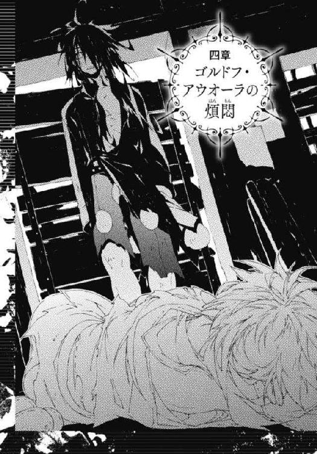

| 六花の勇者 ３ (集英社スーパーダッシュ文庫) | |
| 山形石雄 | |
| (2012) | |
六花の勇者 ３
山形石雄
この本は縦書きでレイアウトされています。
また、ご覧になる機種により、表示の差が認められることがあります。

人物紹介
アドレット
六花の勇者。地上最強の男を自称する少年。
さまざまな秘密道具を駆使して戦う。
フレミー
六花の勇者。他者を寄せつけない冷淡な少女。
銃と爆弾を操る〈火薬〉の聖者。
ロロニア
六花の勇者。臆病で善良な少女。
〈鮮血〉の聖者。
ハンス
六花の勇者。猫の真似をしながら喋る奇妙な男。
人間離れした独特の剣術を使う。
チャモ
六花の勇者。当代最強の戦士と呼ばれる傲慢な少女。
〈沼〉の聖者。
モーラ
六花の勇者。聖者たちの長を務める生真面目で知的な女性。
〈山〉の聖者。
ゴルドフ
六花の勇者。
槍を操る巨漢の騎士。
テグネウ
凶魔を束ねる統率者の一体。
知略に優れ、さまざまな罠を仕掛ける。
ドズー
凶魔を束ねる統率者の一体。
魔神を裏切り、どこかへ姿をくらましていた。
これまでのあらすじ
闇の底から『魔神』が目覚めるとき、
運命の神は六人の勇者を選び出し、世界を救う力を授ける。
地上最強を自称する少年アドレットは、その『六花の勇者』の一人に選ばれ、
魔神復活を阻止するため戦いへ向かう。
だが、約束の地に集った勇者は、なぜか七人いた。
七人のうち誰かひとりが敵であることに気づいた勇者たちは疑心暗鬼に陥るが、
アドレットを中心に、その知略と聖者の力を駆使して謎を少しずつ解明していく。
行く手を阻む凶魔の統率者の一人、テグネウとの激闘を経て
六花の勇者たちは魔哭領の奥へと進むのだが...？

イラスト／宮城
プロローグ 魔神と花
そこには汚泥と花があった。
そして、それ以外の何もなかった。
落涙郷。かつて一輪の聖者が魔神を打ち倒したその地には、汚泥と花の他、何一つ存在していなかった。
魔哭領の西の果て。魔神の眠る落涙郷は、巨大な防壁に囲まれている。それは凶魔の統領カーグイックによって建造されたものだ。自然石を積み上げて建造された防壁は二重の同心円を描いている。外側のものは半径三キロほど、内側のものは半径五百メートルほどだ。粗雑な造りながら、人間界にあるいかなる防壁よりも大きく堅固である。
落涙郷と呼ばれるのは、内側の防壁に囲まれたごく狭い区域のことだ。
そこは一切が赤黒く染まっている。魔神の体から放たれる障毒は、地面の奥深くまで染み込んでいる。辺りには一本の草もなく、一匹の虫もいない。死に絶えた大地にまばらに岩が転がるだけの、不毛な光景が広がっている。
そこに汚泥と、花だけがある。
「.........アドレットォ！」
死に絶えた大地に、醜悪な泥の塊が横たわっていた。
大きさは馬小屋程度だろうか。ぐもり、ぐもり、と音を立て、身もだえするように蠢いている。色は炭のような黒に、血のような赤が入り混じっていた。泥の中から赤い触手のようなものが生えている。長さ五メートルほどの触手は何かを求めるかのように伸びては、諦めたかのように泥の中へと戻っていく。
「.........フレミーィ..................ロロニアァ.........」
泥の中央付近に、大きな唇があった。それは浮かび上がっては消え、消えてはまた浮かび上がる。赤くなまめかしい女の唇だ。その唇が、しわがれた女の声で叫び声をあげる。
憎悪と、殺意の入り混じった不気味な声で、勇者たちの名を呼んでいる。
「ゴルドフゥ.........チャモォ.........アドレットォ.........ハンスゥ.........モーラァ.........チャモォ.........フレミーィ.........ナッシェタニアァ.........」
泥はただ、蠢きながら憎悪のこもった声をあげ続けている。
魔神。人類を襲った最悪の災厄であり、凶魔たちの創造主である。
数分に一度、泥の中から、奇怪な生き物が生み出される。それらは子猫程度の大きさで、どれ一つとして同じ外見をしていない。全身に無数の目がある蛇、上半身は猿で下半身は羽虫のような生き物。足も尾もない首と胴体だけの犬。首だけの蟷螂。猿の手だけが七本融合した、もはや生き物とすら思えないもの。
泥の中から現れた不気味な生き物たちは、のたうち、あえぎ、身をよじる。まるでおぞましい姿に生まれてしまった自分自身に絶望するかのように。
そして不気味な生き物たちは、すぐに魔神から生えた触手に捕らえられる。触手は不気味な生き物を締め上げ、殺し、その死体を泥の中へと引き戻してゆく。
生んでは殺し、殺しては生む。魔神はその無意味な行動を延々と続けている。
その姿から、威厳は感じられない。邪悪なるものが持つ美もなく、長い時を経た存在が持つ崇高さもない。その姿は醜悪で汚らしく、そしてちっぽけですらあった。
七百年前に魔神と戦った六花の勇者バーナは、この魔神の姿を、失望するほどに貧相と評した。
そして魔神のそばには、一輪の花が咲いている。
子供の手のひらに収まるほどの小さな花だ。六枚の花弁を持つ、淡い紫の花だ。淡い紫の花弁は、魔神の障毒に染まっていない。その花は魔神に寄り添うかのように、そっと静かに咲いている。
千年の昔、一輪の聖者が植えた花と言われている。しかしいかなる文献も、いかなる記録もその花の正体を記していない。その花にいかなる力が込められているのかは、一輪の聖者の他に誰も知らない。
人類は三度、この魔神と戦い、打ち破っている。
一度目の戦いは千年前、一輪の聖者がこの地に魔神を封じた。
二度目の戦いは七百年前だ。六花の勇者のうち三人が魔王ゾーフレアを足止めするなか、英雄王フォルマーと弓聖バーナが魔神と戦った。
魔神は触手を振るい、毒をまき散らしながら二人を迎え撃った。息の詰まる悪臭の中、フォルマーは剣を振るい、泥の塊を粉々に切り裂いた。バーナは熱した矢を撃ち込み、魔神の体を焼いた。一時間ほどの攻防ののち、身の毛もよだつ悲鳴を上げて、魔神は動かなくなった。
三度目の戦いは三百年前のこと。千体を超す凶魔が落涙郷に殺到する中、二代目の六花は魔神と激突した。〈刃〉の聖者マーリィと〈時〉の聖者ハユハの援護を受けながら、〈雷〉の聖者メルラニアが聖具の宝石を発動した。魔神に叩き込むためだけに、三十年の時をかけて造り上げた聖具だ。天から降り注ぐ数十条の雷撃に焼かれ、またしても魔神は動きを止めた。
いずれの場合も、魔神が倒れると同時に六花の紋章が大きな光を放ったという。同時に全ての凶魔が動きを止め、そして天を仰いで慟哭したという。
凶魔たちの悲痛な鳴き声は、魔哭領の外まで響き渡った。悲しみにのたうつ凶魔の姿に、先ほどまで死闘を繰り広げていた六花の勇者たちすらが胸を痛めたと伝えられている。生き残った勇者たちが魔哭領を離れてもなお、その声は鳴り止まなかったといわれる。
勇者たちの体に浮かび上がった紋章は、戦いが終わったあと次第に薄くなり、六カ月ほどで消えたという。
生還した勇者の一人、〈刃〉の聖者マーリィは魔神についてこう分析している。
魔神は凶魔の主である。しかし魔神は凶魔に対し、何か命令を出すわけではない。また、凶魔たちも魔神の指示を仰ぐことはしない。
おそらく魔神には一切の知能がない。あったとしても動物並みか、それ以下だ。魔神は人間を憎み、滅ぼすことしか考えられない存在である。
一方、凶魔には知性があるものも珍しくない。人間以上の頭脳を持つ者もいる。凶魔を統率し、指揮しているのはそういった知性を持つ凶魔なのだ。
凶魔の魔神に対する忠誠は絶対のものである。知能なき主に従うなど、人間では考えられないことだが、凶魔は違う。凶魔は全てを懸けて魔神に尽くし、魔神の願いをかなえるためにのみ生きている。
魔神への忠誠こそが凶魔の存在意義であり、それなくして凶魔は存在しえないのだと。
〈刃〉の聖者マーリィの分析は、おおむね正しい。しかし、一体の例外が存在する。
自らの意思を持ち、自らの野望を抱き、魔神のためではなく己のために生きる凶魔がいる。
名はドズー。彼は二百年ほど前に、魔哭領を去り、人間のいる世界へ向かった。
彼は二百年かけて策を練り、野望を成し遂げる準備を整え、魔哭領へと戻ってきた。その傍らには、彼が育て上げた無二の同志、ナッシェタニアが寄り添っている。
一章 再会
「皆の存念を聞きたい」
と、モーラが言った。
魔神の目覚めから十四日後である。テグネウの罠を切りぬけたアドレットたちは、魔哭領の安全地帯である〈永の蕾〉にいた。そこで重傷を負ったハンスとモーラの傷が癒えるのを待っていた。
〈永の蕾〉の周囲には、凶魔の姿はほとんどない。さらに西にある斬指の森と呼ばれる場所で、アドレットたちを待ち受けているようだ。斬指の森は魔哭領のおよそ五分の二を占める広大な森だ。その名は千年前、一輪の聖者が凶魔の攻撃を受け、左手の指を失ったことに由来している。
傷が癒えるのを待ちながら、アドレットたちはさまざまな話をした。まずは七人目の正体について。それぞれが持つ手がかりを出し合い、思索と議論を重ねた。しかし結局答えは出ない。偽の紋章はどうやって生み出されたのか、見当もつかなかった。
霧幻結界の戦いのことは、さらに詳しく話した。ナッシェタニアの正体が暴かれたあとアドレットは気を失っていた。その後の様子のことを仲間に聞いた。彼女はハンスやモーラ、チャモに追い回されていたが、明け方近くになって結界を出て、どこかへ消えたという。
ナッシェタニアはなぜ裏切ったのか、凶魔の手はどの程度人間の世界に伸びているのか、それについても話し合ったが、やはり結論は出ない。
フレミーが凶魔の内部事情を皆に伝えた。テグネウの部下には、特質凶具と呼ばれる凶魔がいるという。彼らは戦闘力を高めるのではなく、それぞれが持つ独自の能力を、最大限まで進化させるように命じられた凶魔だという。
ある凶魔は追跡することに特化しているという。ある凶魔は聖者の体内に侵入し、力を使うことを封じる能力を得たという。ある凶魔は人間から情報を引き出すことに長けている。ある凶魔は嗅覚にきわめてすぐれ、ある凶魔は人間と交わって子を生す能力を得た。
フレミーも全ての特質凶具たちの能力を知っているわけではない。それでも知っている限りの能力と姿を皆に伝えた。
それからも様々な話をした。夜が明け、話題が尽きるころ。不意にモーラが存念を聞きたいと提案をしてきた。
「どうした、モーラ」
と、アドレットが聞く。
「それぞれ、誰を疑っているのか、この場で言ってみてはどうか」
「軽々しく仲間を疑うなと言ったはずだぜ」
「それはわかっておる。だが、疑うなと言われても疑ってしまうのも事実じゃ。自分自身のどこが疑われているかを知ることで、濡れ衣を着せられてしまうのを防げることにはならんか？」
アドレットはいい気分ではない。しかしフレミーが静かに言う。
「悪くない提案だと思うわ」
「にゃひ、あんまり意味があるとは思えねえべにゃ」
と、ハンス。
「もちろん、完全な証拠が見つかるまでは殺したりはせん。あくまでも、この先の参考にできれば、ということじゃ」
「まあ.........仕方ねえな」
アドレットはそう言って肩をすくめた。
「私は、ゴルドフを疑っているわ」
真っ先にそう言ったのはフレミーだ。
「彼はナッシェタニアに仕える騎士だった。疑うのは当然のことよ」
「そうなんだ。チャモはフレミーを疑ってるよ」
そこにチャモが口を挟んできた。
「当然だよね。ちょっと前まで敵だったんだから。チャモね、フレミーと殺し合ったときのこと忘れてないよ」
「そうでしょうね。他には？」
フレミーはチャモの言葉を意に介さない。
「.........実はわたしもゴルドフを疑っておる」
モーラがそれに続く。
「ナッシェタニアに仕えていたからといって、七人目に決まりだとは考えておらん。じゃが、ゴルドフからは、勝利に貢献しようとする意志が感じられぬのじゃ」
ゴルドフは三人の言葉を、黙って聞いていた。その目には精気がない。ぼんやりと地面を見て、背中を丸めて座っている。魔哭領に来てから、彼はずっとこうだ。
「ゴルドフよ。お前が七人目でないのなら、仲間たちのためにもっと尽くすべきではないか。言葉で、そして態度で、自分が七人目ではないことを伝えるべきではないのか。お前も、疑われるのは気分が悪いじゃろう」
心配するモーラの言葉も、ゴルドフには届いていない。聞こえてはいても、心は閉ざされたままだった。
最初に出会ったとき、ゴルドフはこうではなかった。強く、忠実で、時に傲慢さをのぞかせる若き騎士。アドレットは彼に、そんな印象を受けていた。しかしナッシェタニアが去ってからの彼は、まるで別人だ。
「どう思う？ ゴルドフ」
アドレットが尋ねる。しかしゴルドフは無言のままだ。そこにチャモがもう一度手を挙げた。
「あ、そうだフレミーも怪しいけど、ロロニアも怪しいと思うんだ」
「うえ！」
黙って聞いていたロロニアが、素っ頓狂な声を上げた。
「ど、ど、どうして.........ですか」
「ううんとね、ロロニアって、何を考えてるかよくわからないんだよ。その辺が怪しいかな」
「そ.........そうですか.........ご、ごめんなさい。もっと、その.........がんばります」
がたがたと震えながらロロニアが言う。
「あ、でもやっぱりフレミーかも。うん、やっぱフレミーで」
適当なチャモの発言に、モーラはため息をつく。
「ハンスはどうじゃ」
問いかけられてハンスは、顎に手を当てて少し考えた。
「おらか.........おらは、アドレットとチャモを疑ってるにゃ」
ゴルドフを除く全員が、ハンスを驚いた眼で見つめた。
「おらはにゃ、誰が怪しいかは考えてねえだ。誰が七人目だったら一番やべえかが、重要だと思ってるだ。この中で七人目だった時に一番やべえのがアドレットだべ。その次はチャモだ。だからおらはこの二人を疑ってるだよ」
そういう考え方もあるのか、とアドレットはちょっと感心した。
「んで、おめえはどうだにゃ、ロロニア」
ハンスが話を振る。ロロニアは言いにくそうに、周囲を見渡している。
「素直に言ったほうがいいわよ。今言われたでしょう？ 何を考えてるのかわからないと」
フレミーの指摘に促され、ロロニアは小さな声で言う。
「ゴルドフさん.........を疑っています。理由は.........モーラさんと同じです」
これで、五人中三人がゴルドフだ。彼としては本物の六花であっても、七人目であっても、良くない状況だ。にもかかわらずゴルドフの心が動いた様子は全くない。
「あなたはどうなの、アドレット」
「言わない。俺はリーダーだからな。誰を疑ってるか言っちまったら信頼が損なわれる」
アドレットはきっぱりと言う。
「ま、おめえはそのほうがいいかもにゃあ」
そして全員の視線が最後の一人、ゴルドフに向く。彼は顔を上げ、うつろな目で周りを見渡した。
「ゴルドフ。おめえはどう思ってる。今までの話聞いてたかにゃ？」
「.........聞いていた」
しばらくして、ゴルドフは言った。
「んで、誰を疑ってるだにゃ」
「.........誰も」
その発言に、皆が戸惑った。七人目は自分であるという、自白と捉えるべきなのか。
「誰が、七人目でも.........構わない。どうだって、構わない」
「ゴルドフよ。わたしやロロニアはお前のそういう態度を疑っているのだぞ」
ついにモーラが怒りだした。
「なぜ七人目が誰かを考えない。なぜナッシェタニアについて知っていることを話さない。お前は本当に世界を守るつもりがあるのか！」
「.........世界を、守る？」
ゴルドフの目に、一瞬だけ覇気が戻った。彼は掌を見つめ、そして拳を握りしめた。
「そうだ、モーラ。思い出した。俺は、世界を守る。守らなければ、ならない、世界を、守る。そのために俺は.........」
ゴルドフの拳が震え出した。ぎじ、ぎじ、と妙な音が立った。あまりに強く拳を握ったせいで、手の骨がきしんでいる音だ。
「そうじゃゴルドフよ。お前は世界を守る者じゃ。立ち直ってくれたのか？」
モーラがゴルドフの指に手を添える。しかし、ゴルドフは冷たくその手を振り払う。そしてまた首をうなだれ、仲間たちが何を言っても答えることはなくなった。
「あまり、話した意味がなかったわね」
「そのようじゃな。すまぬ」
「この話はもういいだよ。それより、テグネウのことが気になるにゃ」
「そうね。この先には斬指の森があるわ。見たところ、テグネウはそこで待ち伏せている」
話題が別のことに移ったあとも、アドレットだけはゴルドフを見つめていた。世界を守る。ゴルドフのその言葉に、アドレットはなぜか頼もしさを感じなかった。
口には出さなかったが、実はアドレットもまたゴルドフを疑っていた。なぜならアドレットは、彼が仲間だと思えないのだ。
疑心暗鬼に囚われた仲間たちだが、それでも少しずつ連帯感は生まれてきている。
ハンスの知恵と実力はアドレットも認めるところだ。さっきはああ言われたが、彼が自分を信頼してくれていることもよくわかっている。チャモは扱いづらい少女だが、案外素直で可愛いところもあると思うようになってきた。一度は裏切ったモーラだが、家族や仲間たちを守ろうとする彼女の気持ちは本物だ。アドレットのことを心の底から信じ、補佐してくれるロロニアの存在はありがたい。すれ違うばかりのフレミーだが、一番大切な仲間であることは変わらない。
だがゴルドフは違う。アドレットにはゴルドフと通じ合えるものがない。彼の中に理解できる部分がない。アドレットは時に、彼が得体の知れない怪物に見えることがある。
アドレットはまだ知らない。ゴルドフ・アウオーラという少年の真実を。
魔神が目覚めてから十五日目。
ハンスとモーラの傷は癒え、モーラの壊れた鉄甲も修理できた。七人はまた旅立った。深夜、フレミーの狙撃とチャモの従魔で〈永の蕾〉を監視する凶魔を倒し、広大な森へと進んでいった。
全員が、アドレットの用意した黒いケープに身を包み、身を低くして歩いている。夜の闇に溶け込みながら西へ西へと進む。
アドレットたちはテグネウを倒すことは考えていない。七人目を見つけることも考えていない。彼らは必死に隠れ、そして逃げている。
「モーラ、背後に敵は？」
「おらぬぞ」
先頭を歩くアドレットの問いに、最後尾のモーラが答える。彼女は拳を背後に向け、後ろ向きに歩いていた。ハンスが右を、フレミーが左を警戒しながら、静かに七人は進んでいる。
その時一匹のミミズが、七人の足もとに這い寄って来た。チャモがミミズをつまみ上げ、口のあたりに耳を寄せる。
「この先三百メートルぐらいのところに、敵の作った柵があるってさ。柵の前は凶魔でいっぱいだよ」
「そうか.........フレミー。柵はどんな作りになっている？」
「南北に三十キロ近くあるわ。避けて通るのは不可能だと思う。柵自体はモーラの腕力なら壊せるわ。だけど近づいたら、大きな音が鳴る仕掛けになっている」
「仕掛けの作りはわかるか？」
「紐と木片を組み合わせた鳴子よ。紐に足を取られたら、木片が打ち鳴らされて音が出る」
「にゃひ、そんなもんかにゃ。おらなら簡単に越えられるべ」
アドレットは顎に手を当て、しばし考える。それから皆を集め、作戦を説明する。
「まず一キロぐらい後退する。そうしたらフレミー、地面に爆弾を設置しろ。それを一時間後に爆発させる。その間に俺たちはいったん北に移動する」
「陽動じゃな」
モーラの言葉にアドレットは頷く。
「爆発が起きたら、凶魔たちはそこに集結するだろう。そしてチャモの従魔に柵を攻撃させる。これも陽動だ。俺たちは南下して柵に向かう。残っている見張りはフレミーが狙撃で排除。鳴子は俺とハンスが壊す。モーラはなるべく音を立てないように柵を壊してくれ」
「了解した」
「くれぐれも.........凶魔に、テグネウに見つからないようにな」
七人は行動を開始する。音もなく移動し、フレミーの爆弾とチャモの従魔で敵を混乱させる。手薄になった場所にフレミーが銃を撃ち込み、アドレットとハンス、モーラの三人で柵を突破する。そして見張りの凶魔が戻ってくる前に、急いでその場を離れ西へと向かう。
「順調.........なのかな、アド君」
アドレットの隣を歩くロロニアが言った。
「今のところは、な」
アドレットはふと、木々の隙間から覗く空を見た。星はすでに消え、ゆっくりと空が白み始めている。
「おそらく、テグネウは俺たちを見失っている。もし俺たちの行動を把握してるなら、もっとたくさんの凶魔がこのあたりで待ち伏せてるはずだからな」
「そ.........そうだね」
「とにかく、逃げ続けるぞ。この森を抜けるまで、谷を越えるまで、落涙郷にたどり着くまで全力でテグネウから逃げるんだ」
アドレットがそう言うと、ロロニアは頷いた。ハンスやチャモ、フレミーたちは言わずもがなだという様子だ。
テグネウとは戦わない。テグネウに居場所を掴ませない。ただひたすらに逃げ続け、まっすぐに落涙郷へ向かう。それがアドレットたちの方針だった。
「気づいている？ アドレット」
ふいにフレミーが言った。
「どうした」
「後ろのほうで何回か戦いが起こっているわ。かすかに聞こえるだけだから、誰と誰が戦っているかはわからないけど」
アドレットは歩きながら耳を澄ます。木のざわめきと仲間たちの足音、その他にかすかに凶魔の叫び声が聞こえたような気がした。
「たしかに、誰か戦ってるな。誰と誰だ？」
「見に行かせる？ かなり時間がかかるけど」
とチャモが言う。アドレットは首を横に振る。
「気にはなるが、時間のほうが惜しい。放っておいて先に進むぞ」
フレミーとチャモが頷く。七人はさらに西へと進む。後ろを振り返るが、すでに柵も見えなくなっていた。
アドレットたちが通り過ぎてから一時間ほど経った後。一体の凶魔が壊れた柵を見つめていた。
「ふむ。これも突破されたか。まいったね」
野人の体とカラスの頭を持つ凶魔。その手には一つの大きなイチジクの実が握られている。野人の凶魔───テグネウは、ため息をつきながら言った。
「彼らの方針は、ひたすらぼくから逃げることのようだ」
周囲には、大量の凶魔がいる。彼らは声を嗄らしてわめき合っている。言葉を話せる上級の凶魔が早く六花を見つけ出せと、下級の凶魔たちに指示を出している。
「どう思う？ 十八番」
テグネウの隣に、蛇の凶魔がいる。片手で握れる程度の細さだが、体長は十メートルを超えている。頭部から五十センチほどの場所に、こよりのように細い二本の腕が生えている。
「奴らは、とんダ臆病者どもです。恐れるに足りマせん」
その凶魔は、嘲笑うかのように言った。テグネウ配下の中でも、特別な存在である特質凶具。蛇の凶魔はその十八体目だ。彼らはテグネウの命令によって自らの体を進化させ、各々が独自の能力を手に入れている。
「恐れるに足りないのは君だよ」
そう言ってテグネウは、十八番を軽く蹴った。
「君がもしも、彼らの立場だったらどうする？ 何を優先して行動する？」
「.........私なら、七人目の正体を暴くこトが第一と考えますが.........」
十八番がそう言うと、テグネウはため息をついた。
「それは考えられる中で最悪の手だよ。現状、彼らには七人目を見つける手段はない。そして七人目に至る手がかりすら見つけていないはずだ。そんな状況で、何をするというんだね」
「はア.........」
「七人目がぼろを出すまで待つ。ぼくが彼らの立場ならそうするね。他に考えは？」
「あるいは、テグネウ様を倒すことを優先するかもしれマせん」
「それは凡手だ。たしかにぼくを倒せれば、六花は大きく勝利に近づくね。だがそれと引き換えに、彼らは貴重なものを失う。なにかわかるかい」
「そ、ソれは」
十八番の答えを待たず、テグネウは話し続ける。
「時間だよ。魔神が復活するまであと十四日しかない。それまでに彼らが落涙郷にたどり着けなければこちらの勝利なのだ。六花がぼくを狙いに来るとしたら、ぼくは全力で時間稼ぎに徹する。彼らはぼくを倒せないまま、大切な時間を浪費し続けるだろう」
「.........」
「これでわかったね。彼らがとれる最善手が何か。それはぼくから逃げること。そしてぼくを無視して、まっすぐに落涙郷へ向かうことだ。いくらぼくでも、彼らの居場所がわからないうちは、とれる手も限られるしね」
テグネウの嘴が動いた。どうやら笑っているようだ。
「やるじゃないか、アドレット。やはりこの程度の判断を間違えるような君ではないよね」
「.........提案がありまス、テグネウ様。七人目に、六花の居所を我らに伝えルよう命じてはいかがでしょう」
テグネウは、呆れ果てたとでもいうように肩を落とした。
「これ以上馬鹿なことを言うなら、潰すよ」
そう言って十八番の体に足を載せる。蛇の凶魔は頭を下げ、こよりのような細い腕を地面につけて詫びる。
「まあいいさ。のんびりやろうよ。彼らを探すもよし、おびき出すもよし。遊ぶ方法はいくらでもあるんだから」
〈永の蕾〉を出てから二日間、アドレットたちは斬指の森を逃げ続けた。
複雑に入り組んだ森の中は、フレミーが案内した。チャモの従魔が周辺を索敵し、手薄な場所を探した。モーラが山彦の力で敵をかく乱し、アドレットとハンスが知恵を出し合って敵の行動を推理した。運悪く凶魔に遭遇したときは、位置をテグネウに伝えられる前に全力で抹殺した。
凶魔を完全に殺すには、核を探し出し、壊さなければいけない。放っておけば凶魔は数年後に蘇ってしまう。しかし今はその手間が惜しい。死体を捨て置き、アドレットたちは先へ進む。
斬指の森は広大だ。いくら凶魔の数が多くとも、全域を警戒することはできない。二日間、アドレットたちはテグネウに見つかることはなかった。
東の空が赤く染まり、夜が明けようとする頃。アドレットたちは森の出口に近づいていた。
「.........森の向こうに、凶魔の姿はないわ。安心して進んでもいいと思う」
先行して様子を探っていたフレミーが、戻ってきて言った。
「後ろにも凶魔はいないね。完全に逃げ切ったんじゃないかな」
「テグネウはおらたちがもっと北にいると思ってるはずだにゃ。このまま進んでも、大丈夫だとおらは思うだよ」
チャモとハンスが言う。
「まずは一つ、関門を突破したな」
アドレットたちは笑い合い、そして互いに握手を交わし合った。
フレミーに手を差し出すが、彼女は腕組みをしたままそっぽを向いた。アドレットはしつこく手を出し続ける。やがて渋々指先だけを軽く握った。
次いでロロニアが、モーラが、フレミーに握手を求める。フレミーは嫌そうな顔をしながらも、握手に応じていく。ハンスも手を出すが、これは突っぱねた。
「それにしても、また七人目は何もしなかったわね」
フレミーが言った。仲間たちは森を進む間、常に互いを監視し合っていた。闇にまぎれて仲間を襲うのではないか、わざと敵に見つかるような行動をとるのではないか、ひそかにテグネウと連絡をとっているのではないか。しかし、怪しい行動をとるものは誰もいなかった。
「焦ることはねえぜ。七人目はいずれ必ず行動を起こす。見逃さないよう注意すればいいだけだ」
「.........そうだといいけど」
ふとアドレットは輪の端にいるゴルドフに目を留めた。まだ彼と握手をしていない。アドレットが手を差し出すと、意外にも素直に握手を受けてくれた。
「お前もよくやってくれたぜ。これからもがんばろう」
アドレットはそう言うが、ゴルドフは目を合わさず答えもしない。
森を進む間、アドレットは特に注意してゴルドフを見ていた。彼はアドレットの指示を忠実に実行し、怪しげなそぶりは一切なかった。だが彼が何を考えているのかは、やはりまだ謎のままだ。抜け殻のようなこの態度は、演技なのかそれとも本心なのか。アドレットの目には判別できない。
「そろそろ行くわよ、アドレット。森を抜けたら、次は谷よ。気を抜かないで」
「あ、ああ。わかった」
フレミーの声に応え、アドレットは歩き出す。しかし彼にはゴルドフの様子がどうにも気にかかっていた。ゴルドフは何を考えているのだろう。今の彼にとってナッシェタニアとは何なのだろう。答えは出ないまま森を抜け、さらに西へと進んでいく。
アドレットは知らなかった。この時すでに事件は始まっていたことを。斬指の森の片隅で、想像もできない事態が発生していたことを。
アドレットたちが森を抜けるのと同じ頃、テグネウはハンモックに寝そべっていた。胸の上には一冊の本と、大きなイチジクの実が置かれている。空の上から、一体の凶魔が下りてくる。鷲の姿の凶魔だ。
「テグネウ様。ご報告いタします」
「六花を追跡していた特質凶魔が、チャモの従魔に襲われて倒された。六花の痕跡と臭いは失われ、現状手がかりはないに等しい。違うかな？」
テグネウは目も開けずに答える。その声にはかすかな苛立ちがこもっている。
「は.........ハい」
ハンモックの下から地図を取り出し、テグネウはそれを眺める。
「さあて、どこに行ったのかな？ まだ森の北にいるのか、それともすでに谷にたどり着いているのか.........」
しばらくの間テグネウは考え続ける。
「.........テグネウ様、ご指示を」
「彼らはもう森を抜けているね。半分を森に残し、もう半分を谷に向かわせてくれ。次の遊び場は、谷にしよう。彼らが谷を渡る隙をついて、横合いから殴りつけるとしようか」
「かしこまりマした」
鷲の凶魔が飛び立とうとした刹那、テグネウの手が伸びてその脚を掴んだ。
「テグネウ様、何カ」
その問いに答えず、テグネウは周囲を見渡す。カラスの頭は表情を変えることができず、その内心は誰にも読み取れない。
「前言撤回。駒たちをぼくの周囲に呼び寄せろ」
「ハ.........どうしてでシょう」
「敵だよ」
すぐに鷲の凶魔が飛び立つ。ハンモックから降りたテグネウは、イチジクを一口かじる。そして、地面に落ちていた棍棒を拾い、握りしめた。
テグネウの周囲で何者かが走っているような、不穏な音が響き渡った。
森を抜け、五時間ほど歩いただろうか。すでに太陽は昇り切っている。七人は凶魔の襲撃を受けることもなく、まっすぐに西へ向かった。これで魔哭領の五分の二を進んだことになる。
平原を歩いていた七人は、次なる障害に直面していた。
「にゃああ！ でっけえだにゃあ。おらこんなすげえもん見るの初めてだべよ」
それを一目見た瞬間、ハンスがなぜか嬉しそうに大声を上げた。アドレットはその巨大さに気圧され、絶句した。モーラやロロニア、チャモも目を丸くしている。
彼らの前に立ちはだかったのは、谷だ。
深さはおそらく百メートル近く。幅は狭いところでも百五十メートルはある。谷は南北にまっすぐ伸び、北を見ても南を見ても、果ては全く見えない。
崖は垂直に切り立ち、掴むところのないすべすべした岩で覆われている。そして谷底を流れる川は沸騰し、もうもうと湯気が上がっている。熱気はアドレットたちのいる所まで届き、気温は森の中より五度は高かった。アドレットの今までの人生で、これほど巨大な谷は見たことがない。
三日前、〈永の蕾〉で、フレミーからこの谷の存在は聞いていた。しかしこの巨大さは、アドレットの想像を遙かに超えていた。
「信じられないです。これを全部、凶魔たちが掘ったのですか？」
アドレットの隣で、ロロニアが言った。
「凶魔たちは三百年もの間、六花との戦いに備え続けてきたのよ。この程度の谷を掘るなんて、造作もないことだわ」
彼らが向き合っている巨大な谷。それは一輪の聖者が魔神と戦ったときも、過去の六花が魔神を倒したときも、存在していなかったものだ。それはカーグイックの渓谷と名付けられている。凶魔の統領の一人カーグイックが造り上げた、世界最大の濠なのだ。
フレミーによるとこの谷は、魔哭領を真っ二つにしているという。落涙郷にたどり着くには、この谷を越えねばならない。
しばしアドレットたちは、雄大な谷の光景に目を奪われていた。やがてモーラが、渋い顔をして言った。
「どうやって、この谷を越えるのじゃ。テグネウはいずれ我々が森を抜けたことに気づくぞ。凶魔が殺到し、取り囲まれてしまう」
「すぐに見つけるさ。谷を渡る方法ぐらい、どうとでもなる」
そう言ってアドレットは、背中の鉄箱からロープを取り出した。モーラにロープの一端を持たせ、アドレットは崖を下っていく。
七十メートルほど降りたところで、下から上がってくる熱気で息ができなくなってきた。たまらずロープを登り、崖の上に戻る。
「無駄よアドレット。この谷は聖者の力でも、突破するのは容易ではないわ」
フレミーがそっけなく言う。
「橋はないのか、フレミー」
「あるわ。北の果てと南の果てに一つずつ。だけどそこを通るのは不可能だと思う。カーグイックの配下が待ち伏せているし、私たちに通られそうになったらすぐに破壊される仕掛けになっているわ」
「ねえフレミー。抜け道とかないのかな。橋を使わず、安全に通れるような道は」
チャモが尋ねる。
「作っておく必要がないでしょう。凶魔は普段は、橋を通って渡るのだから」
「それもそうか.........」
チャモが腕を組み、頭をひねる。他の仲間たちも同様に、谷を渡る方法を考えている。しかし、誰も妙案を思いつかないようだ。
「ロロニアの鞭じゃ.........届かねえよな」
アドレットが言った。ロロニアは残念そうに頷く。ロロニアは自身の血を染み込ませた鞭を自在に操ることができる。だがその能力を使っても、橋を架けることはできそうにない。彼女の鞭は三十メートルほどしかない。ロープを使って長さを補っても、向こう岸までは届かない。
「チャモのペットに、空を飛べる奴はいねえだか？」
とハンスが言った。
「そんなのがいるなら悩んでないよ。猫さん、チャモのこと馬鹿にしてない？」
チャモが不愉快そうに答える。
「アスレイがおればな.........氷で橋を作って渡れたのじゃが」
モーラが口惜しそうに言う。アスレイとは、六花候補として名を知られていた〈氷〉の聖者だ。しかし彼女は六花殺しであったフレミーに敗れ、命を落としている。
「〈氷〉の聖者アスレイを真っ先に殺したのは、この谷を突破させないためよ。テグネウからそう指示を受けていたわ」
フレミーがそっけなく言う。
それからもしばらくの間、七人は話し合いを続けた。しかしわかったことは、現在の自分たちの力では、この谷を越えることはできないということ、それだけだった。
敵の進撃を防ぐために、濠を造る。実にまっとうで単純な発想だ。しかしこういう正攻法が、実は一番やっかいなのだ。正攻法は、有効だからこそ正攻法なのだ。カーグイックなる凶魔、そいつはもしかすると、テグネウ以上の強敵かもしれない。
「とにかく、ここで話し合っていても仕方がない。三手に分かれて、谷を渡る方法を探そう。どんな些細なことでもいい。何か手がかりを見つけるんだ。ハンスとモーラが北、俺とロロニア、ゴルドフが南、チャモとフレミーはここに残って背後を警戒していてくれ」
「思いの他、面倒な障害になりそうじゃな」
モーラが言う。アドレットは余裕の表情を見せて答える。
「カーグイックとかいうやつも、なかなかやるみたいだな。この地上最強の男がいなければ、ここで立ち往生する羽目になってたな」
「お、久々に出ただにゃ。おめえの地上最強宣言」
そう言ってハンスが苦笑する。
「俺が地上最強ってのはもう周知の事実だからな。あえて言うことはないってことだ」
「アドレット以外誰も思ってないよ」
チャモが面倒くさそうに言う。
「あ、あたしは思ってるよ。アド君は地上最強だって信じてるよ」
と、ロロニアが言った。アドレットが腹を立てるのではないかと気を遣っている。
「わたしもそう思うぞ。ある意味では、アドレットこそ地上最強かもしれぬ」
「ある意味では、じゃねえ。俺こそが地上最強だ」
その時フレミーが、冷たい声で言った。
「.........あなたは不安になると、自分は地上最強だと言い出すのね」
図星を指されたアドレットは、思わず口ごもる。
「にゃひ、そういう頼りねえところに惚れてるんだべ？」
「違うわ」
「うにゃにゃにゃ。それじゃあこんな馬鹿のどこに惚れるだよ」
「.........いちいちうるさい男ね」
険悪になる二人の間に、モーラが割って入る。
「時間がないのじゃ、ともかく谷を渡る方法を見つけよう。行くぞハンス」
そう言ってモーラが、ハンスを引っ張って北へと向かう。アドレットもロロニアとゴルドフを連れて南へ向かおうとした。その時フレミーが、ロロニアに声をかけた。
「ロロニア」
「は、はい。なんでしょうか」
急に声をかけられたロロニアが、驚いている。フレミーがロロニアの頬に顔を近づけ、何かを囁いた。ロロニアは頷き、アドレットのところに走ってくる。
「なんて言われたんだ」
走りながら尋ねると、ロロニアはなぜか口ごもった。
「そ、その.........しっかりアドレットを守るのよ、って言われました」
後ろを振り向くと、フレミーがアドレットのほうを見ていた。面映ゆい気持ちを抱えながら、アドレットは南へと走る。
「フレミーさんって、優しい人なんですね」
とロロニアが言った。そうだな、とアドレットは頷く。
少し前から、フレミーとロロニアが仲良くなっているような気がする。ロロニアがフレミーになついたのだろうか、それともその逆なのか。
同じ頃、アドレットたちのいる地点から南東に二十キロほどの場所に、五十体ほどの凶魔がいた。
そこは斬指の森を抜けた先である。ごつごつとした岩に覆われた、不毛の大地だ。岩の下から熱気が立ち込めて、周囲にはいくつもの間欠泉が噴き上がっている。凶魔たちが溶岩地帯と呼ぶその地には、地面の下数十メートルのところにマグマによって熱せられた地下水脈がある。
集った五十体の中には、両生類の凶魔がいる。巨大な体と、大きな口を持ち、肌は岩で覆われている。時折体から、奇妙な臭いのする湯気が立っている。
猿の凶魔がいる。人間程度の大きさで、体はひどく細い。体毛はひっきりなしにざわざわと揺れている。
そして彼らの中央に坐しているのは、一体の愛らしい凶魔だ。体は小さく、リスと犬を足したような、不思議な姿をしている。
「準備ができましたよ、ナッシェタニア」
愛らしい凶魔が静かな声で言った。その名をドズーという。魔神に反旗を翻し、魔哭領を去った裏切り者。凶魔を束ねる三体の統領の一体である。
「我々の運命は、今日ここで決定します。ナッシェタニア、いかなる結果が待とうとも、諦めることなく戦い続けましょう」
ドズーの声は小さい。その声は、ドズーのそばに座る少女───ナッシェタニアの耳にしか届いていない。
「わたしを心配しているの？ ドズー」
そう言ってナッシェタニアは笑った。
「安心して。わたしは何も怖がっていないわ。この戦い、わたしたちの勝利は明白だもの」
「.........ナッシェタニア」
「わたしたちにはゴルドフがついているわ。だから、恐れることは何もない」
ドズーは静かに頷く。
「戦いましょう。我々の野望のために」
「人類と凶魔の未来のために」
「そして死んでいった同志たちのために」
そう言ってナッシェタニアは立ち上がり、尻の埃を払った。
「さあ、みなさん。始めましょう。チャモ・ロッソの抹殺を」
その一言と同時に、状況は急激に動き始める。ナッシェタニアは取り囲む凶魔たちを、笑いながら見つめていた。
「.........ねえ、アド君、ゴルドフさん」
十分ほども過ぎただろうか。崖の下を見つめるアドレットとゴルドフに、ロロニアが声をかけた。
「何か見つけたのか？」
アドレットは言った。その声には焦りの色があった。いくら見渡しても、手がかりも何も見つからない。
「いや、見つけてないけど.........何か、変じゃない？」
「何がだ？」
「凶魔はどうしていないんだろう」
そう言われたアドレットは、周囲を見渡した。もうそろそろ、テグネウも六花が森を抜けたことに気づいている頃だろう。気づいていなかったとしても、谷に斥候ぐらいは放っているはずだ。これまで一度も遭遇していないのは、確かに不自然だ。
アドレットは懐からフレミーから渡された連絡用のかんしゃく玉を取り出した。何か異変が起きたら、フレミーが遠隔操作でこのかんしゃく玉を破裂させてアドレットたちを呼ぶ手はずになっている。
「フレミーやハンスたちも、凶魔と遭遇してねえってことか」
「それも変なんだけど.........あれ」
ロロニアは遠くの空を指さした。巨大な蛾の凶魔が一体、魔哭領の奥から飛んでくる。アドレットたちを発見した様子はない。南東に向かって、全速力で飛んでいる。
「さっきも、あっちに向かって凶魔が飛んでたんだよ」
「.........妙だな」
南東を見ながらアドレットは首をかしげた。凶魔が南東に集まっていることは推測できる。だが理由がわからない。六花が谷のほうに向かうことは、とうにテグネウも予想していただろう。それを無視して、無関係な場所に凶魔を集結させる理由があるのだろうか。
その時だった。ゴルドフがゆらりと、南東に向かって歩き出した。
「どうしたんですか、ゴルドフさん」
ロロニアが声をかけるが、ゴルドフは止まらない。最初はゆっくりと、次第に急ぎ足で二人から離れていく。
アドレットは慌ててその背中を追った。何か様子がおかしい。走り出したゴルドフに追いつき、その肩を掴む。
「おい、勝手に行動するな。今はそっちに用はねえぞ」
その時だった。アドレットの手首が掴まれたかと思うと、体が反転した。何が起きたのかわからないままアドレットは背中を地面につき、青空を見上げていた。
「アド君!?」
投げられたとわかったのは、ロロニアがそう叫んだ後のことだ。
「何をしやがるゴルドフ！」
ゴルドフの手を振り払い、地面を転がって立ち上がる。
「.........姫が、危ない」
「何があった。姫.........ナッシェタニアがどうかしたのか？」
ゴルドフはアドレットに応えず、早足で南東に向かって歩き続ける。
「待て、ゴルドフ。説明しろ。ナッシェタニアがどうした？」
「姫が危ないんだ、助けに、行く」
「何を考えている？ ナッシェタニアは敵だぞ」
アドレットはゴルドフの前に回り込んだ。次の瞬間、アドレットの腹に拳が突き刺さった。肺から空気が全て漏れ出す。足の力が抜け、膝が地面に落ちる。
「ゴルドフさん!? 何を!?」
ロロニアがアドレットに駆け寄る。ゴルドフは振り返り、二人に言った。
「アドレット、ロロニア。俺は、姫を、助けに行く」
「どうして急に？」
喋れないアドレットの代わりにロロニアが聞く。
「よく、聞け。よく、聞くんだ。俺の、邪魔をするな。俺は、姫を、助けに行く」
魔哭領に来てから、ずっと死人のようだったゴルドフの目に光が戻っていた。暗い目の奥に、ぎらぎらとした炎が宿っていた。
「俺、一人で、行く。お前たちは、ついてくるな」
「待ってください、ゴルドフさん！ 何があったんです!?」
ロロニアが叫ぶ。
「状況が、変わったんだ。俺の邪魔をするなら、生かしてはおけない」
「い.........生かしては？」
ロロニアが怯える。その時アドレットは意外なものを見た。
ゴルドフが涙をこぼしていた。先ほど凶魔が去った南東の方角に目を向け、声を上げずに泣いていた。
アドレットが立ち上がった時には、すでにゴルドフは背中を向けて走り出していた。追いかけようとしたアドレットを、ロロニアが止めた。
「.........一人で行っちゃだめだよ。今のゴルドフさんは.........まともじゃない」
巨体に似合わぬ恐るべきスピードで、ゴルドフは南東へと走っていく。その背中をアドレットたちは、ただ見送ることしかできなかった。
それから三十分後、ゴルドフを追って六人は平原を走っていた。
「どういうことなの？」
フレミーが尋ねた。アドレットとロロニアから事情を聞いた仲間たちは、一様に困惑の表情を浮かべていた。意味がわからないのはアドレットも同じだ。
「ひょっとしたら、本当におかしくなっちまったんじゃねえべか？」
ハンスが言った。実のところアドレットも、それが一番可能性が高いと思っている。それぐらいゴルドフの行動は意味不明だ。
ゴルドフがナッシェタニアを慕っていたことはわかっている。凶魔の側についたナッシェタニアを、こちら側に引き戻したいと思うことは自然な感情だろう。それを助けに行くと言っているのだろうか。しかし、なぜ今助けに向かうのか、全くわからない。
その時、アドレットたちは向かう道の先に、凶魔の死体を発見した。数は三体。アドレットは死体に近づき、傷の様子を見る。
「ゴルドフがやったのか？」
モーラが言った。傷の様子を見る限り、おそらくそうだろう。三体とも、重く鋭い一撃で仕留められている。そして奇妙なことに、三体とも殺されたあとに、腹を切り裂かれている。
「腹の中に手を突っ込んで、かき回したみたいだ。何をしているんだゴルドフは」
「ナッシェタニアを助けようとしているんじゃないかしら」
フレミーが言った。
「.........凶魔の腹を裂いて、ナッシェタニアを助ける？ どういうことだよ」
ゴルドフが完全におかしくなったという可能性はさらに高くなった。アドレットたちはその場を離れ、さらにゴルドフの後を追った。
「この先には何があるのじゃ？」
モーラが走りながら言った。
「もう少し進むと、また森に入る。その先には溶岩地帯があるわ。地面の下にマグマだまりがあって、あちこちから間欠泉が噴き出している。危険なところよ」
「あの野郎.........なんでそんなところに用があるんだ？」
アドレットが呟くのと同時に、フレミーが立ち止まった。つられて他の仲間たちも足を止める。
「どうしたフレミー」
その目を見た瞬間、アドレットはフレミーが何を言いたいのか理解した。
「.........ゴルドフを追うべきではないわ」
「フレミー？」
「溶岩地帯には凶魔が集結しているとみていいわ。ゴルドフは私たちを、そこにおびき寄せようとしている。テグネウやナッシェタニアがどんな罠を仕掛けているかはわからないけれど、このまま進むのは自殺行為よ」
「ゴルドフが七人目だと？」
「断定はしないわ。けれど、極めて疑わしい」
「で.........ですが、フレミーさん」
ロロニアがおずおずと反論する。
「ゴルドフさんは、何かの罠にはまったのかもしれません。ナッシェタニアさんに騙されて、おびき寄せられているのかも.........」
「どういうこと？」
「ゴルドフさんはナッシェタニアさんが好きなんでしょう？ ナッシェタニアさんが危ないと聞かされたら、助けに行ってしまうと思うんです。敵はゴルドフさんに嘘をついて、溶岩地帯におびき寄せたのかもしれないです」
「それはおかしいわ。ナッシェタニアはどうやってゴルドフを騙し、おびき寄せたの？ あなたもアドレットも、何も見ていないし聞いていなかったのでしょう？」
「それは.........その.........」
フレミーの反論はもっともだ。黙り込むロロニアに向かってチャモが言う。
「あれれ？ ロロニアってゴルドフを疑ってなかったけ。どうしてかばうのかな？」
「あ.........あう.........それは.........」
何かを考えていたフレミーが口を開いた。
「冴えているわねチャモ。あなたの指摘から、別の可能性が見えてきたわ。ロロニアがゴルドフを騙し、溶岩地帯に向かわせた。そして私たちにゴルドフの後を追わせ、溶岩地帯へ誘導しようとしている。ありえない話ではないわね」
ロロニアは動転し、何も言えなくなってしまい、口をぱくぱくと動かしている。
「根拠のない憶測はやめよ。それよりも、ゴルドフをどうするか、早く結論を出さねばならん。アドレット、どうするのじゃ」
モーラが言う。しかしアドレットは迷っていた。この先に敵が待ち構えていることは間違いないし、ゴルドフが疑わしいのも事実だ。
迷ったアドレットはハンスの知恵を借りようと目を向ける。だがハンスは首を横に振る。
「おめえが決めることにゃ。決断を下せねえ奴はリーダーじゃねえだよ」
その通りだ。アドレットはハンスに頼ろうとした自分を恥じる。
「正直、俺もゴルドフのことは疑っている。このままゴルドフを見捨てるというのも.........ありえない判断ではないと思う。だが.........」
そこで言葉を止めた。そしてしばらくの間、悩んだ。
「俺はゴルドフの目を見た。あの目は、演技でできる目じゃなかった。ゴルドフは本気で、ナッシェタニアを助けようとしている。それは確かなことだ。少なくともあいつは、俺たちを騙そうとはしちゃいない」
アドレットの言葉に、ロロニアが頷く。
「それで？」
「ゴルドフが七人目ではない可能性はまだ残っていると、俺は思う。残っている以上は、見捨ててはいけない。仲間同士が助け合い守り合うことを放棄したら、俺たちはおしまいなんだ」
フレミーが、目に冷たい怒りを込めて言う。
「.........いいわ。ゴルドフが七人目ではないと仮定しましょう。そしてゴルドフはナッシェタニアを助けに行っているとする。だけどナッシェタニアは敵よ。それを助けに行くゴルドフは仲間じゃないわ。ただの裏切り者よ。裏切り者をなぜ助けに行くの？」
「裏切っちゃいない。あいつはナッシェタニアに惚れていた。愛する人を守りたいと思うのは、裏切りじゃない」
「.........本気で、ゴルドフを助けに行くの？」
アドレットが頷く。フレミーは激昂し、アドレットの胸ぐらを掴んだ。
「ふざけないで！」
「フ、フレミーさん.........」
ロロニアがうろたえる。
「あなたは甘すぎる！ ゴルドフは七人目か、裏切り者か、完全におかしくなっているか、そのどれかなのよ！ そんなゴルドフを助けるために、なぜあえて危地に飛び込まなければいけないの!?」
「にゃ。声がでけえぞフレミー」
ハンスの制止も、フレミーの耳には届かない。
「仲間を見捨てねえ。そう決めたんだ。覆すつもりはねえ」
そう言ってフレミーの手を引きはがす。
「あなたにはついていけない」
その時ロロニアが言った。
「.........フレミーさん。あたしは、アド君が正しいと思います」
「どうして？」
「あたしは、不安でしょうがないんです。どんな罠に巻き込まれるかわからない、いつ七人目の疑いをかけられるかわからない。この先もそんな状態で戦っていかなきゃいけないんです」
「それで？」
「だけどアド君は絶対にあたしを見捨てない。最後の最後まで信じてくれる。そんな安心感があるから、かろうじて戦えるんです。アド君は自分を裏切らないって思えるから、戦えるんです。あたしだけじゃなくて、みんなそんな気持ちだと思うんです」
仲間たちが沈黙する。
「フレミー、ここは退くのじゃ。気持ちはわかるが.........アドレットを信じよう」
「こいつに任すって決めたべ。今更どうこう言ったってしかたねえべにゃあ」
そう言ってハンスが笑い、歩き出す。フレミーは俯き、肩を落として地面を見つめている。
「アドレット、私は.........」
フレミーは何かを言いかけて、口をつぐんだ。
ひどく傷ついている。そのことはアドレットにもわかった。だがアドレットには、彼女を慰める言葉が何も浮かばなかった。
それから一時間後。六人は周囲を警戒しながら、溶岩地帯に足を踏み入れた。
溶岩地帯は一面、濃い灰色のごつごつした岩に覆われている。岩がところどころ赤くなっていて、ひどく暑い。靴の裏から熱が伝わってくる。
時折、岩の隙間から蒸気が噴き出している。蒸気には硫黄が混じり、顔をしかめたくなるほど臭い。雑草の一本も、虫の一匹もいない、死に絶えた大地だ。
アドレットはこの場所について何の知識を持っていない。一輪の聖者も、過去の六花もこの場所を訪れたことはない。フレミーも、何度か近くを通り過ぎた程度だという。
「.........嫌な地形だな」
アドレットは呟いた。五メートルから二十メートルほどの高さの、険しい岩山がいくつも連なり、平坦なところはほとんどない。岩山の形は不規則で、視界はひどく悪い。高所から周囲を見渡しても、地形を把握しきれない。
奇襲を仕掛けるには、絶好の場所だ。
「自然にできた地形とは思えないな」
アドレットが言うと、フレミーが答える。
「もともとは大きな火山だったそうよ。カーグイックがあの谷を造るとき、ここから溶岩を谷に流したと聞いているわ」
近くにある岩山に登ったハンスが、一方を指さした。
「うにゃ。あっちにも凶魔の死体があるべよ。ゴルドフの奴、溶岩地帯の奥まで進んでるみてえだべ」
アドレットたちはハンスの言うほうへと向かった。
凶魔の死体は、森で見つけたのとよく似た状態だ。一撃で突き殺され、そして腹を切り裂かれている。
「ゴルドフは何をしておるのじゃ」
モーラがぼやく。アドレットたちはさらに歩き続ける。
それから三十分ほど歩いただろうか。アドレットたちは低く険しい山をいくつも越えた。その間にもまた何度か凶魔の死体を発見した。
アドレットは溶岩地帯で奇襲を受けるものと予想していた。だが遭遇するのは凶魔の死体ばかりで、生きた凶魔は全くいない。襲撃を仕掛けてくる気配もない。
「誰もいないねえ。罠とかじゃないのかな」
チャモが言う。まさかゴルドフが全て倒してしまったのでは。アドレットはそんなことを思った。
さらに歩くと、巨大な台形の丘が見えた。高さ三十メートルほどの山を登ると、中央がぼこりとえぐれて、直径七十メートルほどの平坦な窪地になっていた。
その窪地にあるものを見下ろして、アドレットは思わず息を呑んだ。
「.........これはいったい.........」
そこには、大量の凶魔の死体があった。数は二百を超えている。アドレットたちは斜面を駆け下りる。
「まさかゴルドフさんが一人で？」
「そんなわけないだろう。一人でこれだけ倒せるなら、あいつは人間じゃねえぞ」
アドレットは凶魔の死体を観察する。致命傷になっているのはほとんどが噛み傷や爪の傷だ。炎や酸で殺されたものもいる。凶魔たちの傷はまだ生々しく、死んだのはほんの数時間前と思われる。
「凶魔同士で殺し合ったのか」
アドレットは呟いた。地面のそこかしこがえぐれ、砕けた岩の欠片が散らばっている。この場で行われた戦いが、いかに熾烈だったかを物語っている。
いくつかの凶魔の顔を見たフレミーが言った。
「大半がテグネウ派の凶魔ね。だけど、カーグイック派の凶魔も少なからず混じっているわ。凶魔同士の仲間割れと見て間違いない」
凶魔の間には複雑な対立があることは、すでにフレミーの口から語られている。彼女によると、凶魔は三つの派閥に分かれているという。一つは最大派閥であるカーグイック派、それに次ぐ勢力がテグネウ派だ。その二つの派閥の中に、凶魔の裏切り者であるドズー派が隠れているという。
「カーグイックとテグネウが戦ったのか？」
アドレットが言う。
「.........わからない。たしかにカーグイックとテグネウは対立しているけど、まさか六花との戦いの最中に、衝突するほど馬鹿とは思えない」
「だとしたらドズーって奴かにゃ？ どんな奴か全然知らねえけど」
「ドズー派がこんな内乱を引き起こせるほどたくさんいたのかしら.........考えにくいわ」
フレミーが首をひねる。アドレットたちの知らないところで、何らかの事態が進行していることはわかる。だがそれは、こちらにとって有利なことなのか不利なことなのか。そして、それにゴルドフはどう関わっているのだろうか。
「ともかく、凶魔同士で殺し合ってくれるならありがたい話だ。それより、ゴルドフを探そう」
アドレットがそう言った時、背後で声がした。
「あら、ゴルドフを探しに来たのですか？」
その声を聞いた瞬間、アドレットは反射的に鉄箱を捨てて剣を抜いた。同様に、ロロニアを除く全員が武器を構えていた。その高く柔らかい声質も、礼儀正しく優雅な口調も、忘れるわけがない。
「てっきり、わたしを殺しに来たのだと思っていました」
窪地を取り囲む斜面に一人の少女がいた。凶魔の死体に腰かけて、悠然とアドレットたちを見下ろしていた。白と黒を基調とした豪奢な鎧に身を包み、兎の飾りがついた兜をつけている。
いつの間に現れたのだろう。つい数秒前まで、そこには誰もいなかった。
「お久しぶり、六花の皆さん」
いずれまた出会うことになるだろう。その予感はあった。ほんの四日前に死闘を繰り広げた、一人目の偽勇者、ナッシェタニアがそこにいた。
二章 刃の宝石
三日前、〈永の蕾〉でアドレットは仲間たちに尋ねた。
「なあ、霧幻結界で俺が気を失ったあと、いったいどうなったんだ？」
霧幻結界での戦いが終わったあと、重傷を負っていたアドレットはそのまま意識を失った。次の日の朝、目を覚ますまでに起きたことを、アドレットはほとんど知らない。
仲間たちはアドレットとロロニアに、その晩の出来事を代わる代わる説明した。
ハンス、モーラ、チャモ、ゴルドフの四人でナッシェタニアを追った。その追撃から、ナッシェタニアは一晩中、逃げ回っていたという。
偽の勇者であることが暴かれた直後、ナッシェタニアは霧幻結界を解除した。しかし、結界を解除しても完全に霧が晴れるまでの間、結界は効果を保ち続けるのだと、モーラが語った。
ハンスやチャモが手傷を負わせたことも一度や二度ではなかった。仕留めたと確信したこともあったという。しかしそれでもナッシェタニアは逃げ切った。
「ナッシェタニアね、変な力を使うんだよ。追い詰めたと思っても、ふいっと姿が消えちゃうんだよ。殺したはずなのに、死体がなかったこともあったよ」
と、チャモが言った。
「その能力は、俺も見たな」
アドレットは思い出す。ナッシェタニアが正体を暴かれたあと、モーラが彼女の頭を砕いた。しかしすぐにその姿は掻き消え、本物のナッシェタニアは離れたところに現れた。あの能力は確かに謎めいている。〈刃〉の聖者の力とは思えない。
「原理はわからないけれど、ナッシェタニアは凶魔の力を使えるようね。あの力はおそらく、見隠しの凶魔の能力だと思うわ」
と、フレミーが言った。
見隠しの凶魔。聞いたことのない能力だった。アドレットは対凶魔の専門家アトロ・スパイカーの教えを受け、凶魔の能力や生態についてかなりの知識を持っているのだが。
「見隠しの凶魔は、極めて珍しい種よ。おそらく凶魔全体でも五体はいないはず。私も話に聞いているだけで、実際に能力を見たことはないわ」
「どんな力なんだ？」
「一言でいえば、催眠術のようなものよ」
フレミーは説明した。見隠しの凶魔は全身から気体状の麻薬を放出し、同時に特殊な音波を発するという。その麻薬を吸い込み、音波を聞いた者は知覚を狂わされ、見隠しの凶魔の姿が見えなくなってしまう。
ナッシェタニアの使った能力はその中でもさらに特殊なもので、その場にナッシェタニアがいると錯覚させることもできるようだと、フレミーは言った。
「.........とんでもない能力だな」
アドレットは冷や汗をかいた。姿を消したまま接近され、背後から奇襲を受けたらひとたまりもない。しかしハンスがアドレットの懸念を笑いながら否定した。
「にゃひ。おらが見る限り、そんな強力な能力じゃねえべよ」
「どういうことだ？」
「おらは姫さんの見隠しの能力も何度も見ただ。たぶん、姿を消していられるのは、せいぜい十秒程度だにゃ。さらに言うと、一度使ったら五分は能力を使えなくなるべよ。そいで、これは推測にゃけど.........見隠しの能力は逃げる時にしか使えねえべ」
フレミーが目を丸くしている。
「大した分析力ね。ほぼその通りよ」
ハンスの説明を、フレミーが補足する。見隠しの能力は相当に体力を消耗するという。能力を使っている間は攻撃は不可能で、せいぜい逃げることしかできない。それは全ての見隠しの凶魔に共通することだという。
「そういえば、催眠術を使う凶魔がごく少数ながら存在すると、師匠が言ってたな。だが効果があるのはほんの一瞬だとも」
「.........前々から疑問だったのだけど、アトロ・スパイカーというのは何者なの？ どうやって凶魔の生態を調べ上げたの？」
「知らねえ。俺も何度も聞いたが、何も答えちゃくれなかった」
そう言うと、フレミーは何かを考えるように目をそらした。
「アトロ・スパイカーのことは重要ではないぞ。それよりも、見隠しの能力を破る方法はあるのか？」
モーラの問いに、フレミーが答える。
「見隠しの凶魔が能力を使うと、甘い匂いが立ち込めるわ。能力を使われたかどうかはそれでわかるはず」
「使われたらどうすればいい？」
「意識を集中し、目を凝らし、自分自身に痛みを与えれば、催眠術は解けるわ。舌を強く噛む程度で十分のはず。それで見隠しの能力は破ることができる」
「なるほどな。妙な臭いがしたら、目を凝らして舌を噛め、と」
「そういうことよ」
フレミーの存在は本当にありがたいと、アドレットは思った。見隠しの能力はさほど強力なものではない。それでも能力の正体を知らずに戦っていたら、危機に陥っていたかもしれない。
だがどんな能力でも、種さえわかっていればさほど恐れるものではないのだ。
ナッシェタニアが挨拶を終えた瞬間、銃声が響き渡った。フレミーの銃弾は、地面から生えた刃に弾かれてあらぬ方向に飛んでいく。
「フレミーさんは手荒ですね」
刃で銃弾を防いだナッシェタニアは、悠然と凶魔の死体から降りる。次弾を装填するフレミーを、アドレットが制する。
「あれが.........ナッシェタニアさんですか？」
アドレットの後ろでロロニアが言う。
「初めまして。あなたがロロニアさんですね。今後ともよろしく」
ナッシェタニアが胸に手を当てて礼をすると、ロロニアも頭を下げる。
「ゴルドフは、どうした？」
アドレットが尋ねると、ナッシェタニアは南のほうに指を向けた。
「ゴルドフなら、向こうに二キロほど行ったところにいますよ。そちらでちょっとした用事を済ませたあと、ここに来ると思います」
「ちょっとした用事ってなんだ？」
「秘密です」
ナッシェタニアはいたずらっぽく唇に指を当てる。彼女の態度は、牢獄で初めて出会ったときと全く同じだった。
アドレットはちらりと自分の手の甲を見る。花弁は六枚全てついている。ゴルドフが本物の六花であるならば、少なくとも死んではいない。七人目であれば話は別だが。
「あいつを利用して、俺たちをここにおびき寄せたのか？」
「まさかそんな。わたしはゴルドフに助けを求めただけですよ。あなた方までついてくるなんて、思ってもいませんでしたよ」
楽しそうな口調でナッシェタニアが言う。明らかに、嘘をついている。アドレットは自分たちが罠にはまったことを確信した。ナッシェタニアは必ず、何かを仕掛けてくる。周囲に目を配り、罠の正体を探る。
「どうやって助けを求めたんだ？」
「わたしとゴルドフは心が通じ合っていますから。何かを伝える必要なんてありません。わたしが助けを求めるだけで、彼はどこからでも駆けつけてくれるのです」
「何を言ってるんだか。裏切ったくせに」
チャモの言葉を、ナッシェタニアは意に介さない。
「ゴルドフが、七人目か？」
アドレットが尋ねる。
「ひどいですよアドレットさん。わたしの大切なゴルドフを疑うなんて。彼は立派な六花の勇者です。このわたしが保証するのですから、間違いはありません」
俺たちをからかうために姿を現したのだろうか。アドレットはそのふざけた態度に苛立つ。
「ところで、これからお前を殺すわけだが」
「あら怖い」
「お前の大切なゴルドフはいつ駆けつけてくれるんだ？」
ナッシェタニアはくすくすと笑う。
「助けて、ゴルドフー。わたしはここよー。殺されるわー」
つまらない冗談に、アドレットは顔をしかめる。アドレットは隣にいるフレミーとハンスに目配せをした。二人は頷き、そしてアドレットは言う。
「殺せ」
フレミーの銃が火を噴き、ハンスがまっすぐに突進する。
それと同時に、アドレットは背後を振り返った。案の定だった。斜面に、三十体ほどの凶魔が現れる。凶魔たちは赤く発熱した岩を構え、投げつけようとしていた。
「後ろはまかせろ！」
アドレットは叫ぶや否や、腰の袋から閃光弾を抜いて投げる。強烈な光に目をくらまされた凶魔たちは、なおも熱い岩を投げてくる。しかし狙いはそれ、アドレットたちはやすやすとその攻撃をかわす。
だが次の瞬間、凶魔の死体の一つが動き出した。足元から触手を伸ばし、アドレットの首を狙う。
「危ない！」
すんでのところでロロニアの鞭が切り裂いた。触手が奇怪な臭いを放つ血を噴き出し、凶魔が悲鳴を上げる。倒れていた凶魔が次々と動きだし、仲間たちに襲いかかっていく。
「ロロニア！ モーラ！ 俺たちで凶魔を足止めするぞ！」
アドレットは叫んだ。その時、地面から一本の刃が生えて、アドレットを狙う。その刃はロロニアの鞭にへし折られた。
「うにゃにゃ！ 姫さんはおらに任すだよ！」
ハンスが叫び、宙を舞ってナッシェタニアに斬りかかる。ナッシェタニアは地面からさらに刃を生み出し、それを迎撃する。
「ハンス！ 加勢するわ！」
そう言ってフレミーもナッシェタニアに向けて爆弾を投げ、銃弾を放つ。ナッシェタニアは地面を転がり、二人の攻撃を避ける。
ハンスとフレミーは、どちらもナッシェタニアより実力は上だ。二人がかりなら負ける要素はない。
「フレミー！ 見隠しの力に注意にゃ！」
「言われるまでもない」
ナッシェタニアが逃げる。細剣の柄でフレミーの銃弾をはじき、地面から生み出した刃でハンスを牽制する。
「チャモも加勢する？」
従魔を吐き出したチャモが尋ねてくる。アドレットは首を横に振った。
「ナッシェタニアはまだ策を用意しているはずだ。チャモは周囲を警戒して、次の攻撃に備えろ！」
「わかった」
それから数分の間、乱戦が続いた。フレミーとハンスがナッシェタニアと戦う。ナッシェタニアを援護しようと殺到する凶魔たちを、アドレットとモーラ、ロロニアが食い止める。チャモは従魔に守られながら、注意深く辺りを見渡している。
戦況は、明らかにアドレットたちに有利だ。次なる罠が放たれる気配もない。
突進してくる凶魔の脳天に、剣を叩き込む。ひるんだ凶魔の全身をロロニアの鞭が切り裂く。噴水のように血を噴き上げて、凶魔が絶命する。
凶魔の数はおよそ三十体。少ない数とは言えないが、足止めなら十分に可能だ。このまま戦えば勝てる。
「.........まさか、この程度なのか？」
戦いながら、アドレットは呟く。だがナッシェタニアの策が、この程度とは考えられない。霧幻結界であれほど入念な仕掛けをしてきた彼女が、無策で戦いを挑むとは思えない。
「にゃは！」
斬りかかるハンス。それをナッシェタニアは地面から生み出した刃で必死に食い止める。取り逃がした凶魔の一体がナッシェタニアをかばい、何とか彼女は窮地を脱する。
「逃がさないわ」
フレミーの銃弾がナッシェタニアの足を貫く。ナッシェタニアが顔をしかめる。
「すみません！ 皆さん早く助けに来てくれませんか！ きゃあ！」
ナッシェタニアの顔からも、余裕は消えている。
だがアドレットは安心していない。ナッシェタニアは必ず何かを企んでいる。さらなる伏兵がいるのか。それともゴルドフを人質にでもするつもりか。あるいは、テグネウがどこかからこちらを狙っているのだろうか。
「ねえ、アドレット」
その時、戦いを傍観していたチャモが言った。
「そろそろ、ナッシェタニアを仕留めてもいいかな」
「.........わかったぜ！ やれ！」
アドレットは決断する。おそらく何らかの罠があるのだろう。だがそれに怯えるよりも、眼前の敵を倒すほうが重要だ。
その時であった。ロロニアの鞭とモーラの拳をかいくぐって、一体の凶魔がナッシェタニアに向かって走っていく。岩石状の肌を持つ巨大なトカゲ型の凶魔だ。ナッシェタニアはハンスの攻撃をかわしながら、岩トカゲの凶魔の上に飛び乗る。
そのまま岩トカゲの凶魔は走り続ける。ナッシェタニアを連れて逃げる気だろうか。
「どこに行くにゃ！」
岩トカゲの凶魔の動きは、さほど速くない。ハンスはナッシェタニアを追って、その背中に飛び乗ろうとする。それを滑空してきた蛾の凶魔が撃ち落とす。次いでフレミーが、ナッシェタニアの背中に銃弾を放つ。それも蛾の凶魔が身を挺して防いだ。銃弾を胸に受けた蛾の凶魔は、粘液をまき散らしながら地に落ちる。
だがその間に、チャモの従魔がナッシェタニアの進路を阻んでいた。横に並んだ十体の従魔たちが一斉に襲いかかる。
仕留めた。アドレットがそう確信した瞬間、ナッシェタニアは答えた。
「どこへ行くって？ 逃げるのですよ」
従魔が飛びかかってくる中、ナッシェタニアが不敵に笑った。
「用は済みましたので」
次の瞬間、全ての従魔が突然動きを止めた。刃に貫かれたのではない。何者かの攻撃を受けたのでもない。
何が起こった？ 周囲を見渡したアドレットの隙を、凶魔たちは見逃さなかった。背後から獅子の凶魔がアドレットの首筋を狙う。身を屈めてそれをかわし、振り向きざま顔面に毒針を撃ち込む。
その隙に、ナッシェタニアは包囲を抜け、逃げていく。
「行きましょう！ 早く早く！」
ナッシェタニアが岩トカゲの凶魔の背中を叩く。のそりのそりと、岩トカゲの凶魔が走り続ける。フレミーの銃弾は刃に弾かれ、ハンスの追撃は駆けつけた別の凶魔に阻まれる。
ロロニアやモーラと戦っていた凶魔たちが一斉に動き出した。逃げるナッシェタニアの殿となり、追撃するフレミーとハンスを食い止める。
ナッシェタニアを追うか、とアドレットは一瞬迷う。だがそれよりも、大事なことがある。
「どうした!? チャモ！」
アドレットは叫び、チャモに駆け寄る。様子がおかしい。チャモは呆然とした表情で自分の腹を押さえている。自分の手を見つめ、体を見つめ、そして呟いた。
「......あれ？ 何を.........」
次の瞬間、チャモは口を押さえた。指の隙間から、大量の血があふれ出した。
チャモは声も上げずにゆっくりと倒れていく。同時に、従魔たちが一斉にチャモの口の中へ戻っていく。アドレットには何も見えなかった。チャモがどんな攻撃を受けたのかわからなかった。
「チャモ!?」
モーラとロロニアも駆け寄ってきた。モーラがチャモの体を支え、ロロニアが出血を止めようとする。
だが、手当てをしようとした三人は、戸惑い、絶句した。どこにも傷が見当たらないのだ。
「.........どうしたんだ、チャモ」
口を押えながら、チャモが震えていた。おそらくは生まれて初めて味わう、死の恐怖に。
「お腹の.........中に.........剣が」
そう言うとチャモはまた、大量の血を吐いた。
フレミーとハンスがナッシェタニアを追いかけて、窪地の外へ向かおうとする。しかし凶魔たちの足止めを食らい、次第に引き離されていく。
そしてナッシェタニアは斜面を越え、姿は見えなくなっていった。
ナッシェタニアは知っている。チャモの体に何が起きたのか。
当然だろう。それはナッシェタニアが入念に準備を重ねて造りだした罠なのだから。
聖者の中にはある術を使えるものがいる。自らの力を別の物体に込めて、特殊な力を持つ道具を生み出す術だ。生み出された道具は、一般に聖具と呼ばれている。
聖具を生み出すことにおいて、史上最高の使い手は六花の紋章を生み出した一輪の聖者だ。現在は〈山〉のモーラや〈塩〉のウィロンがこの術の使い手として知られている。チャモやロロニアは全く使えない。フレミーもどうやら不得手のようだ。
力を込める対象には、神言を描いた杭や書物、そして各種の宝石を使うのが一般的だ。一輪の聖者のように、紋章に力を込めるのは極めて高度な術と言われている。
ナッシェタニアは公には、聖具の術を使えないことになっていた。しかしそれは嘘だ。使えることがバレてしまえば、罠の役目を果たさないのだ。
それは二年前ほど前のことである。
ナッシェタニアはピエナを離れ、万天神殿を訪れていた。付き従うのは二十名を超える従者たちだ。護衛や馬車の御者、食事や服の世話をするメイドたち、ナッシェタニアが飼っているペットの世話をする者までいた。当時万天神殿を預かっていた神殿長代理のウィロンは、その豪勢さにあまりいい顔をしなかった。
「姫様がわざわざ神殿に来るなんて珍しいね、どうしたんだい？」
ウィロンが言った。ナッシェタニアは普段、ピエナでゴルドフや騎士団を相手に訓練を行っている。国を離れることはあまりない。
「いつものことですよ。気まぐれです」
ナッシェタニアはそう言ってはぐらかした。
その日万天神殿で行われていたのは、対凶魔の戦闘訓練であった。神殿内の闘技場でチャモ・ロッソの従魔と、他の聖者たちが戦っていた。ナメクジや水蛇の従魔が、聖者たちに容赦ない攻撃を加えている。〈氷〉の聖者アスレイ、〈炎〉の聖者リーンリルら、実力者たちが、従魔たちに術を叩き込んでいる。
訓練は実戦さながらだった。地面に流れる血は、従魔たちのものだけではない。
「.........すごい」
その光景を見たナッシェタニアは、感嘆の声を上げる。
「真ん中の女の子がチャモさんですね。可愛い子ですね。大きくなったらきっと美人になりますよ」
のんきに笑うナッシェタニアに、ウィロンは戸惑っている。
「.........その、姫様。もしも何も知らないでここに来たなら、考え直したほうがいいかもしれねえぜ。チャモは悪い子じゃねえんだが.........ちょっとまともじゃないからな」
「そうなのですか？ 穏やかじゃありませんね.........ですが心配はいりませんわ」
「くれぐれも怪我にだけは注意してくれ」
「注意していたら、訓練になりませんよ。ウィロンさん」
そう言ってナッシェタニアは、ドレスを脱ぎ捨てる。その下に訓練用の簡素な服を身に着けていた。
「もう待ちきれません。〈刃〉の聖者ナッシェタニア、行ってまいります！」
「あ、ちょ、ちょっと待て」
ウィロンの制止もむなしく、ナッシェタニアは闘技場の中に身を躍らせる。地面から生えた刃で従魔を切り刻む。
「あれ？ 新手だね？ ねえウィロン。この人、殺しちゃっていい聖者かな？」
そう言ってチャモはさらに従魔を吐き出す。
「違う！ 断じて違う！ あと殺しちゃっていい聖者はいねえ！」
ウィロンがナッシェタニアを守るために闘技場へ駆け込んできた。ナッシェタニアは笑いながら地面から刃を生み出し、チャモと戦いを始める。
「すごいです！ すごいですね！ これが凶魔との戦いですか！」
「凶魔じゃないよ。これはチャモのペットだよ」
それからナッシェタニアは、数十分の間、笑いながら戦い続けた。
この時すでに、霧幻結界で六花を抹殺する計画は動き出していた。ナッシェタニアがここに来たのは、いずれ戦うことになるであろうチャモの、戦闘力を分析するためだ。
化け物だわ。ナッシェタニアは戦いを楽しむお転婆姫を演じながら、内心でそう思っていた。
「そこの刃の人、結構強いね。チャモあなたのこと知らないんだけど、誰さ」
「ナッシェタニアと申します。以後お見知りおきを」
頭や体を血まみれにしながら、ナッシェタニアが笑う。
「めんどくさかったけど、来てよかったよ。チャモ、思ってたより楽しめそうだよ」
「そうですか。わたしもとても楽しいです」
偵察に来たのは正解だったとナッシェタニアは思った。一対一どころか、ゴルドフと二人がかりでも勝利は危うい。チャモを抹殺するのは本物の六花たちにやらせたいところだが、事態が上手く運ぶとは限らない。
やはり、毒を仕込んでおかなければならない。
ナッシェタニアは事前に、小さな小さな金剛石の欠片に、自分自身の力を込めていた。あらかじめ決めておいた条件を満たし、ナッシェタニア自身が発動を念じたとき、金剛石からは無数の刃が生える。
その金剛石は、今はナッシェタニアの手元にはない。
「姫様、頼むから自重してくれよー。あんたに怪我させたらあたしじゃ責任とれねえんだよ」
闘技場の隅でウィロンが頭を抱えている。それを無視してナッシェタニアは叫ぶ。
「さあ、チャモさん。どんどんかかってきてください！」
「いいのかな姫様は。死ぬかもしんないよ」
ナッシェタニアはあちこちに酸の火傷や噛み傷を負っている。倒れたときに手をくじき、骨にひびが入っているかもしれない。
「六花を志す者が、この程度でひるむわけにはいきません」
「じゃあ遠慮しないよ」
ナッシェタニアは闘技場の観客席をちらりと見た。メイドや護衛の戦士たちが、顔を真っ青にしている。
彼らのそばに、ナッシェタニアのペットたちを収めた籠があった。ナッシェタニアは三匹の猫と二匹の犬、それに二匹のリスを飼っていた。どこに行くにも、彼女は常に彼らを連れている。籠の中でペットたちは恐怖に震えていた。
その時、籠の中で一匹の犬が暴れだした。鍵が壊れ、中からペットたちが飛び出してくる。それを横目でちらりと見ながら、ナッシェタニアはわずかにほくそ笑んだ。
そして心の中で思った。
頼んだわよ、ドズー、と。
「.........くっ」
その時、蛇の尾の一撃でナッシェタニアの持っていた細剣が弾き飛ばされた。慌ててウィロンが二人の間に割り込んだ。
「ちょっと待ってくれ。チャモ、姫様、ここいらでお開きにしよう。これ以上は死人が出る」
ナッシェタニアは細剣を拾い、剣先をチャモに向ける。
「ウィロンさん。やめるわけにはいきません」
「だけどなあ、姫様」
「わたしは強くなりたいのです。強くなくては、国民も、お父様も、誰も守れない。この程度の相手を恐れるわけにはいかないのです」
ナッシェタニアの挑発に、チャモが反応した。
「.........この程度？」
その声が聞こえなかったふりをして、ナッシェタニアは続ける。
「もっと強い相手と戦いたい。まだ、まだ足りないんです」
「そうなんだ、姫様は」
チャモが笑った。笑顔の裏にかすかな怒りを込めて。
「じゃあごめんなさいだね。今まで手加減してて悪かったよ。本気で、相手してあげる」
チャモが猫じゃらしを喉に突っ込んだ。全ての従魔が闘技場の中に放たれた。それと同時にウィロンが叫ぶ。
「チャモを止めろ！」
ウィロンがナッシェタニアに組みついた。塩の柱が次々と生み出され、従魔の攻撃を防ぐ。同時に〈氷〉のアスレイや〈炎〉のリーンリルが従魔たちを食い止める。
「何をするんですウィロンさん！ 非礼ですよ！」
「うるせえ馬鹿姫！ 堪忍の限界だ！」
もがくナッシェタニアを抱えて、走るウィロン。逃がさないとばかりに回り込んで、二人に攻撃を仕掛ける従魔たち。
「もはや見ていられぬ！ 姫をお止めしろ！」
さらにナッシェタニアを護衛していた騎士たちも乱入する。大混乱の闘技場の中で、ナッシェタニアだけが一人、ひそかに笑っていた。
十五分後。乱闘が治まった闘技場でナッシェタニアは地面に座らされ、メイドたちに説教を受けていた。闘技場の反対側で、チャモとウィロンが怒鳴り合っている。
その時、ナッシェタニアがペットの入っていた籠を見つめて言った。
「ねえ、ポルタとポーナがいないわ」
連れてきたペットのうち、猫が一匹と、犬が一匹いない。メイドたちが説教を止めて、消えた二匹を探し始める。猫はすぐに客席の端で震えているのを見つけたが、もう一匹の犬がいない。
「犬？ わかった。探してみる」
話を聞いたチャモとウィロンも、闘技場の中を見渡している。
「.........もしかすると」
チャモが猫じゃらしを口に突っ込み、一匹の巨大なナメクジを吐き出した。チャモがその背中を何度も叩く。ねろり、と音を立てて喉の奥から何かが出てきた。
「.........きゃ.........きゃ───！ ポルタ！ ポルタ！」
ナッシェタニアが犬を抱き上げる。不思議な姿をした犬だった。顔も体も丸く、リスとも犬ともつかない外見だ。毛の先が消化されかけていたが、命に別状はないようだ。
「いつの間に飲み込んでたんだろ。こら、変なもの食べちゃダメだよ」
「ポルタ、しっかりして、ポルタ！」
何度も犬の名前を呼ぶナッシェタニア。それを見ながらウィロンが頭を抱えていた。
ナッシェタニアの他には誰も知らない。その犬は乱闘の中、おびえたように闘技場の中を駆け回っていた。そして誰も自分に目を向けていないことを確認すると、ナメクジの従魔の口に飛び込んだのだ。
その犬は小さな小さな金剛石を咥えていた。そしてナメクジの従魔の腹の中で、その金剛石を肉の中に押し込んでいた。
その犬はポルタと名付けられていた。だがそれは世を忍ぶ仮の名に過ぎない。
真の名はドズーという。凶魔を総べる三体の統領の一体である。
「.........成功しました。ナッシェタニア」
ドズーが小さな声で言った。その声はナッシェタニアの他、誰にも聞こえていない。
「ありがとう。さすがね、ドズー」
そう言ってナッシェタニアは静かに笑う。
神経の鈍いナメクジの従魔が、腹に仕込まれた宝石に気づくことはないだろう。つまり、チャモが宝石の存在に気づくことも不可能だ。
条件を満たした上でナッシェタニアが念ずれば、宝石は力を解放する。数十本の刃がナメクジの従魔を腹の中から切り刻む。さらにナメクジの従魔がチャモの腹の中にいたなら、刃はチャモの内臓に達する。
発動条件は、ナッシェタニアがチャモのすぐそばにいること。そしてチャモがナッシェタニアを攻撃すること。この二つだ。
ただし、宝石の力はさほど強力なものではない。さらにナッシェタニアがチャモから一キロ以上離れると、効果を失ってしまう。これはナッシェタニアが聖者としてはまだまだ未熟だからだ。
刃の宝石を解除する方法は二つしかない。すなわちナッシェタニア本人が解除するか、あるいは死ぬかのどちらかだ。
霧幻結界を逃げ回っている間、ナッシェタニアはあえて刃の宝石を発動させなかった。あの場で使っても何の意味もなかっただろう。刃の宝石は切り札として温存するほうが良い。
そしてナッシェタニアは、刃の宝石が発動してからチャモが死ぬまで、およそ三時間強と推測している。
「.........げ.........げ.........ぐうげえ.........」
凶魔の死体が山積みになった溶岩地帯に、チャモの苦しげな声だけが響いている。チャモは必死に刃の宝石を吐き出そうとしていた。口からは唾液と血が流れるだけで、刃の宝石も従魔たちも出てこない。
「チャモさん.........どうか頑張ってください」
モーラとロロニアの懸命の手当ても虚しい。あまりに特異な性質を持つチャモの胃袋には、通常の手当ては通じないのだ。モーラがチャモの体に精気を送り込み、生命力を高める程度のことしかできない。
「やはり.........ナッシェタニアを倒すしかないか」
アドレットはそう呟いた。モーラの力により、刃の宝石の性質はだいたいわかっている。チャモの命を奪うまでにはおよそ三時間はかかること。そしてナッシェタニアがある程度離れたら、効果を失うこと。その距離は一キロほどだろうとモーラは言った。
そして宝石の力を無効化し、チャモを助ける方法は二つしかない。ナッシェタニア自身が解除するか、あるいはナッシェタニアを殺すかだ。
モーラは神言を唱えながら、今もチャモの腹に仕込まれた宝石について分析を続けている。
今、ハンスとフレミーが、ナッシェタニアを追っている。彼らがナッシェタニアを見失ってしまったら、チャモの救出はさらに困難になる。アドレットは気をもみながら彼らの帰りを待っている。
「おばちゃん.........チャモ、死なないよね」
力ない声でチャモが言う。モーラが小さな手を取って励ます。
「何を言うかチャモ。皆がついておるではないか。むざむざお前を死なせると思うか」
「.........あは。そうだよね.........うん」
してやられた、とアドレットは思う。ナッシェタニアの行動から考えて、霧幻結界で腹に入れられたのではない。魔神が目覚める前に、チャモの体内に仕込んでおいたのだ。
アドレットは想定しておくべきだった。奴らは長い年月をかけて、戦いの準備を進めていたのだから。
その時、ナッシェタニアを追っていたハンスが戻ってきた。
「どうだった、ハンス」
「にゃ。一度は見失ったけどにゃ、ちゃんと見つけてきただよ」
ハンスの表情も、今は心なしか余裕がない。彼にもチャモの存在がどれだけ大きいかは、よくわかっているのだ。
「こっから一キロぐれえ行ったところで、のんびりしてるだ。三十体ぐらいの凶魔を引き連れて、その真ん中に座ってにこにこしてやがっただ。他に凶魔の姿は見かけなかったにゃあ」
「フレミーはどうした」
「少し離れたところで監視してるだ。一人で戦うような馬鹿じゃねえ」
「心配だな。フレミーのことも」
「他に気になったこたあねえだよ。テグネウも見かけなかった.........ゴルドフもにゃ」
アドレットは顔をしかめる。だがこれではっきりした。モーラが分析した通り、ナッシェタニアはチャモの周囲から離れられない。効果範囲が一キロ程度というのも、どうやら正しいようだ。
「まずはチャモを逃がして、宝石の効果を打ち消そう。モーラ、チャモを動かせるか」
アドレットが尋ねるが、モーラは悲しげに首を横に振る。
「チャモはぎりぎりのところで命をつないでおる。動かせば何が起こるかわからぬ」
「やはり.........ナッシェタニアを殺すしかねえな」
アドレットは鉄箱から大急ぎで武器を補充する。
「俺とロロニア、フレミーでナッシェタニアを殺す。ハンスとモーラは、ここでチャモを守ってくれ」
最も信頼できる戦力であるハンスを、アドレットはあえてこの場に残した。それは未だ姿を現さない、テグネウを警戒しての判断だ。
「わかっただよ。姫さんはおめえらに任せるだにゃ」
「それとモーラ。もう一度山彦の力でゴルドフを呼んでくれ」
モーラは頷いた。大きく息を吸い込んで山彦の力を使う。
「「「ゴルドフ！ どこにいる！ 何度も呼んでおるのだぞ！ チャモがナッシェタニアに殺されかけておる！ 戻ってきて、チャモを助けるのじゃ！」」」
チャモが倒れてから、モーラは何度も山彦の力でゴルドフを呼び、状況を説明した。しかし今回も山彦は溶岩地帯に虚しく響き渡るだけだった。
「やはり戻ってこぬな」
「.........アド君、ゴルドフさんはどうするの？」
ロロニアの問いに、アドレットは答えを見つけられない。まず彼が本物かどうかがわからない。彼は七人目であり、チャモを殺すつもりでここにおびき寄せたのだろうか。ならば次はゴルドフと戦うことを想定しなければいけない。
しかしゴルドフはナッシェタニアに欺かれ、利用されただけという可能性も残っている。戻ってこないということは、彼もまた危機に陥っているのかもしれない。
「.........ゴルドフについては後回しだ」
考えあぐねた末にアドレットは言う。単なる判断の先送りだ。
「悪いがゴルドフには、自分の力で切り抜けてもらう。今はとにかく、チャモを助けることに集中しよう。行ってくるぜ」
アドレットはロロニアを連れて、北の方角へ走り出した。
岩山の連なる溶岩地帯は、ひどく走りにくい。谷を飛び越え、熱湯を噴き上げる間欠泉をよけながら、二人は北へと走る。五分ほど進んだところで、アドレットたちの耳に、銃声が聞こえてきた。フレミーが凶魔と戦っているのだ。
ハンスに指示された合流地点にたどり着く。フレミーが岩山の頂上に陣取って、下から襲ってくる凶魔たちを迎撃している。
「ナッシェタニアは西へ逃げたわ！ 追いかけて！」
フレミーが叫んだ。アドレットは迷わず彼女に背を向けて西に走る。周辺にある最も高い岩山の頂上で周囲を見渡すと、三百メートルほど先のところで、山の陰に動くものが見える。
「逃がすか！」
アドレットはそれを追い、全力で走り出す。岩山を走る二十体のほどの凶魔の中に、アドレットはナッシェタニアの姿を見つけた。狼型の凶魔の背中にまたがり、後ろを気にしながら逃げていく。
岩山を降りる途中、下から二体の凶魔が攻撃を仕掛けてきた。蜘蛛の凶魔が糸を吐き出し、巨大な蛇の凶魔が炎を吐き出す。とっさにアドレットは後ろに飛び退く。着地した瞬間、岩が崩れてアドレットは斜面を転がり落ちる。
「何してるの馬鹿！」
とっさにフレミーが、蜘蛛の凶魔を狙撃した。すまん、と一言いってアドレットは立ち上がり、蛇の凶魔の攻撃をかわしながら首をはねる。
足場の悪い溶岩地帯での戦いは、アドレットには厳しい。持ち味である身軽さが制限されてしまう。
「アド君！ また来たよ！」
ロロニアが叫んだ。さらに一体の凶魔が、西から向かってくる。
「ロロニア！ 任す！」
そう言ってアドレットは、凶魔の横をすり抜けてナッシェタニアを追った。ナッシェタニアが戦力を小出しにしてくる理由は、アドレットたちを足止めするためだろう。敵は逃げに徹するつもりだ。
ロロニアが鞭を抜いた。凶魔の爪がロロニアの首に届きかけた瞬間、溶岩地帯に絶叫が響き渡る。
「腐れ泥の劣等小虫が動くな呼吸止めろ心臓止めろおぉ！」
鞭が一瞬で凶魔を切り裂き、盛大な血煙が噴き上がる。
アドレットたちはさらに全速力で凶魔の群れを追った。彼我の距離は、少しずつ縮まっていく。
隣を走るフレミーに、アドレットが言った。
「すまなかった、フレミー」
「？」
「お前の言うことを聞いて、慎重に行動していれば、こんなことにはならなかった」
「馬鹿じゃない？ 私に謝ってどうするの？」
フレミーが不愉快そうに言う。
「別に、心配しないで。怒っても気にしてもいないから」
アドレットは頷き、さらに走り続ける。
ナッシェタニアが弧を描くように走っていることに、アドレットは気づいていた。チャモのいる窪地を中心に、おおよそ半径一キロ程度の半円を描いている。当初窪地の北側に向かったアドレットは、すでに逆の南側にいる。
モーラが調べた通り、ナッシェタニアはチャモから一キロ以上は離れられないのだ。
ナッシェタニアまで百メートルほどのところに来た。フレミーが手の中で爆弾を生み出し、銃の先端に装着した。発射された爆弾は、ナッシェタニアの横十メートルほどの場所に落ちる。アドレットもロープで簡単な投石器を作り、逃げるナッシェタニアに爆弾を投げる。
「このまま、チャモが死ぬまで逃げ続けるつもりかしら」
走りながらフレミーが言った。
「かもしれません。でも、このままいけば追いつけます！」
ロロニアが答える。たしかに、爆弾で足止めしながら走り続ければ、もうじき追いつけるだろう。相手はナッシェタニア一人と、二十体ほどの凶魔。三人がかりならば、勝てる相手だ。
「妙だわ。アドレット」
「ああ。俺もそう思う」
フレミーとアドレットは、爆撃を止めた。走る速度を緩め、ナッシェタニアを逃がさない程度の速度で進む。
「どうしたんですか、戦わないんですか？」
ロロニアが首をかしげる。
ナッシェタニアもわかっていたはずだ。半径一キロ程度の範囲内ではいくら走り回っても、逃げ続けられるはずがない。たった二十体の凶魔で、自分を守りきれるはずがない。これでは殺されるために現れたようなものだ。ナッシェタニアはまだ手を隠している。逃げ切るための算段がある。アドレットは走りながら、その正体について考える。
フレミーも同じことに気づいているようだ。ナッシェタニアが何を考えているのか、見破ろうとしている。
「アドレット、私にはあれが囮にしか見えないわ」
「俺もそう思う。奴は攻撃されるのを待っているのか？」
「.........チャモに仕掛けたのと、同じような罠があるのかもしれないわね」
フレミーが言う。だが、それはありえないとアドレットは思う。
魔哭領に近づくまで、アドレットは十一日間、ナッシェタニアと旅をしていた。しかし、ナッシェタニアが偽者とわかったあと、アドレットは自分の体と装備を点検し直した。十一日の間で、何かを仕込まれたかもしれないと。
何も変わったところはなかった。少なくとも、ナッシェタニアは自分には罠を仕掛けていない。
フレミーとナッシェタニアが接触していたのはほんの一日だけ。何かを仕込む暇があったとは思えない。ロロニアとは初対面だ。刃の宝石を仕込んだのは、チャモ一人だけだとアドレットは考えている。
「他に何かある？ ナッシェタニアがあれほど間抜けに姿をさらす理由が」
フレミーが言う。その時アドレットは閃いた。
「フレミー。お前はずっと、ナッシェタニアの姿を見続けていたか？」
「いえ、何度か見失ったわ.........そうか、変形型の凶魔ね」
頷くアドレット。そこにロロニアが声をかけてくる。
「え？ どういうことです？」
「今追いかけているナッシェタニアは、変形型の凶魔が化けた偽物かもしれないってことだ」
凶魔の中には、自在に自分の姿を変えるものがいる。数は決して少なくはない。霧幻結界の戦いで、アドレット自身が一度遭遇している。
変形型の凶魔がアドレットやハンスに化けることは不可能だ。なぜならある人物そっくりに化けるには、本人の協力を得るか、あるいは本人の死体が必要だからだ。しかしナッシェタニアに化けることならば容易にできる。
「少なくとも、俺たちと戦った時のナッシェタニアは本物だ。奴は〈刃〉の力を使ったし、チャモの刃の宝石を発動させたからな。だがあれが本物だという確証はない」
「ハンスと私は何度かナッシェタニアを見失った。すり替わる時間は十分にあったわ」
「わかりました、そういうことですか。でも、本物かどうかどうやって確かめるんですか？」
「奴が刃の力を使うのを見れば、本物だってわかるな。それに、もっと確実に奴の正体を暴く方法もある。そうだろ？ ロロニア」
「どうするんですか？」
後ろでロロニアが首をかしげる。自分で気づいてないのか、とアドレットは思った。
アドレットたちは再度速度を上げ、ナッシェタニアを追った。ナッシェタニアを含む凶魔の群れとの距離は、すでに三十メートルまで近づいている。
ナッシェタニアは狼の凶魔の背中に乗り、アドレットたちの様子をうかがっている。警戒しているのはフレミーの狙撃のようだ。隙を突けるとアドレットは判断する。
警戒すべきは、ナッシェタニアの使う見隠しの能力だ。しかしそれも、すでに破り方は掴んでいる。
「行くぞ！」
アドレットは叫んだ。次の瞬間、ロロニアの鞭がアドレットの体を巻き取った。ロロニアは足を踏ん張り、鞭でアドレットの体を持ち上げる。
「気をつけてねアド君！」
そう叫んでロロニアが、アドレットの体を放り投げた。宙を舞ったアドレットが、ナッシェタニアの乗る狼の凶魔に迫っていく。空中でアドレットは小さなナイフを投げた。柄には細い鎖がついていて、鎖の先端はアドレットの腕に括りつけられている。
「きゃっ」
ナッシェタニアはナイフを左腕で受け止めた。左手首から血が流れ、可愛い悲鳴を上げる。
空中にいるアドレットを、地面から生えた大量の刃が襲う。アドレットは剣と、鉄板を仕込んだ靴でそれを防いだ。刃が体をかすめ、小さな切り傷がいくつもできる。
アドレットは狼の凶魔の背中に飛び乗った。
「危ないアドレット！」
ナッシェタニアが細剣を喉に突き込んでくる。アドレットはその剣を鎧の肩で受け止める。
同時にアドレットは秘密道具を抜いていた。毒の入った小瓶を投げつけると、ナッシェタニアはそれを細剣で弾く。避けられるのはアドレットも読んでいた。小瓶はただの囮、本命は剣の一撃だ。
「.........くっ」
ナッシェタニアが身を伏せて攻撃をかわす。もう少しで、ナッシェタニアを凶魔の背中から叩き落とせる。しかし次の瞬間、狼の凶魔は身をよじって、アドレットを振り落した。
「好機ですよ！ みんなでアドレットさんを仕留めて！」
傷ついた左腕を押さえながら、ナッシェタニアが叫んだ。地面に落ちたアドレットに凶魔たちが殺到する。だがフレミーが銃弾を撃ち込み、アドレットを守る。そして同時にロロニアが、鞭をアドレットの手に絡ませた。
「よいしょ！」
アドレットが鞭を握ると、ロロニアは魚を釣り上げるようにアドレットを持ち上げる。アドレットは煙幕弾で凶魔を足止めしながら撤退する。
「仕損じました.........まあ構いません。逃げましょう！」
追撃しようとした凶魔たちにナッシェタニアが言う。凶魔たちは指示に従い、ナッシェタニアをかばいながら走っていく。
「しくじったわね」
ロロニアに釣り上げられ、地面を転がったアドレットをフレミーが助け起こす。あと少しのところで逃げられたが、収穫もあった。
アドレットは血の付いた小さなナイフをロロニアに見せる。
「ロロニア、頼むぜ」
「.........あ、そういうことか」
ロロニアにナイフを渡すと、アドレットはまたすぐに走り出した。ナッシェタニアたちを見失うわけにはいかない。
ナイフを受け取ったロロニアは、走りながら付着した血を舐めた。〈鮮血〉の聖者が持つ力の一つ、舌で血液を分析する能力だ。ロロニアは走りながらしばらく血を口の中で転がしていた。
「.........どう？ ロロニア」
フレミーが尋ねる。
「ナッシェタニアさんの血を舐めたことはありませんけど.........これは十代の女性の血です。かなり強い力を持つ聖者の血です。だいぶ疲労しているようですが健康状態は良くて、かなり裕福な暮らしをしています。ナッシェタニアさんの血と考えて、間違いはないと思います」
「俺たちが追いかけているのは、本物ってことか」
アドレットが言った。ナッシェタニアたちとの距離は、また百メートルほどまで開いている。狼の凶魔の背中にまたがったナッシェタニアが、こちらをじっと観察しているのが見える。
「そもそも、〈刃〉の力を使った時点で本物だとはわかっていたけどな。念には念をだ」
「ロロニア。他にわかったことは？」
「それと.........この血は人間の血なのに、凶魔の味がします。すごく異常な血です。回復力の高い凶魔の血や.........腕力の高い凶魔の血.........それにわけのわからない凶魔の血も混ざっています。どうしたらこんな血液が存在できるのか、見当もつきません」
荒い息を吐きながら、ロロニアが喋り続ける。
「いいぜロロニア。それだけわかれば十分だ」
とアドレットは笑う。
ナッシェタニアがどんな策を練っているかはわからない。だが、本物の彼女がほんの百メートル程度の距離にいる。そのことは間違いない事実だ。この好機を逃す手はない。
「このまま全力で仕留めにかかるぞ。だが用心は怠るなよ」
アドレットは言った。フレミーの目つきが険しくなり、ロロニアがごくりと唾を飲む。
フレミーが足止めの銃を撃ち、アドレットが爆弾を投げる。追う者と追われる者の距離は、また少しずつ縮まっている。敵の戦力も減っている。この三人なら、十分に立ち向かえる。
「フレミーと俺でありったけの爆弾を叩き込む。そして三人で突撃だ。フレミーは周囲の凶魔を足止めしろ。ロロニアは鞭でナッシェタニアの刃を壊せ。とどめは、俺に任せてくれ。いいな」
ロロニアが鞭を構え、フレミーが手の中に爆弾を生み出す。アドレットは腰の袋から秘密道具を取り出す。
「頑張ってください！ もっと早く走れないんですか！」
ナッシェタニアはまたがった狼の凶魔の尻を叩いている。焦っているのは演技なのか、それとも本心なのか。アドレットには判断できない。
「あの山を越えたら、かかるぞ」
アドレットがそう言った瞬間だった。何かが遠くから、飛んできた。空気が切り裂かれる音がした。立ち止まったアドレットたちの眼前に、一本の槍が刺さっていた。
「！」
アドレットたちは槍が飛んできたほうを向く。チャモのいる窪地からは逆の方向だ。
いつの間に現れたのだろう。いや、もっと前から接近していたのかもしれない。アドレットたちはナッシェタニアを追うことに集中するあまり、周囲を警戒することを怠っていた。
「.........来たか」
アドレットは顔をしかめた。無事だったことを、喜ぶ気にはなれなかった。
ゴルドフ・アウオーラが岩山の頂上から、アドレットたちを見下ろしていた。
「ゴルドフさん、どうして槍を.........」
ロロニアが呟く。ゴルドフは何も言わず、ただ静かに彼らを見つめている。
アドレットたちが立ち止まったのを機に、ナッシェタニアはさらに逃げようとする。それをフレミーが追いかけていく。
その時ゴルドフが、猛然とフレミーに向かって突進し始めた。
「ロロニア！ ゴルドフを止めるぞ！」
アドレットは叫んだ。もはや迷っている場合ではなかった。アドレットは剣を抜き、ゴルドフに向かって走り出した。アドレットはゴルドフを攻撃する意思を固めていた。
ゴルドフはモーラの山彦を聞いて知っているはずだ。チャモがナッシェタニアに襲われ、命の危機にあることを。それでもなお、ナッシェタニアを守ろうとしている。
敵としか考えようがない。
フレミーがゴルドフに向かって爆弾を投げた。走りながらゴルドフは両手で顔を守り、横っ飛びに爆風を避ける。重い鎧をつけているにもかかわらず、アドレット顔負けの身軽さだ。ゴルドフは立ち上がり、なおもフレミーを狙う。
「させるかよ！」
アドレットは横から毒針を投げた。ゴルドフは振り向きも立ち止まりもせずに針をかわす。だが同時に放たれたフレミーの銃弾が、ゴルドフの胸に突き刺さる。後ろに吹き飛び、もんどりうって倒れる。だが銃弾はぶ厚い鎧に阻まれて、致命傷を与えるには至らない。
「フレミー！ ロロニア！ ナッシェタニアを追え！ こいつは俺に任せろ！」
ナッシェタニアは一目散に逃げていく。二人がナッシェタニアに向かおうとした瞬間、ゴルドフが初めて口を開いた。
「.........行かせない」
立ち上がり、ゴルドフはまたフレミーに向かっていく。アドレットは催涙弾を取り出し、ゴルドフに向かって投げつけた。ゴルドフは両腕で目と口を覆い、煙から逃げる。しかしそれでも、ゴルドフを足止めできない。
アドレットは雄叫びをあげながら跳躍し、走るゴルドフの肩に剣を振り下ろす。ゴルドフは手甲でそれを受け止めると、アドレットの両手を掴み、背後に投げ飛ばした。さらに走るロロニアの鎧を掴み、持ち上げて地面に叩きつける。重い鎧に包まれたロロニアの体が地面を転がる。
「ぐ！」
二人は同時に立ち上がる。槍を手放していることで、油断していた。ゴルドフは体術にも長けていたのだ。
「フレミー！ 俺たちにかまうな！ ナッシェタニアを絶対に見失うな！」
アドレットは叫んだ。フレミーは頷き、そして走っていく。
ゴルドフが口の中で何かを呟いた。そして全速力でフレミーを追いかけようとする。だがその前に、アドレットとロロニアが立ちはだかった。
「フレミーは、任せる！」
ゴルドフが大声で叫んだ。誰に任せるのだろう。ナッシェタニアか、それとも他に仲間がいるのか。そしてゴルドフは両手を広げて腰を落とし、アドレットたちに向き直る。あくまで、戦い続けるつもりだ。
「待ってください、ゴルドフさん」
鞭を構えながら怯えた声でロロニアが言う。
「.........邪魔だ」
ゴルドフがそう言うと、ロロニアはびく、と後ずさりする。
「なぜだゴルドフ」
アドレットはそう言いながら後ろに下がり、地面に刺さっていたゴルドフの槍を抜いた。剣を鞘に収め、代わりにその槍を構える。重く扱いづらいが、全く使えないほどではない。
「状況は、わかっているんだろう？ チャモが殺されかけている。助けるにはナッシェタニアを倒すしかないんだ。モーラの山彦を聞いていなかったのか？」
「やめてください、ゴルドフさん。ナッシェタニアさんを倒さなきゃいけないんです。チャモさんを助けるには、それしかないんです」
ロロニアが言った。しかしゴルドフの構えには、いささかの動揺も見られない。
「ゴルドフ、話せ。お前は誰にどう騙されている」
「ゴルドフさん、モーラさんと同じなんでしょう？ 何かの罠にはまって、無理やりあたしたちと戦わされているんでしょう？ 違うんですか？」
アドレットとロロニアが口々に言う。しかしゴルドフは静かに答える。
「この先へは.........行かせない」
「ゴルドフ」
「行くつもりなら.........俺を、殺して、通れ」
アドレットはゴルドフの目を見た。その瞬間、ぞくりと背中に怖気が走った。この時までアドレットは、まだゴルドフが味方かもしれないという可能性を捨てていなかった。だがその目を見た瞬間、その考えは掻き消えた。こいつは、殺すつもりだ。フレミーも、ロロニアも、誰も彼もを。
「ロロニア。あれをやってくれ」
「あれって？」
「死ね死ねって喚くやつ。お前が本気で戦うときのあれだよ」
「アド君.........」
「ゴルドフを、殺すぞ」
ロロニアは目を見開き、そして静かに頷いた。同時にゴルドフが腰を落とし、そのまま一直線にアドレットに突撃した。
全力の気合いを込めて、アドレットは槍を繰り出した。動かすだけで腕が疲れる。こんな槍を軽々と扱っていた、ゴルドフの異常さを改めて実感する。
寸前でゴルドフが立ち止まる。槍の穂先は、ゴルドフの鼻先一センチまでしか届かない。次の瞬間、ゴルドフは槍の柄に手を伸ばしてくる。槍を渡すまいと、ゴルドフの腹を蹴り飛ばす。
「う！」
蹴ったのはアドレットだ。だが吹き飛んだのもアドレットだ。巨大な岩を蹴ったような衝撃が足首に響いた。好機とばかりに掴みかかってくるゴルドフの足を槍で払う。ゴルドフは鎧の脛で槍撃を受け止める。
「裏切り者は死ね死ね死ね死ね裏切り者が死ななきゃ明日の朝日も昇らねえええ！」
次の瞬間、ロロニアの絶叫が響き渡った。鞭が蛇のようにうねる。
ゴルドフが動いた。背中を丸め、腕で顔を覆う。鞭の連撃がゴルドフに当たり、鋭い金属音が聞こえてくる。
「！」
ロロニアが驚愕する。〈鮮血〉の聖者の力が込められた鞭は、触れれば相手の血液を搾り取る。だがゴルドフの体からは、一滴の血も噴き出ない。鎧で全てを受け切ったのだ。
「ロロニア！ ひるむな！ 鎧をはぎ取れ！」
アドレットは叫び、さらに槍を繰り出す。ゴルドフは跳躍し、槍の一撃は虚しく地面に突き刺さる。
ゴルドフは、二人の攻撃を防ぎ続けた。
ロロニアの鞭は、何度もゴルドフを捕らえた。しかしことごとく鎧に阻まれ、彼の血液には届かない。恐るべきは鎧の強度ではない。ゴルドフの反射神経だ。ロロニアは鎧の隙間を正確に狙っている。だがゴルドフはその全てを、わずかな動きで防いでいる。
「ぐ！」
ロロニアの攻撃を防ぎながら、ゴルドフは槍を取り返そうと手を伸ばしてくる。ほんのわずかでも隙を見せれば、槍を掴まれる。だがアドレットが攻撃の手を止めれば、ゴルドフは今度はロロニアを狙うだろう。
「アドレット」
ロロニアの鞭を受け止めながら、ゴルドフが言った。
「姫を、殺すな」
「ふざけるのも、大概にしろ！」
アドレットは叫び、槍を繰り出した。狙いはゴルドフの鎧だ。装甲を一枚でもはぎとれば、ロロニアの鞭で仕留められる。
「なぜなぜなぜ死なねえ死なねえアド君に触るなフレミーに触るなチャモに触るな死ねぇ！」
ロロニアは絶叫する。そして鞭の軌道を変える。鞭でぐるりとゴルドフの周囲を取り囲み、巻きつけようとする。
まずいとアドレットは思った。ロロニアは焦っている。
「姫を.........」
鞭がゴルドフを締め上げようとした刹那。ゴルドフは高く跳躍した。巨体をハンスのように翻し、鞭のほんのわずかの隙間を抜ける。着地と同時に、アドレットに向かって突進する。
アドレットは必死に槍を振るう。一瞬遅れた。ゴルドフの肩に当たったのは、槍の穂ではなく柄の部分だった。ゴルドフの大きな手が、槍を掴む。
力比べではかなわない。瞬時にそう判断したアドレットは、片手を槍から放した。そして抜く手も見せずに、腰の袋から激痛の毒針を取り出す。刺せば強烈な痛みが走り、どんな猛者でも数秒の間は戦闘不能になる。
槍を握ったゴルドフの手に、針を突き立てようとした。その時、アドレットは気づいた。
「！」
ゴルドフの狙いは槍ではない。アドレットが取り出した針だ。
ゴルドフは槍を手放し、アドレットの手を取った。異常な握力の手に掴まれて、アドレットの手から針が落ちる。瞬時にゴルドフは空中の針を指で掴み、そして投げた。
「ロロニア！」
叫んだところで間に合うはずもない。ロロニアが絶叫とともに、頬を押さえてうずくまった。ロロニアを守らなければ。そう思ったアドレットが、煙幕弾を抜く。
しかしゴルドフは、瞬時にアドレットの手から槍を奪い返すと、ふいに思わぬことを言った。
「よく聞け、敵は、姫じゃない。フレミーだ」
その直後、ゴルドフはアドレットの腹に、槍の石突を叩き込んだ。そしてアドレットがうずくまるのを見ると、二人に背を向けて走り出した。
「.........しまった」
ゴルドフを追いかけることはできなかった。アドレットは動けない。もし動けたとしても、ロロニアを一人にしておくわけにはいかない。アドレットは何とか立ち上がり、ロロニアの頬から針を抜く。
「だ、大丈夫、アド君」
ロロニアが〈鮮血〉の聖者の力を使った。頬の傷から血が噴き出す。それだけで毒抜きは完了したようだ。
ゴルドフを追ってしばし走る。しかしゴルドフは速すぎる。アドレットたちはどんどん引き離されていく。ゴルドフもまた、半径一キロほどの弧を描くように走っていた。四分の一周ほど走ったところで、アドレットたちはゴルドフを見失った。
遠くから銃声が聞こえてくる。フレミーが戦っているのだ。しかも、ゴルドフが向かっていった方向と一致している。
「まずいぞ、このままじゃフレミーが二対一になる」
アドレットたちは走り続けた。いくつもの岩山を越え、谷を渡る。フレミーの銃声はまだ聞こえている。
「フレミー！」
岩山の頂上に立った時、アドレットはようやくフレミーの姿を見つけた。狭い谷底で凶魔たちに囲まれている。周囲にゴルドフの姿はない。
「加勢するぞ！」
敵の数はおよそ十五体。フレミーは包囲され、逃げ回りながら戦っている。狭い空間での戦いは、フレミーの最も不得手とするところだ。
「フレミー！ 危ない！」
フレミーがバランスを崩した。アドレットは叫び、剣を構えた。そして柄を握りしめ、狙いを定める。
柄をねじると、剣の刃が飛び出した。反動でアドレットの体がのけぞる。剣は凶魔の顔面を貫く。その隙にフレミーは凶魔の包囲をすり抜けて、アドレットたちのところへ走ってくる。
「殺すぞ死ね殺す殺すフレミーに触ったら殺すぞ臓物見せろ凶魔ども！」
ロロニアが喚き声を上げながら、鞭を振り回す。凶魔たちは、アドレットたちに向かってきた。三人はゴルドフを追うことを諦め、凶魔たちと戦う。
およそ十五分後。アドレットたちの足もとには何体もの凶魔の死体が転がっていた。ナッシェタニアはもとより、ゴルドフの姿もない。
少し前ナッシェタニアが去って行った方角で強い光が瞬き、稲妻のような音が聞こえてきた。その音と光も、今は消えている。
「あった。ここに落ちてたのか」
そう言ってアドレットは飛ばした剣の刃を拾い上げた。柄に仕込んだばねを縮め、刃をはめ込む。
「.........助かったわ。危ないところだった」
そう言ってフレミーが、大きく息を吐く。
「ゴルドフさんはどうしたんですか？ こっちに向かって走っていったんですけれど」
「さっきゴルドフが、私の横を通り過ぎていったわ。ナッシェタニアの後を追いかけて走っていった。殺したかったけど、凶魔に阻まれて動けなかったわ。それとは別に、小さな凶魔がナッシェタニアを追っていった」
「小さな凶魔？ 何者でしょう」
「さあ、見たことがないものだったわ」
「そうですか.........でも、フレミーさんが無事でよかった」
ロロニアがほっと息をつく。フレミーが恨みがましい目でアドレットを見つめる。
「逃がしたわね。ナッシェタニアも、ゴルドフも」
腕を組んだまま、フレミーが言った。
「残念だけど、アドレット。あなたの考えはことごとく外れていたわね」
「.........そうだな」
アドレットは俯いた。ゴルドフは騙されているだけだ。アドレットはそう主張して、ここまで彼を追いかけてきた。その結果、ナッシェタニアの策にはまりチャモを死なせかけている。
先ほどゴルドフと出会ったときも、アドレットは殺すことをためらった。初めからゴルドフを殺すつもりで戦っていたら、結果は変わっていたかもしれない。
「俺はしくじった。ゴルドフは、敵だった」
三日前、〈永の蕾〉で話し合ったことを思い出す。フレミーやモーラが、ゴルドフを疑っていると言った。彼女らの言葉をもっと重く受け止めるべきだった。安易に仲間を疑ってはならない。そう考えたアドレットの甘さも、この事態を招いた遠因だ。
「気にする必要はないわ。もともとあなたが完璧な判断を下すとは思っていない」
相変わらず辛辣だと、アドレットは思う。
「で、でも.........まだ、ゴルドフさんが騙されている可能性は残ってます」
その時、ロロニアが言った。
「どういうこと？」
「言っていたじゃないですか。敵は姫じゃなくて、フレミーさんだって」
その言葉を聞いた瞬間、フレミーの眉がピクリと動いた。
「あなたは私が敵だと？」
「そうじゃなくて！」
アドレットはロロニアが何を言いたいのか理解していた。彼女の言葉を補足する。
「つまり、ゴルドフは何者かに騙されている。フレミーが敵だと信じ込まされ、チャモを助けるにはフレミーを殺さなきゃいけないと思っている。だから俺たちを止めに来た。そう言いたいんだな」
ロロニアは何度も頷いた。アドレットは無言で首を横に振る。
「それは、ありえねえ」
アドレットは自分の腹をさすった。
「奴は俺が死んでも構わないという気持ちで戦っていた。そのぐらいのことは、俺にだってわかる」
「私を敵だと思ってるなら、なぜゴルドフは私の横を素通りしたの？」
「.........そ、それは、ええと.........」
ロロニアは言葉を詰まらせる。
「それより、急がないとまずいと思うわ」
話をフレミーが遮る。
「すでに刃の宝石が発動してから一時間近く経っている。残る時間は二時間と少しよ。それにテグネウが全軍を率いて、溶岩地帯にやってくるかもしれないわ」
フレミーの言う通り、確かに時間がない。もしもテグネウが溶岩地帯に攻め込んで来たら、アドレットたちは終わりだ。無理にでもチャモを動かして、逃げるぐらいしか手がなくなる。
「ゴルドフに守られている今、ナッシェタニアを倒すのは難しくなったわ。それでも、この三人なら可能なはず。まずは、逃げたナッシェタニアをもう一度見つける。話はそれからよ」
フレミーの言葉に二人が頷く。そして、岩山を走り出す。
「確かに、不利な状況ではあるわ。だけど七人目が確定したのは大きな成果よ。これでチャモを助けられれば、私たちの勝ちは見えてくる」
「そうですね。七人目が誰かは、もうわかったんですから」
フレミーが言い、ロロニアが頷いた。だが、アドレットは何も答えなかった。
「どうしたの？ アドレット」
何か釈然としなかった。いくつもの疑問が、心の中に浮かぶ。
ゴルドフが七人目だとしたら、もっと他に戦い方はあったはずだ。
たとえば霧幻結界で、二人がかりでモーラやフレミーあたりを殺し、罪をアドレットになすりつける。そんなこともできたはずだ。なぜそれをしなかったのか。
他にも疑問はある。なぜナッシェタニアは喀血の谷の戦いで、姿を現さなかったのか。モーラに対する罠と、刃の宝石の罠を同時に使われていたら、アドレットたちには対処のしようがなかった。なぜ策を小出しにしてきたのか。
なぜゴルドフは今まで何もしなかったのか。そしてなぜ今になって動き出したのか。
まだある。こちらのほうがより重要な問題だ。
テグネウは何をしているのか。六花が溶岩地帯にいることぐらいわかっているはずだ。なぜ攻撃を仕掛けてこないのか。
何かがおかしい。何かがアドレットの見えないところで進行している。だがその正体の手がかりすら掴めない。
「ロロニア。モーラたちに状況を伝えてきて。まさかとは思うけれど、ゴルドフやナッシェタニアがそっちを襲う可能性もあるわ」
「はい、わかりました」
「私たちはこのままナッシェタニアを追うわ。敵を発見したらこれを爆発させて。すぐに私たちが駆けつけるわ」
そう言ってフレミーはかんしゃく玉を手渡す。ロロニアは頷き、チャモのいるところへ走り出す。
「さっきから何をしているの、アドレット。リーダーでしょう？ あなたが指示を出して」
「あ、ああ、すまん。考え事をしていた」
「そう。行きましょう」
フレミーの後ろを走りだすアドレット。
その頭は、なおもゴルドフのことを考え続けていた。ナッシェタニアが七人目だとわかった時の驚愕の表情、魔哭領を進んでいるときの絶望の表情、そしてナッシェタニアを助けに行くと言い出したときの異様な表情。あれは本当に、演技でできる顔だっただろうか。
わからない。アドレットにはゴルドフがわからない。とてつもなく巧妙な役者なのか、それとも別の何かなのか。
岩だらけの溶岩地帯では、足跡をたどって追跡をするのは不可能だ。アドレットとフレミーは先ほど光が瞬いていた場所を目指すことにした。チャモを中心に時計回りに弧を描くように、四分の一周ほど進んだ。
谷間や岩山の陰、小さな窪地、それらを見逃さないよう、二人は慎重にナッシェタニアの姿を探しながら歩いた。時間はかかるが、仕方がない。
「ナッシェタニアがチャモから一キロ以上離れられないのは、ほぼ間違いないわ。たかが半径一キロの範囲内。探せないわけがない」
と、フレミーは言った。
小高い岩山を登ると、中央が直径二十メートルほどの、円形の窪地になっていた。その中央でぶすぶすと煙が立っていた。
「あれは？」
アドレットは近づいていく。中央に、二つの凶魔の死体があった。どちらも消し炭になっている。一方は蛇、もう一方は人型の凶魔のようだ。死体に手を触れると、思わず声が出るほど熱い。焼かれてから、まだ数分しか経っていないようだ。
油をかけられて焼かれたのではない。火を浴びせられたのでもない。おそらく、雷撃だ。
「何かしら、これは」
フレミーが呟く。よく見れば周囲の地面も焼けている。さらに、地面にいくつかの穴が開いているのを見つける。
「.........ここにナッシェタニアがいた」
アドレットは呟く。ナッシェタニアが地面から刃を生み出したとき、同じ形の穴ができる。
「ナッシェタニアはここで何者かと戦った。敵か味方かはわからないが、雷撃を使う凶魔もここにいた」
「誰と戦ったのかしら。これもカーグイック派の仕業？」
フレミーが首をかしげる。そう言えば、チャモのいる窪地にあった凶魔の死体の謎も、まだ解けていない。
「ナッシェタニアと戦っているってことは、こっちの味方なのか？ いや、そんなはずはねえ。俺たちの味方なんて、魔哭領にいるはずがねえからな」
「考えるのはあとにしましょう。ナッシェタニアを見つけるのが先決よ」
アドレットたちはその場を離れ、ナッシェタニアの姿を探し続ける。残る時間はおそらく二時間を切っている。
窪地を出ると、岩山の上を走るロロニアの姿が見えた。アドレットたちの姿を見つけ、こちらに走ってくる。
「チャモたちはどうだった」
「無事だったよ。でも.........森から何体か凶魔がやってきて、チャモさんたちの周りをうろついてる。襲ってくる様子もなくて、ただじっと観察してるみたいだった」
妙だ。なぜナッシェタニアはそんな中途半端な攻撃しか仕掛けてこないのだろうか。
「戦わなかったの？」
「ハンスさんが、こっちは気にするな、とにかくナッシェタニアを探して来いと言いました。ハンスさんも、モーラさんも.........かなり焦っていました」
ロロニアも浮かない表情をしている。
「でも、一つだけいい知らせがあります。モーラさんの力で、チャモさんが死ぬまでの時間を少しだけ延ばせるみたいです」
「どれだけだ？」
「.........三十分ぐらいだって」
朗報ではあるが、喜ぶことはできなかった。チャモが危ない状況であることには変わりない。それに、テグネウが全軍を率いてここに来たら、残り時間など何の関係もなくなる。
「急ごう、とにかく、それしかない」
アドレットは言った。知らないところで何かが起きているとしても、何か裏があるとしても、それについて考えている余裕はない。ナッシェタニアを見つけ、殺す。そのことだけに集中しなければならないのだ。
それから三十分後、アドレットは溶岩地帯を一人で走っていた。岩山に登って身を伏せながら周囲を見渡す。また別の山に移動し、辺りを探る。小さな物陰一つ見落とさないよう目を凝らし、耳を澄ませて気配を探る。慎重に、ゆっくりと時計回りに進んでいた。
そばにフレミーとロロニアはいなかった。フレミーは反時計回りに進み、ロロニアはチャモのいる窪地周辺を探している。ナッシェタニアがどちらに逃げても必ず見つけられるはずだ。
単独行動は危険だが、この状況ではやむを得ない。ナッシェタニアかゴルドフを見かけたら、すぐに連絡用の爆弾を爆発させて、仲間を呼ぶことになっていた。だが、フレミーからも、ロロニアからも連絡はない。
「！」
背後で物音を耳にしたアドレットが、走り出す。だが谷底にあるのは、蒸気と小さな湯溜まりだけだった。単に間欠泉が噴き上がった音だと気づき、アドレットは小さく舌打ちする。
今度は二体の凶魔を見つけた。チャモたちのいる窪地に向かっている。アドレットは殺そうかと思ったが、敵を迎え撃つのはハンスとモーラの役目だと思い返す。彼らを無視して、ナッシェタニアを探し続ける。
「アドレット！」
前のほうから声がした。アドレットは正面にフレミーの姿を見つけた。
ナッシェタニアはいたかと、聞くまでもない。発見したら爆弾で呼ぶと決めていたのだ。苦い顔のフレミーと合流する。
「見落としたわけじゃないだろうな」
「まさか。そっちこそ本当に見つけられなかったの？」
アドレットたちが話していると、ロロニアもこちらに向かって走ってきていた。二人の顔を見てすぐに不首尾を察したようだ。見落とすような状況ではない。隠れられるような場所は全て探したのだ。
ゴルドフが見つからない理由はすぐにわかる。宝石の効果の範囲外まで逃げたということだ。だがナッシェタニアは必ず、アドレットたちが探した区域内にいたはずだ。
「どうして見つけられないの？ たった半径一キロの範囲よ」
「どこかに隠れたとしか、考えられねえが.........隠れられる場所があったか？」
アドレットは溶岩地帯の地形を思い出す。だが、そんな場所はなかった。
「まさか、モーラさんの分析が間違ってたんじゃ」
と、ロロニアが言う。
「ありえないわ。モーラは優秀な聖者よ。聖具の効力を見誤るとは思えない」
「ですが.........何かごまかす方法があるのかもしれないじゃないですか」
「あったとしても、モーラならそれを知っているはず。それに聖者になってたった三年のナッシェタニアが、そんな高度な技術を使えるとは思えない」
二人が話し合う中、ふとアドレットは妙なものを見つけた。一体の凶魔が、少し離れた岩山の頂上にいる。手で何かを振っている。
「.........白旗？」
カラスの頭と、野人の体を持つ凶魔がそこにいた。腰にボロ布を巻き、棍棒を持っている。棍棒に白い布きれを括りつけ、即席の白旗を振り回していた。野人の凶魔はゆっくりと、アドレットたちに近づいてくる。
「敵ね」
フレミーが銃を抜き、野人の凶魔を狙う。野人の凶魔は白旗を振り回し、手で撃つなというポーズをとった。ロロニアがフレミーを遮って言う。
「待ってください、フレミーさん。白旗です」
「それは何？」
知らないのか、と少し驚く。フレミーは時々、妙に無知なことがある。
「戦場で戦意がないことを示すサインだ。知らなかったのか？」
「人間は、おかしなものを使うのね」
話しているうちに、野人の凶魔はアドレットたちがいる小さな岩山の下まで近づいていた。十メートルほどの距離をとったところで立ち止まる。アドレットたちは武器に手を添えながら、その様子を見つめていた。
「こんにちは」
野人の凶魔が言った。声こそ知らないが、その口調には聞き覚えがあった。一般の凶魔たちのどこかおかしな発音とは違う。なめらかで品のいい喋り方。
「撃たないでくれてありがとう。フレミーが銃を抜いたときは内心ひやひやしたよ」
「.........何者だ」
アドレットが尋ねると、野人の凶魔は肩をすくめる。
「たぶん、これを見ればわかるんじゃないかな」
そう言って腰の布に手を差し込む。野人の凶魔は布の中から、大きなイチジクの実を取り出した。
「！」
アドレットとフレミーは同時に動いた。アドレットは毒針で凶魔の手を狙い、フレミーは銃撃でイチジクの実を打ち抜いた。果肉が粉々に砕かれて飛び散る。
「残念。これはただのイチジク。ぼくの本体の場所は秘密だよ」
「.........テグネウ」
アドレットが野人の凶魔の名を呼んだ。いや、この凶魔を操っている存在の名を呼んだ。
「やはり君たちは、ぼくの正体にたどりついていたようだね。大したものだよ。どうやって暴いたんだ？ フレミーは十八年間一緒にいたのに気づかなかったんだがねえ」
「何の用？」
次弾を装填したフレミーが、テグネウの頭を狙う。指はすでに引き金にかかり、今にも射殺しそうな様子だ。
「待て、待て、待ってくれフレミー。戦う気はないんだ。話がしたいんだよ」
「私はしたくないわ」
「待つんだ。アドレット、頼む、フレミーを止めてくれ」
アドレットは止めなかった。フレミーと同様に、テグネウを殺す機会をうかがっていた。生かしておく理由は何一つない。
「提案があるんだ、アドレット」
ロロニアも鞭を構え、テグネウに近づいていく。テグネウは両手を広げ、後さずりする。実に情けない姿だ。だが次の言葉に、アドレットたちの動きは止まった。
「協力して、ナッシェタニアを倒そうじゃないか」
「.........何？」
アドレットは思わず聞き返す。テグネウは意外そうに言った。
「あれ？ 気づいてなかったのか？ 少し考えればわかることだと思うんだが。ぼくとナッシェタニアは敵対しているんだよ」
「どういうこと？」
銃を下ろしたフレミーを見て、テグネウは嘴を揺らした。わかりにくいが、どうやら笑っているらしい。
「ナッシェタニアはぼくが送り込んだ刺客じゃないんだ。彼女の背後にいるのはドズー、恥ずべき凶魔の裏切り者さ。彼女はぼくと君たち、どちらにとっても敵なんだよ」
「.........まさか」
アドレットは呟いた。そう呟くことしかできなかった。
「ところで、三人とも。挨拶はどうした？」
そう言ってテグネウは嘴を揺らして笑った。
三章 勇者たちの迷走
「.........え、えぐう！」
また、チャモが血を吐いた。彼女の背中に手を添えながら、モーラは精気を彼女の体に送り込んだ。山の精気は癒しの力だ。チャモの生命力そのものを回復させることができる。だが、チャモの腹の中に仕込まれた、刃の宝石を抑え込むことはできない。
刃の宝石が発動してから、一時間半ほどが過ぎているだろう。凶魔の死体がそこかしこに転がる窪地で、モーラはアドレットたちが朗報を持ち帰るのを今か今かと待っていた。
チャモは目に見えて衰弱していた。顔は青ざめ、目はうつろだった。幼子のようにモーラの体にしがみつき、体を震わせていた。モーラはチャモを抱きしめ、精気を送り続けることしかできない。
「にゃにゃらあ！」
モーラとチャモのいる窪地を取り囲む輪形の斜面。その上でハンスが凶魔と戦っている。三体の凶魔を始末すると、チャモたちのところへ戻ってくる。
「このあたりのはだいたい片付けたにゃ」
すでに二十体近い凶魔を斬り倒しているが、ハンスは完全に無傷だ。疲労している様子もない。
「ハンス。やはりお前も行け。アドレットとともに、ナッシェタニアを倒すのじゃ」
モーラはハンスに言った。
つい先ほどモーラたちのところに、ロロニアが一人で戻ってきた。彼女はゴルドフが敵であることが確定したことと、ナッシェタニアを見失ったことを伝えた。そしてすぐに、またナッシェタニアを探しに向かっている。
「戦況は思わしくない。アドレットたちだけでは、ナッシェタニアたちを倒すのは難しいぞ。お前の力が必要じゃ」
しかしハンスは首を横に振った。
「行けるなら、とっくに行ってるにゃ」
そう言ってハンスは、斬指の森の方向を向いた。
「おらたちは見られてるだよ。ここが手薄になったら、すぐにでも連中はチャモを殺しに来るだ。モーラ、おめえはチャモに精気を与えながら、敵と戦えるだか？」
不可能だ。チャモに生命力を分け与えながらでは、到底戦えない。
「.........おのれ」
モーラは歯ぎしりする。待つ時間は長く感じる。仲間の死が近づいているとしたら、なおさらだ。
ハンスもまた苦々しい表情だ。その時モーラの腕の中でチャモが言った。
「.........猫さん、おばちゃん、ごめん」
「喋るでない、チャモ。余計に体力を消耗するぞ」
口から血の泡を吐きながら、チャモが言う。
「油断してたよ.........チャモが悪いんだ.........こんなんじゃあ.........チャモ役立たずだよ.........」
涙を流すチャモに、ハンスが近づいてきた。凶魔の血に濡れた手でチャモの頭をくしゃくしゃと撫でる。
「偉そうなこと言うでねえだ。ガキは黙って寝てるだよ」
「チャモ.........子供じゃないもん」
「まだまだ元気があるでねえか。気弱になるんじゃねえにゃ」
そう言ってハンスが笑う。モーラが意外に思うほどやさしい表情だった。
「おらたちに任すだよ。あんな馬鹿女に負けはしねえだにゃ」
チャモは素直に頷き、目を閉じた。しかしモーラにはわかっている。ハンスもまた、不安なのだと。アドレットたちは本当に、ナッシェタニアを倒せるのだろうか。
挨拶を要求するテグネウに、アドレットたち三人は仕方なく応じた。アドレットが軽く会釈をすると、そんな挨拶があるかと怒られた。なんでこの凶魔は挨拶にこだわるのだろうか。アドレットには理解できない。
「.........話を聞く気になったようだね」
そう言ってテグネウは満足そうに頷いた。
その時アドレットは、高鳴る胸を抑えていた。喉が渇き、血が熱くたぎり、息が苦しくなる。
遙か遠くに過ぎ去ったあの日、テグネウはこんな風にアドレットの故郷に現れた。穏やかに村人たちと言葉を交わし、新たな友人を得たかのように微笑んだ。そしてテグネウは一晩で、村人たちを籠絡し、アドレットの故郷は滅びた。
今なお鮮明に、頭に浮かぶ。昨日まで同胞だった村人たちが、姉を私刑にかける様。ともに逃げていた親友が、捕らえられて殺される様。アドレットの全てが砕かれたあの日のことを。
「アド君」
ロロニアが、アドレットの手の甲にそっと触れた。その感触で、アドレットは冷静さを取り戻した。
たとえ愛する人の敵でも、今は戦ってはならない。するべきことは、チャモを助けること。テグネウの提案の真偽を見極めることだ。
「大丈夫かい？ アドレット」
「心配はいらねえな。地上最強の男は、いつだって冷静さ」
アドレットはそう言って笑う。隣のフレミーを見る。彼女も怒りに目を見開いているが、冷静さはなくしていない。見習わなきゃな、とアドレットは思う。
「そうかい。それは良かった。それよりも、ナッシェタニアのことを話そう。残念だがぼくも、ナッシェタニアがどこにいるかわからない」
テグネウは不快そうに言う。
「君たちは何か掴んだかい？ どんな小さなことでもいい。ナッシェタニアの居場所について、手がかりはないのか？」
「ちょっと待て。勝手に話を進めるな。お前の事情を説明しろ。なぜナッシェタニアを追っているんだ」
そう言うとテグネウは面倒だな、とでもいうように肩をすくめた。
「フレミー、ぼくとカーグイックとドズーのことはちゃんと伝えたか？」
テグネウが言うとフレミーは頷いた。彼女が言うには、凶魔はテグネウ派、カーグイック派、ドズー派の三つに分かれて対立しているという。テグネウとカーグイックは凶魔の在り方をめぐって意見を違えている。そしてドズーは凶魔の裏切り者と呼ばれ、他の二派から命を狙われている。
「さっきも話したが、ナッシェタニアはドズーの手駒だ」
テグネウが話し始める。
「二百年ほど前に、ドズーはぼくたちを裏切った。手駒を引き連れて魔哭領を去り、人間界に潜伏した。ぼくとカーグイックは配下を人間界に送り込んで奴らを狩り立て、魔哭領にいるドズー派を抹殺し続けた。ドズー派は壊滅したものと信じていたよ」
「.........だがそれは勘違いだった、と」
「甘かったよ。ぼくの知らないところで、ドズー派は動き続けていた。ぼくとは別の方法で偽の紋章を手に入れていた。そしてピエナの王宮に潜り込み、ナッシェタニアを味方に引き込んでいた。そしてナッシェタニアに偽の紋章を与え、君たちの中に潜り込ませた」
アドレットには、にわかに信じられない。
「同時にぼくも偽の紋章を手に入れていた。そして人間の手駒に紋章を与え、君たちの中に紛れ込ませた。とんだ偶然もあったものだよ。ぼくとドズーは互いに知らないうちに、同じ策略を企てていたんだ」
本当にそんな偶然があるのか、とアドレットは思う。
「霧幻結界での事件を知った時には驚愕したよ。なにしろぼくの知らない偽の六花がいて、勝手に君たちを殺そうとしていたんだからね。情けない話だが、ぼくが、それがドズーの企てだと気づいたのは、あの戦いが終わったあとだった」
テグネウは語り続ける。
「ぼくもピエナ王国には手駒を送り込んでいた。ナッシェタニアの弱点や癖、人間性について探らせていた。彼女はいずれ、六花に選ばれるだろうと思っていた。それに上手くやればモーラ同様、利用できるかもしれないと思ったからね。
それでも彼女とドズーが手を組んでいることは、全く察知できなかったよ」
「.........信じられないわ」
フレミーが呟く。テグネウは白旗を地面に置いて腕組みをする。
「正直ぼくも信じられない。二体の凶魔が同じ策を企てるなんて、こんな偶然ありえるか？ あのナッシェタニアが凶魔の配下になるなんて冗談としか思えないよ。だが、事実なんだ」
「アドレット、信じるの？ こんな話を」
フレミーが尋ねてくる。アドレットは何も答えず、テグネウに話の続きを促した。信じられないという気持ちは、アドレットにもある。だが、テグネウの言うことを聞いてみたいという思いが勝った。
「続けろ、テグネウ。手を組むかどうかは、あとで決める」
アドレットがそう言うと、テグネウはつまらなそうに肩をすくめた。
「はっきり言っておくが、ぼくと君たちはあくまでも敵だ。正直に言えば手なんか組みたくない」
「珍しく意見があったな。全く同感だ」
アドレットは言う。
「だがぼくは君たちよりも、ドズーとナッシェタニアを遙かに強力な敵と見ている。結果的に君たちを助けることになったとしても、ドズーたちを抹殺することを優先したい」
「なんだと？」
アドレットが突っかかる。屈辱的な言葉だ。
「当然だろう。君たちはこれまで、ぼくに何一つ脅威を与えていないじゃないか」
フレミーの目に怒りが宿る。
「ドズーの手は思った以上に伸びていた。ぼくの駒にも、カーグイックの配下にも、ドズー派は大量に潜んでいた。これまでたくさん凶魔の死体を見ただろう？」
アドレットは頷いた。現在チャモのいる窪地に数えきれないほどの死体があった。
「ぼくと君たちがモーラをめぐって戦っている間にも、森で追いかけっこをしている間にも、ドズーは着々と準備を進めていた。そして今日の朝になって行動を開始した。一斉にドズー派の凶魔が、ぼくたちに襲いかかってきたんだ。
ドズー派の攻撃で、斬指の森方面にいるぼくの駒はほぼ壊滅だ。増援も到着する様子がない。ぼくは駒の中の誰がドズー派なのかすら、把握できていない状況だ」
テグネウはさびしそうに言った。
「ひとりぼっちになってしまったよ」
だとしたら、テグネウを殺す絶好の機会だ。この場で殺してしまおうかともアドレットは思う。だが、テグネウの言葉が真実だとも思えない。テグネウの孤立していると見せかける罠かもしれないのだ。
「それで、お前はこれからどうするつもりなんだ？」
アドレットは尋ねた。するとテグネウは信じがたいことを言った。
「決まってるさ。ナッシェタニアを殺して、チャモを助ける」
「チャモを助ける？」
声を上げるアドレットたちに、テグネウは説明する。
「理由があるんだよ。今ドズーにチャモを殺させるわけにはいかない理由がね」
「.........それは？」
「ぼくとカーグイックとドズーは勝負をしているんだ。誰が一番多く、六花の勇者を殺せるかという勝負さ。六花のうち先に三人を殺した時点で、そいつの勝ちだ。勝者は残る二体の凶魔を服従させ、唯一の凶魔の統領になれるのさ」
「勝負だと？」
「二百年前、ぼくたちは〈言葉〉の聖者を介して一つの契約を交わした。単純な契約さ。六花の勇者六人のうち、先に三人を殺すか、無力化することができたもの。それが凶魔を総べるただ一体の統領となる。残る二体は勝者に恒久的な服従を誓い、逆らった場合は命を落とす。
当然のことだが、ナッシェタニアが君たちを殺した場合でも、ドズーの得点として加算される。さらに言えば、ドズーたちの策略で君たちが仲間割れを起こし、それで命を落とした場合でもドズーの得点になる」
その時ロロニアが、呻くように言った。
「勝負とか.........得点とか.........まるで.........」
テグネウは嘴を震わせ、ロロニアを嘲り笑うように言う。
「理解が早いねえ、ロロニアは。その通りだよ。これは君たちとぼくらの戦いじゃない。ぼくと、カーグイックとドズー。この三体による、統領の座をめぐる戦いだ。君たちは、勝負に使われる駒に過ぎない」
「ふざけるなよ」
アドレットは言った。フレミーは怒りに身を震わせ、ロロニアは驚愕に目を見開いている。アドレットもまた、屈辱を感じていた。
「これで納得してもらえたかな？ ぼくが君たちに味方をする理由が。はっきりと言うが、現状は圧倒的にドズー側に有利だ。このままではチャモが死ぬ。おそらくドズーは他の六花を殺す方法も用意しているだろう。君たちの側にも、ぼくと手を組む以外の選択肢は残されていないと思うよ」
「アド君、どうするの？ 本当にテグネウと.........」
ロロニアが言う。
「約束しよう。ドズーを抹殺するまで、ぼくは君たちを攻撃しない。ぼくが送り込んだ七人目にも、チャモ救出に全力を尽くすよう命じている。事実ぼくは、今まで君たちの邪魔を何もしていないだろう？」
「チャモを狙っている凶魔は何？」
フレミーが尋ねる。
「あれはドズー派さ。昨日までは、ぼくの駒だった連中だがね」
「.........少し、考える時間をくれ」
アドレットは言った。彼はテグネウの話したこと全てが真実だとは思っていない。だが同時に全てが嘘だとも考えてはいなかった。
嘘をつくときに最初から最後まで偽りを語るのは、愚者のやることだ。嘘は真実の中に、そっと紛れ込ませるからこそ生きてくる。テグネウの言葉には、真実が含まれている。
だが、どこまでが真実でどこまでが嘘か。その見極めができない。
「腑に落ちないことがあるわ、テグネウ」
その時フレミーが言った。
「六花を三人殺せたものが凶魔の統領になる。そんな契約をどうして結んだの？ あなたやカーグイックとドズーは敵同士のはずでしょう？」
そう言うと、テグネウは少しだけうろたえた。フレミーから目をそらして言った。
「.........若さゆえの過ちかな。あのころのぼくは愚かだった。ドズーがあれほど卑劣だとは、想像もしていなかったのさ」
「はぐらかさないで」
「フレミー、長い話になってしまうよ。ぼくと君たちに、さほど時間が残されているとは思えない」
「.........そうね」
この状況でなければ、詳しく問い詰めたいところだ。だが今はテグネウの言うことが正しい。
「さあ、どうするんだ。決めてくれ、アドレット」
テグネウが返答を迫る。アドレットは黙って考え続ける。
裏切り者ドズーと、テグネウたちは敵対している。それは真実なのだろうか。これが偽りだとしたら、フレミーが嘘をついていることになってしまう。それだけはありえないと、アドレットは思う。フレミーは、大切な仲間だ。
ドズーなる凶魔の存在自体が嘘。その可能性もありうる。アドレットたちは今まで一度も、ドズーに出会っていないのだ。ドズーなる架空の敵を演出し、味方のふりをして六花に近づく。その可能性も十分にある。
しかし先ほどアドレットは凶魔たちの死体を見た。ナッシェタニアと何者かが戦っている痕跡も見つけている。凶魔同士の内紛が起きていることは、ほぼ間違いのないことだ。裏切り者ドズーは、高い確率で実在する。
ではナッシェタニアは？ 彼女はテグネウの配下ではなく、ドズーの配下。その言葉は真実なのか？
「アドレット、決断が遅いものは、勝機を逃すものだよ」
「黙りなさいテグネウ。この場で死にたいの？」
アドレットはさらに考え続ける。テグネウの言葉には、明白な矛盾がある。
ゴルドフの存在だ。ナッシェタニアとテグネウの送り込んだ七人目は敵対している。そして、七人目はチャモ救出に全力を尽くしているとテグネウは言う。だとしたらゴルドフは何者だ。
アドレットは長い沈黙の後、口を開いた。
「テグネウ。お前と手を組むという考え、悪いものではないと思っている」
「嘘でしょ？ アド君？」
「何を馬鹿なことを！」
フレミーとロロニアが驚愕する。二人を無視し、アドレットは言葉を続ける。
「だが、まだ一番重要なことを聞いていない。ゴルドフは、お前の手下なのか？」
「そう、問題はそこだね」
テグネウは嘴を撫でる。
「彼についてぼくが知っているのは一つだけ。ゴルドフはぼくが送り込んだ七人目ではない。それだけだ」
「.........つまり？」
「ぼくにもゴルドフの正体がわからない。ぼくは今まで、彼は本物の六花だと思っていた。なぜナッシェタニアは忠実な家臣であるゴルドフに、真実を明かしていなかったのか。その謎はあったがね」
テグネウは一度言葉を切る。
「考えられる可能性は三つ。一つ目は彼はドズーが送り込んだもう一人の偽者。だとしたら、もう一人の六花はどこにいるのかがわからないね。二つ目は彼は本物の六花で、何らかの理由でドズーに操られている。これが最も可能性が高いと思っている」
それは違うと、アドレットは思った。さっき戦ったゴルドフは、操られている者の目ではなかった。彼は自分の意志で、自分の判断で戦っている。
「三つ目の可能性は、彼は本物の六花で、ナッシェタニアを守るために君たちを裏切った」
「それだけは、ない」
アドレットは言った。六花の勇者が裏切ることはない。なぜなら命に代えても魔神を倒すという揺るがぬ意志がなければ、六花の勇者に選ばれることはないからだ。
「ありえないとでも思うのかい？ モーラは一度君たちを裏切ったよ」
「だが、モーラは」
「全てを疑ってかかれアドレット。ぼくらの戦いはありえないことだらけなのだよ」
アドレットは言い返すことができず、沈黙する。
「ともあれ、この戦いの鍵を握るのは、ゴルドフとみて間違いないだろう。彼は何者なのか、誰の意思で動いているのか」
「.........姫を守る。ゴルドフはそう言っていたわ」
フレミーが言うと、テグネウは嘴を震わせた。苦笑しているようだ。
「ぼくと君たちは、こうして困り果てている。ハンスとモーラは足止めされて動けない。カーグイックの大馬鹿はこの期に及んで動く気配がない。いったいゴルドフは、何からナッシェタニアを守るつもりなのだろうね」
「テグネウ、ナッシェタニアが隠れた場所、何か手がかりはあるのか？」
アドレットが尋ねると、テグネウは首を横に振る。
「ぼくの駒がナッシェタニアとゴルドフを監視していた。君たちと戦ったあと、ナッシェタニアはゴルドフ、そしてドズーと合流した」
「ドズーとは、どんな凶魔なの？」
「雷撃を操る能力と、自在に姿を変える能力を持っている。今は犬とリスを足したような、不思議な姿をしていたよ。姿を見るのは二百年ぶりだが、間違いない。雷撃を操る凶魔は、ドズーの他に存在しないからね」
「それで？」
「彼らはここから一キロほど東にある、窪地の中に入っていった。ぼくの駒がそれを追いかけたが、二体があっという間に抹殺され、一体が逃げ出した。そして数分後、ゴルドフだけが窪地を出て、さらに東へ去って行った。もう一度中を覗いても、ナッシェタニアの姿は影も形もなかったという」
「ナッシェタニアは、どうやって隠れているか、予想はつくか」
「難しいところだが.........」
話し込むアドレットとテグネウ。それをロロニアが、不安そうに見つめている。テグネウと本当に手を組む気なのか、と目で訴えている。
「おそらく、凶魔の力ではないね」
「どういうことだ？」
「ぼくも四千かそこらの駒を従えているが、人間一人の姿を、痕跡もなくかき消す能力を持つ凶魔なんて見たことがない。いや、おそらく存在しえないと思う。フレミー、君もそう思うだろう？」
フレミーは何も答えなかったが、否定しなかった。
「じゃあ聖者の力で隠れているとでも？ ありえねえな。ナッシェタニアは〈刃〉の聖者だぜ。刃の力をどう応用したって、姿を隠すことなんかできっこない」
「問題はそこだ」
アドレットとテグネウが沈黙する。フレミーがアドレットに、目で尋ねてくる。いつまで話し続けるのか、テグネウを殺さなくていいのかと。アドレットは待っていろ、と小さな声で言った。
「.........四百年ほど前、当時のピエナ王が聖者たちに特別な聖具を造らせたそうだ」
テグネウが言った。
「その聖具は代々の王に継承され、能力と忠誠を認められた家臣に与えられるという。その聖具を誰が持っているか、どんな力を持った聖具なのかは、残念ながら突き止めることはできなかった。もしかすると人を隠す能力を持つ聖具があり、それをゴルドフか、あるいはナッシェタニアが使っているのかもしれない」
聖具とは、神の力を込められた道具だ。モーラなら何か知っているだろうか。
「確証はあるのか？」
「ないな。だが、その他に可能性が見つからない」
突然テグネウが歩き出した。
「立ち話で時間を浪費している場合じゃない。ナッシェタニアを探しに行こう」
アドレットはそのあとに続く。ロロニアもついてくる。
「どうするつもりだ」
「まずは、ぼくの駒が最後にナッシェタニアを目撃した場所へ向かう。そこで何か手がかりを見つけよう」
ロロニアが動転した口調でアドレットに尋ねる。
「本気なの？ アド君、本当にテグネウと手を組むの？」
「心配するな。黙ってついてこい」
アドレットは後ろを振り返って言った。ロロニアは信じられない、というような顔をしているが、フレミーは平然としていた。さすがはフレミーだな、とアドレットは思う。何も言わなくても、アドレットの考えをわかっている。
「手がかりがなければゴルドフを探す。ナッシェタニアの居場所について、彼が何かを知っていることは間違いないだろう。それから.........」
テグネウが話している途中であった。テグネウの足もとに、何かが転がった。フレミーが生み出した爆弾だ。爆発が起きる直前に、アドレットは動いていた。剣を抜きながら跳躍する。
不意を突かれたテグネウは防ぎ切れない。両手で顔を守り、背後に飛ぶことしかできない。アドレットは爆風で吹き飛ぶテグネウに向かって、剣を振るう。
「それだけ聞ければ用はない」
「貴様ら！」
アドレットの剣を、テグネウは腕で受け止める。刃は腕の半分まで食い込み、そこで止まる。恐ろしく固く、弾力のある筋肉だ。テグネウがアドレットの腹に拳を繰り出す。アドレットは身を翻して背後に回る。テグネウの首に両手を回し、締め上げる。
次の瞬間、フレミーの銃弾がテグネウの胸を貫いた。押さえつけるアドレットごとテグネウは地面を転がる。アドレットは確信した。このテグネウは、喀血の谷で戦ったときよりも遙かに弱いと。
「ロロニア！ 右に走れ！ テグネウを囲め！」
「は、はい」
フレミーとロロニアが左右に走る。アドレットを振り払おうとしながらテグネウが叫ぶ。
「馬鹿かアドレット！ ぼくは嘘をついていないとわからないのか！」
アドレットはにやりと笑う。
「全てが真実だと仮定しても、お前を生かしておく理由にはならねえ」
「.........後悔するぞ」
フレミーの銃弾が膝を砕き、ロロニアの鞭が全身から血を絞り出した。テグネウの動きが止まった瞬間、アドレットは切り札を抜いていた。あらゆる凶魔に有効な必殺の武器、聖者の釘だ。テグネウの本体であるイチジクの実を探し当て、そして聖者の釘で貫こうとする。
その時テグネウの体に異変が起きた。首が急激に伸び、そして大きな音を立てて千切れた。
「！」
カラスの首と野人の肉体が切り離された。体のほうは力なく倒れ、首のほうには羽が生えた。そしてとてつもない速さで空に舞い上がる。
「フレミー！ 撃ち落とせ！」
アドレットは叫んだ。聖者の釘を左手に持ったまま、右手で毒針を投げる。フレミーが銃弾を放つ。カラスの首は弾丸は避けたものの、毒針が何本か命中する。空中でバランスを崩しつつも、カラスの首は必死に羽ばたいて逃げていく。
「本体は首だ！」
アドレットは聖者の釘を投げた。すんでのところでテグネウがかわす。釘はわずかに羽をかすめて飛んでいく。
「だ、誰か来い！ アドレットたちを止めろ！」
テグネウが叫んだ。答えるものはいない。
「くそ、誰も来ないのか！ 能無しどもが！」
もはやアドレットの針は届かない。フレミーが銃を連射してテグネウを狙う。いくつかの銃弾がテグネウをかすめたが、撃ち落とすには至らない。そのままテグネウは空の彼方へと消えていった。
「.........くそ！」
アドレットは空を見ながら地面を殴りつけた。地面の熱で拳から湯気が立つ。テグネウを倒す絶好の機会を逃してしまった。
それから投げた聖者の釘を拾いに行く。残り三本しかない切り札だ。大事にしなければいけない。
「よかったよ。本当にテグネウと手を組むのかと思った」
聖者の釘を見つけて戻ってくると、ロロニアが安心したように言った。
「当然だろ。敵の敵は味方じゃねえ」
「でも、なんだか、思ってたより情けない奴だったね」
ロロニアはテグネウが去って行った方向を見つめる。
「演技よ。私たちを油断させるためなら、あの程度のことは平気でするわ」
とフレミーが言う。
「それでアドレット。どう思う、テグネウの言うことを」
「わからない。全てが嘘のような気もするし、真実が紛れているような気もする。だが、少なくとも奴は俺たちと手を組むつもりはなかった。奴は俺たちを殺す機会を探っていた」
「それは.........あたしもなんとなくわかった」
ロロニアが頷く。
「考える必要はないわ。テグネウの言うことは何もかも嘘よ。偽の六花はナッシェタニアとゴルドフ。その黒幕にいるのはテグネウよ。テグネウが手を組もうと言ってきたのは私たちを油断させるため。ドズーなんて、何の関係もないのよ」
「そう考えるのが、自然ですよね」
「あるはずがないわ。二体の凶魔が別々に、同じ策略を練っていたなんて」
フレミーが言う。
「いや、俺たちを殺すためなら単独で近づいてくる必要はねえ。全軍をここに向かわせれば済む。少なくともテグネウには、配下たちを動かせない理由があるんだ。ひょっとしたら、テグネウの言うことは大部分が本当かもしれない」
「どこから、どこまで？」
ロロニアの問いかけに、アドレットは沈黙する。
凶魔の内部で、何か複雑な事態が進行していることは間違いない。だが、誰と誰が、何の理由で敵対しているのだろう。
ナッシェタニアは本当にドズーが差し向けた刺客なのか、それともやはりテグネウと手を組んでいるのか。ゴルドフは何者なのか。テグネウの配下なのか、ドズーの配下なのか、それともまさか本物の六花なのか。わからないことだらけだ。
しかし迷っていても勝利にはたどり着けない。何を優先すべきか、何を後回しにするかを見極めて行動しなければいけない。
「ナッシェタニアを倒し、チャモを助ける。真実はそれでわかるはずだ」
フレミーとロロニアは頷いた。そして、岩山を下り、また走り出した。
アドレットたちはナッシェタニアの捜索を再開した。まずは三人で、テグネウの言っていた、ナッシェタニアの消えた窪地へと足を踏み入れた。
そこは一度アドレットとフレミーが様子を見た場所だ。雷撃で焼かれた凶魔の死体が二つある。地面にはナッシェタニアが刃の力を使った痕跡がある。それ以外には、何もない。
アドレットたちは念入りに地面を探り、周囲を観察した。しかし手がかりらしきものは何一つ見つからなかった。ロロニアが地面を舐めたが、焼けた凶魔の血液では何も読み取ることはできなかった。
「何もないわ。ただ、凶魔の死体があるだけじゃない」
フレミーが不快そうに言う。
「やっぱり、テグネウはあたしたちを騙そうとしてたんです。そうに決まっています」
アドレットの脳裏に、テグネウの言葉が浮かぶ。凶魔の力ではない。ナッシェタニアを隠しているのは、ゴルドフが持っている聖具の力だと。その言葉を、信じるべきなのか。
「二手に分かれよう。俺はモーラに聖具について聞いてみる。ピエナ王家にはどんな聖具が伝わっていたのか。もし伝わっていたなら、どんな手段を使えば破れるのかを。
フレミーとロロニアは、隠れられそうな場所を探してくれ」
「でも、隠れられる場所なんて.........」
ロロニアが言う。
「地面の中、でしょうね。他にないわ」
「地面の中をどうやって探せばいいんだろう。チャモさんの力が使えたら.........」
「大丈夫よロロニア。私が見つけるわ」
そう言ってフレミーが手の中に爆弾を生み出した。細い釘のような奇妙な形の爆弾だ。それを放り投げると、岩の隙間を貫いて地面に刺さる。爆発音が響き、岩山が抉れて吹き飛ぶ。
「地面の中に隠れたなら、好都合よ。しらみつぶしに爆弾を撃ち込む。生き埋めにしたあと、なぶり殺しにしてやるわ」
「ちょっと待て、他に可能性はないのか？」
「他には.........そう、ロロニアが言っていたわね。チャモの近くを凶魔がうろついてると。その腹の中にいるかもしれないわ」
凶魔の腹の中に隠れるのは、ナッシェタニアが霧幻結界で使った手だ。隠していたのは〈太陽〉の聖者リウラだったが。
「宝石の効果範囲内にいる凶魔は、皆殺しにして腹を裂きましょう。他に、隠れられるような場所はある？」
三人は考え続ける。ナッシェタニアはありえないような手を使ってくる敵だ。容易に思いつくような手を使ってくるとは思えない。
さまざまな案を出し合った。空を飛ぶ凶魔に掴まって一キロ上空へ逃げる。変形型の凶魔の力で岩に化ける。地中か、凶魔の腹か、聖具の力。それ以外に考えは浮かばなかった。
「考えるのはもういいわ。行動しましょう。何か思いついたら、その都度伝えればいい」
「そうだな。まずは地面の中を徹底的に探してくれ。それと並行して、近くにいる凶魔を皆殺しにして腹を裂く。任せたぞ」
「任せて。この範囲内なら一時間もあれば十分よ」
フレミーが手の中で、またいくつもの爆弾を生み出した。それを眼前の岩山に叩きつける。轟音とともに土煙が上がり、岩山が一つ崩れ落ちる。そこから水蒸気が噴き出し、周囲が熱気に包まれる。
「ロロニア。鞭で地面を貫いて。何か見つけたらすぐに教えて」
「は、はい」
この二人なら大丈夫だろう。たとえ地面に潜っていたとしても、必ず発見できる。アドレットはゴルドフが持っているかもしれない、聖具について探ることにする。
チャモの死まで、あと二時間と少ししかない。急がねばならない。
溶岩地帯はにわかに騒がしくなった。ひっきりなしに聞こえる爆発音のなか、アドレットは窪地へとたどり着く。
窪地の周囲で、二十匹ほどの凶魔がうろついていた。五体ずつくらいのグループに分かれ、戦うでもなく逃げるでもなくチャモたちの様子を見ている。窪地の中ではハンスが数体の凶魔と戦っていた。モーラがチャモを抱きしめ、凶魔の攻撃からかばっている。
アドレットはハンスに加勢し、周囲の凶魔たちを蹴散らした。凶魔が蜘蛛の子を散らすように逃げ去ると、モーラたちに簡単に事情を説明した。
「テグネウが.........味方するじゃと？」
「ドズーにゃあ。またわけのわからねえのが増えたにゃ。でも本当だべか？」
モーラが頭を抱え、ハンスが首をかしげる。
「それよりも、聖具のことだ。モーラ、何か知らないか」
アドレットが言う。
「姿を隠す能力とあれば、〈幻〉の力の他にあるまい。だが.........」
モーラは渋い顔で首を横に振る。
「聖具が造られた時は必ず、万天神殿に記録を残しておる。それが我々の仕事じゃからな。過去にピエナ王に聖具を与えたことはあるが、姿を消す能力を付加した聖具など造ってはおらぬ。自在に姿を消す聖具など、暗殺に、諜報に、悪用し放題ではないか」
「やはりテグネウの言うことは嘘か？」
「うにゃ。そうとも限らねえ」
と、ハンスが言った。
「聖者さまだって人間だべよ。金で釣られることもありゃ、権力に折れることもあるべ。恋にほだされたかもしれねえにゃ。万天神殿に秘密で何か造っても、おかしなことじゃねえ」
モーラは否定しなかった。またこれか、とアドレットは思う。可能性はあるが確証はない。そんな情報ばかりが積み重なっていく。
「もしナッシェタニアやゴルドフが聖具を持っていたとして、破る方法はあるか」
「.........ある」
モーラは胸に抱いているチャモの背中を撫でた。そしてチャモを地面に横たえると、アドレットの正面に立った。
「聖具が用いられたならば、力が残滓となって残る。それを感知することは可能じゃ。歴代の神殿長に、代々伝えられていた術じゃ。ほんの少しの間じゃが、お前も使えるようにする」
モーラがチャモをちらりと見る。
「時間がかかる。チャモ、それまでこらえてくれ」
横向きにうずくまるチャモが、少し顔を上げた。大丈夫、と首を縦に振った。モーラは目を閉じ、神言を唱え始めた。
それからおよそ十分後、モーラが神言を唱えながらアドレットの顔に手を当てた。モーラの親指が目に当たる。何か熱いものが注ぎ込まれていく感触があった。
「.........うまくいったか」
モーラがよろけた。しかしすぐに倒れているチャモを抱え、背中に手を当てて精気を注いでいく。
「どうにゃ」
ハンスが聞いた。アドレットの目に、今まで見えなかったものが見えていた。チャモの腹に、光が見える。これはナッシェタニアが仕込んだ刃の聖具の力だろう。自分の手の甲やモーラの背中など、六花の紋章がある場所にも同じものが見える。これは一輪の聖者の力だ。
「それが光り輝いている場所で、聖具が使われておる。かすかにもやが見えるようなら、その場所で少し前に聖具が使われたということじゃ。効果があるのは三時間程度じゃが.........」
説明の途中で、モーラが顔をしかめ、額に手を当てた。体力を消耗しているのだ。
「.........それと、しょせんは借り物の力じゃ。力の残滓を完全に探り出すことはできぬ。おそらく微弱な残滓は、その目には映らんだろう」
「不安だにゃあ」
「じゃが、姿を消すほどの強力な聖具なら、その目で必ず捉えられる。行け、アドレット。時間がないぞ」
「ちょっと待つだにゃ。おめえその力でゴルドフを見たことはねえのか？」
「ある。じゃが、何も見えなかった。この力はあくまでも聖具を使っているときにしか効果がないのじゃ」
ハンスが肩をすくめる。
「俺はナッシェタニアを探しに戻る。ここは二人に任せるぞ。それと、凶魔を見かけたら必ず殺し、腹を裂いてくれ。ナッシェタニアは凶魔の腹の中に隠れているかもしれないからな」
「了解したぞ。さあ、早く行け、アドレット」
モーラがせかしてくる。だが立ち去る前に、アドレットはチャモに近づいて行った。体を丸め、青白い顔でモーラの胸の中に抱かれている。わずか数時間の間に、憔悴しきった顔が痛ましい。
「ナッシェタニアは追いつめてる。心配するな」
「えへへ、そう、なんだ、うん、チャモは全然大丈夫だよ」
「.........」
「何、心配そうな、顔してるのさ。チャモは強いんだよ。だから、大丈夫」
アドレットは無言でチャモの頭を撫でた。そして窪地の外へ走り出した。
アドレットは、溶岩地帯を走り続けた。フレミーが爆弾を撃ち込んでいるため、地面がかすかに揺れている。
岩山の頂上に登り、モーラに与えられた力で、周囲を確認していく。しかし、何も見つからない。失望を感じながらアドレットは、走り続ける。
岩山を登っては下り、登っては下りを繰り返す。その途中で、地面を爆撃するフレミーたちのそばまで来た。
「アド君！ そっちはどう！」
「聖具を探す能力をモーラに借りた！ こっちは任せろ！」
ロロニアの声にアドレットは大声で答える。
「邪魔よアドレット！」
フレミーがアドレットの近くに爆弾を投げようとしている。慌ててアドレットは逃げる。
フレミーが爆撃した後の溶岩地帯を進む。立ち並んでいた岩山が崩れ、視界は大きく広がっている。足を踏み出すごとに、砕かれた岩が崩れて、走りにくいことこの上ない。
これほど派手に地面の形を変えたなら、地中にいる者はひとたまりもないはずだ。たとえ爆発に耐えられたとしても、姿を隠し続けることは不可能だろう。運よく姿を隠せたとしても、何らかの痕跡は残るはずだ。
地中深く、数十メートルまで穴を掘って隠れることもできない。マグマや地下水脈にぶち当たるだけだ。
さらにアドレットは走る。そしてついに、目的のものを見つけた。
目を凝らすと、漂う蒸気と煙の中に、かすかに光のもやが見えた。チャモの腹に見えたものよりも、ずっとおぼろげだ。何者かが過去にここで聖具を使ったのだ。
アドレットは光のもやに近づいていく。場所はどうやら、先ほどいた雷撃に焼かれた凶魔の死体があった地点のようだ。テグネウはこの場所で、ゴルドフとナッシェタニア、ドズーが姿を消したと言っていた。
周囲を見渡す。光が強く輝いている場所は見つからない。今現在、この近くで聖具は使われていない。過去に聖具が使われた痕跡も他にない。アドレットは地面を掘り、注意深く辺りを見渡すが、ナッシェタニアの姿も、その手がかりも見つからなかった。
だが、一つはっきりとわかったことがある。ゴルドフは、あるいはナッシェタニアは何らかの聖具を持っている。そしてそれを使っていることだ。
アドレットはその場を離れ、さらにナッシェタニアの姿を探す。
見つからないはずがない。アドレットはそう確信していた。
もしもナッシェタニアが絶対に見つからない隠れ場所を用意していたのなら、刃の宝石を発動させたあと、すぐにそこに隠れたはずだ。だがナッシェタニアは一度アドレットたちと戦い、それから姿を消した。
つまりナッシェタニアは、アドレットたちと戦いながら逃げるのを諦め、やむなく隠れたのだ。ならば必ず見つけられる。アドレットはそう推測している。
だがアドレットはすでに、宝石の効果範囲の三分の二以上を探している。フレミーたちも、すでに効果範囲の三分の二を粉々に砕いている。地中に隠れているにせよ、聖具の力で隠れているにせよ、そろそろ見つかってもおかしくはない。
見つからないよう移動しながら隠れている。それもありえない。聖具を使った痕跡なり、地中に掘られた道なり、何かが見つかるはずだ。
焦るな。そう思いながら、アドレットは探し続ける。時間は刻々と過ぎていく。
同じ頃、フレミーとロロニアは、チャモのいる窪地にいた。台形の丘に爆弾を撃ち込み、地面を爆破していく。岩山には大穴が空き、地下からマグマが流れ出してくる。
周囲に凶魔の姿はない。ロロニアとフレミー、そしてハンスが全滅させたからだ。
「ここでも、ない？」
地面から顔を上げて、フレミーが呟く。あちこちに空いた穴のどこを探しても、ナッシェタニアの姿はない。そして、穴を掘った痕跡も見つからない。
モーラは困り果てる仲間たちの様子を見つめながら腕の中のチャモに、精気を注ぎ込み続けている。すでにチャモは、強がりを言う気力も失っていた。いつ命を落とすか、もはやモーラにもわからない。
「フレミー、これ以上地下を探っても無駄だべよ。ナッシェタニアは地面の中にはいねえだ」
「.........でも、まだ探していないところがあるわ。見落としてるのかもしれない。あるいは、地面に隠れたあと、さらに何かの術を使っているのかも」
ハンスは首を横に振る。
「やめるだよ。もし地中にいるなら、敵はおめえを止めに来ているはずだべ。来てねえってことは、見当はずれだってことだべ」
その言葉を聞いて、フレミーは悔しそうに歯を噛みしめる。
「落ち込むなにゃ。少なくとも地面の中じゃねえってことだけははっきりしたべよ。それだけでも収穫だよ」
「だけど、地中じゃないならどこに隠れているんでしょう。アド君からの連絡もないし、どうすれば」
ロロニアが言う。
「ゴルドフじゃ。奴はやはり聖具を持っていたのじゃ。その力で、隠れておるのだ」
「だとしたら、アドレットが暴いてくれるはずよ」
モーラにフレミーが反論する。
「一から考え直すだよ。やはりおめえらはテグネウに騙されてるにゃ。奴の言ったことは全部忘れて、情報を洗い直すだよ！」
「無意味よ。テグネウがどう騙しているとしても、ナッシェタニアがこの一キロ以内にいることは、間違いないことよ」
「やっぱり、凶魔の能力です。フレミーさんやアド君が知らない凶魔がいたんです。その能力で隠れているとしか.........」
三人は怒鳴り合う。議論は一向にまとまらない。その時また、チャモが血を吐いた。それを見てハンスが言った。
「にゃあモーラ、やっぱりチャモは動かせねえだか」
「無理じゃ。百メートルの移動にも耐えられぬ」
「.........おらもナッシェタニアを探しに行く。このままじゃ埓が明かねえだよ」
「そうするしか、なさそうね」
周囲の凶魔を全滅させたといっても、まだ後続が押し寄せてくる可能性はある。その時にハンスがいなければ、守りきれないかもしれない。それでもモーラは首を縦に振った。
「行け。チャモは命に代えても守る」
「そうしてくれにゃ。おめえよりチャモのほうが戦略的な重要性は高えからにゃ」
「.........はっきり言う男じゃな。だがよい。その通りじゃ」
ハンスがそう言った瞬間、窪地の外側から声がした。
「そうはいきませんよ」
男か女かわからない、中性的な声だった。砕けた岩の隙間を、小動物が歩いてきた。それはゆっくりと、モーラたちに近づいてくる。リスにも犬に似た、不思議な外見だった。凶魔には到底見えないが、額には確かに角がある。
「ナッシェタニアを探しに行くのは、もう少々お待ちください」
「知っておる凶魔か、フレミー」
モーラは言った。その姿を見た瞬間、モーラは感じ取っていた。かつてテグネウと向き合ったときと、ハンスと殺し合ったときと同じもの。強者の気配だ。
理由はわからないが、その凶魔は全身に怪我をしていた。顔や腹に大きな切り傷がある。だがそれでも、彼を倒すのは容易ではないと直感した。
「一度、見たわ。この溶岩地帯で。テグネウは、これがドズーだと言っていた」
「その通りです。私はドズーと申します。霧幻結界では、私の同志に大変良くしていただいたそうですね」
そう言ってドズーは、角の周囲に火花を散らした。こいつが、凶魔の裏切り者。テグネウの言葉を信じるならば、霧幻結界の戦いの黒幕。モーラの体に、緊張が走る。
「ところで、テグネウとお会いしたそうですね。何をお話ししたのでしょう。ぜひ聞かせていただきたいのですが」
「断るにゃ」
そう言ってハンスが、フレミーとロロニアに手で合図をした。行け、ということだ。
「ハンス、一人で大丈夫？」
「おらよりチャモを心配しろにゃ」
ハンスは笑う。フレミーとロロニアが背後に下がり、砕けた岩山を越えて去っていく。ドズーはそれを無視した。
「にゃひ？ 行かせてくれるにゃか？ 足止めに来たんだべ？」
「あなたを止められれば十分でしょう、ハンスさん。ナッシェタニアはアドレットさんやチャモさんよりも、あなたのほうが強敵だと言っていました」
「にゃにゃ。姫さんは人を見る目はあるだにゃあ」
そう言ったハンスの額に冷や汗が浮いていた。
「加勢するか、ハンス」
モーラが尋ねる。
「うにゃ、いらねえ。おめえはチャモを守り続けろ」
ハンスが剣を構える。するとドズーは言った。
「少々、離れたほうがよいかと思います。ハンスさんも、チャモさんを巻き込むのは本意ではないでしょう」
ちらりと、ハンスがチャモを見る。
「そうするべにゃ。おめえさんなかなか気がきく凶魔だべ」
「さほどでも」
「そんなことより、おめえさんの怪我は大丈夫かにゃ？」
「お気遣いありがとうございます、心配はご無用です」
連れ立って歩いていくハンスとドズーを、モーラは黙って見つめていた。やがてハンスが腰を落として構えをとる。同時にドズーの額から、火花が放たれる。
「さて、殺し合いましょうか。ハンスさん」
戦いが始まった。
「.........どういう、ことだ？」
砕けた岩の一つに腰を下ろし、アドレットは呟いた。すでに、宝石の効果範囲の全てを探し終えている。
聖具を使った痕跡があるのは、小さな窪地の一カ所だけだった。しかも、聖具が使われたのはかなり前だ。今現在、宝石の効果範囲で聖具は使われていない。
ナッシェタニアは本当に聖具の力で隠れているのだろうか。しばらく前に一度使っただけで、姿を消し続けていられる聖具。モーラの言葉を信じるならば、そんな聖具はありえない。
アドレットは周囲を見渡す。フレミーが爆撃したおかげで、見晴らしはずっと良くなっている。低くなった山がまばらにあるだけだ。どこを探しても、ナッシェタニアの姿もゴルドフの姿も見つからない。
テグネウに騙されたのだろうか。だとしたら、何をどう騙されているのだろうか。アドレットはテグネウの言葉を思い返すが、わからなかった。テグネウが語ったのはドズーとの関係のことが大半だ。ナッシェタニアの居場所については、ほとんど何も聞いていない。
ナッシェタニアを隠しているのは聖具の力ではなく、凶魔の能力なのだろうか。ならば、あの場で使われた聖具は、いったい何だ。
アドレットはかすかに、足が震えるのを感じていた。まさかここまで真実を暴けないとは、手がかりすら見つけられないとは、考えてもみなかった。
だが、アドレットは直感している。何かを見落としているだけだ。何かが見えていないだけだ。何か一つ、きっかけを見つければ、全ての謎は解けるはずだ。
その時、チャモのいた窪地から、フレミーとロロニアが走ってきた。
「フレミー！ ロロニア！ いたか！」
アドレットは叫ぶ。だが聞くまでもない。もしも見つけていたら、すでに連絡が来ているはずだ。
「大変だよ、ドズーが来たんだよ！ 今ハンスさんと戦っている！」
「何？」
フレミーとロロニアから、事情を聞いた。状況はさらに悪化したことを、アドレットは理解した。だが、加勢には行けない。ドズーはハンスに任せる他にない。
「どうしよう、アド君。あとどれぐらい時間があるの？」
うろたえるロロニアにアドレットは言う。
「.........ゴルドフだ。鍵は奴が握っている。それしかもう、考えられることはねえ」
しかし、ナッシェタニアの居場所と同時に、ゴルドフの姿も見えないのだ。悩むアドレットに、ロロニアが言った。
「ゴルドフさんなら、一度見たよ」
アドレットはロロニアの顔を見つめる。フレミーが代わりに説明する。
「ごめんなさい、伝えるのが遅れたわ。三十分ほど前、ゴルドフを見たわ。ここから北北西、効果範囲の端だったわ。殺そうとしたけれど、取り逃がした」
「どこへ逃げたんだ？」
「効果範囲の外へ。地形が入り組んでいて、見つけられなかった」
アドレットは言葉を失う。ゴルドフは、ナッシェタニアを守るために戦っているはずだ。ならばなぜ、逃げるのか。フレミーやロロニアと戦わないのか。ドズーとともにチャモを殺しに行かないのか。
その時であった。アドレットのいる場所から、十五メートルほど横で爆発が起きた。アドレットは思わず身構える。しかし、地面から熱湯が噴き上がっているだけだった。フレミーが地面を砕いたせいで、地下のマグマや水脈が不安定になっているのだ。今度はアドレットのすぐそばから熱湯が噴き出す。
「くそ、驚かされた」
「早く行きましょう」
フレミーに促され、アドレットは走り出した。走りながら、ゴルドフのことを考えた。
この戦いにおいて、ゴルドフの役割とはなんなのだろう。彼はこの場所に自分たちを連れてきた。一度自分たちの前に現れ、ナッシェタニアを殺すのを妨害した。聖具を持っているのがゴルドフだとしたら一度、何らかの理由でそれを使った。
だがゴルドフがやったのはそれだけだ。六花を殺すのが目的なら、もっと他にできることはいくらでもあったはずだ。アドレットたちの捜索を妨害することも、チャモを直接殺しに行くこともできた。
ゴルドフが理解できない。彼はいったい、何者なのだろうか。
テグネウ、ドズー、ナッシェタニア、そしてゴルドフ。さまざまな敵が、この溶岩地帯に入り乱れている。アドレットの知らないところで、何が起きているのだろう。
「.........くそ！」
アドレットは思わず吠えた。真相について考えている余裕はない。ともかく今は、ゴルドフを探すことが第一だ。アドレットにできることは、もうそのぐらいしかないのだ。
時間は残り、四十五分ほど。ゴルドフを見つけられなければ、終わりかもしれない。
五十メートルほど離れた場所で起きる戦いを、モーラは固唾を呑んで見守っていた。ハンスとドズーが、死闘を繰り広げている。
「うにゃ！」
体を前後左右にくるくると回転させ、ハンスは雷撃を避けている。一方のドズーは、ハンスの間合いに踏み込まないよう、移動し続けながら雷撃を放つ。
見てからでは絶対にかわせない雷撃を、ハンスは一発も食らっていない。それは反射神経ではなく、彼が持つ特有の予測能力によるものだ。回避のタイミングを一手読み違えれば、ハンスの体は焼け焦げるだろう。
一方のドズーも、必死である。おそらく、接近されれば一瞬で真っ二つに切断される。ハンスを近づけないよう、逃げ回りつつ戦っている。
ハンスの加勢に回らなかったのは正解だとモーラは思った。自分では、この戦いについていけないだろう。下手に手を出せば、ハンスの足手まといになりかねない。
「.........」
チャモの体を、強く抱きしめた。今すぐにでも、チャモをこの場から逃がしたい。アドレットとともにナッシェタニアを探しに行きたい。だが、今はチャモに気休め程度の精気を送ることしかできない。
「.........猫さん、がんばってる、ね」
チャモが、久しぶりに口を開いた。
「喋るでない、体力を消耗するぞ」
モーラは言うが、チャモは聞かない。
「あのね、おばちゃん。こんなこと言うのは変だけど、チャモ、ちょっとうれしいの」
「？」
チャモが笑った。
「あのね、チャモはチャモだから.........人に心配されることなんて、なかったんだよ」
「.........そう、か」
「みんなが、こんなに、チャモのために頑張るなんて、思わなかった。フレミーまで、チャモの心配するとか、思わなかった。猫さんとかは、足手まといは、いらないって、チャモのこと殺すと思ってた」
「ああそうか。そんなことを思っていたのか」
ハンスは今も、ドズーと全力で戦っている。
「.........猫さんって、いい人なんだね」
そう言ってチャモは目を閉じた。限界はすぐそこまで近づいていると、はっきりわかった。
「どきやがれにゃくそ犬！」
ハンスが叫んで斬りかかっていく。
「犬ではありません。失礼ですよ」
ドズーは雷撃を放ち、ハンスは横跳びにかわす。両者の戦いに、終わりは見えない。
宝石の効果範囲外は、まだ岩山が立ち並んでいる。ゴルドフが身を伏せているだけでも、発見は困難になる。三人は散開し、手分けをして探した。
フレミーとアドレットは、効果範囲のすぐ近く。そしてロロニアはより遠くへ向かっている。
十五分ほど走っただろうか。アドレットは奇妙なものを見つけた。地面がおぼろげに光っている。何者かがここで聖具を使った。ナッシェタニアではありえない。使ったのはゴルドフだ。
「.........なんなんだ」
アドレットは言う。ゴルドフが持つ聖具の正体が、ますますわからなくなった。やはりゴルドフの持つ聖具は、ナッシェタニアを隠すのとは何の関係もないのだろうか。だとしたら、いったいどうやって隠れているのか。
次の瞬間、遠くの空で小さな爆発が起きた。ゴルドフの姿を見つけたら、すぐに空中に爆弾を放り投げて、仲間を呼ぶ手はずになっていた。アドレットは全力で走る。
途中でロロニアと合流し、さらに走る。向かっている先は、宝石の効果範囲内だ。
「なぜ、効果範囲に？」
アドレットは呟く。宝石の効果範囲にたどり着くと、すぐに、走っているフレミーの姿を見つけた。そしてフレミーが向かう三百メートルほど先に、ゴルドフがいた。
そしてアドレットは見た。ゴルドフの兜が、薄ぼんやりと光っている。あれが聖具だ。
兜が放つ光は、ひどく弱い。使われている力は微弱なものなのだろう。あの兜の正体がわかれば、謎は解ける。
「.........逃げない、のか？」
走りながらアドレットは、ゴルドフの様子を見つめていた。フレミーがゴルドフのそばにたどり着き、銃口を向ける。だが彼は、戦うことも槍を構えることもしない。
「フレミー、気をつけろ！」
叫びながらアドレットは走る。その時、アドレットは気がついた。ゴルドフがいるのは、つい十五分ほど前まで、アドレットたちがいた地点だ。
「来たか、アドレット」
アドレットがフレミーの前に立ち、剣を構える。するとゴルドフは静かな声で言った。
彼はアドレットたちを見ていない。アドレットに横顔を向けたまま、砕けた岩の欠片を、じっと見つめている。だがその姿に隙はなく、容易には攻撃を仕掛けられない。
「何を、見ているんだ？」
アドレットは尋ねる。ゴルドフは何も答えない。黙って岩を見つめている。
ゴルドフは静かな目をしていた。表情が、落ち着いていた。アドレットは知っている。人は人生の全てをかけた決戦に臨むとき、このような目をする。
「そこに何があるんだ？」
アドレットは尋ねるが、やはりゴルドフは答えない。そこでようやくほんの数秒アドレットたちに目を向けた。ゴルドフが口を開いた。
「姫は、見つかったか？」
「ああ、もうすぐだ。お前にはてこずらされたが.........それもここまでだぜ」
「.........真相には気づいているか？」
ゴルドフはなおも岩から目を離さない。
「誰に口をきいているんだ？ 俺は地上最強の男だぜ」
ゴルドフがかすかに、笑ったように見えた。
「教えてもらうぜ、その兜、お前が持つ聖具の正体」
「.........聖具か」
ゴルドフが呟いた。
「これから、あなたを殺すけれど」
フレミーが引き金に指をかける。
「その前に聞いておくわ。ナッシェタニアを隠しているのは、その聖具の力なの？」
「それを聞くことに、意味は、ない。俺にも、お前たちにも」
ゴルドフは片手で持っていた槍を、両手で握った。アドレットは唾を飲み込んだ。ゴルドフの実力は理解している。三対一ならば、間違っても負ける相手ではない。しかし今のゴルドフには、戦力差を超えた何かがある。
「失望したぞ、アドレット」
ゴルドフは静かにアドレットを見つめた。
「お前ならば、気づくかもしれないと、思っていた」
「何を、だ？」
「話すのは、全てが、終わってからだ」
ゴルドフは槍を構えた。アドレットたちもそれぞれの武器を構える。ロロニアが、口の中で罵詈雑言を囁き始める。
「姫は、俺が守る」
ゴルドフが言った。次の言葉にアドレットは驚愕した。ロロニアが独り言を止め、フレミーが目を見開いた。
「そして、チャモも、俺が助ける」
ゴルドフが一直線に、アドレットに向かって突撃した。
四章 ゴルドフ・アウオーラの煩悶

ゴルドフ・アウオーラ。
若き天才騎士として世界に名を知られ、ピエナ王国の誇りとまで称えられる少年である。しかしその素性を知る者は、実はさほど多くない。国外の人間はもとより、ピエナ王国の平民たちにも彼の出自は隠されていた。貴族や騎士団の中にすら、知らないものがいる。
ゴルドフはピエナ王国の最下層階級の出身である。彼は王国の西のはずれにある小さな港町で生を受けた。父は路上で屑拾いをしながら、通行人の財布や小物を狙うコソ泥。母は娼婦であったという。だが、顔も名前も知らない
彼が育ったのは、ごろつきたちのたむろする貧民街だ。善良に暮らす市民たちから、金をかすめ取って生きる人々が暮らす街だ。集められたゴミの中からまだ使えるものを探して売り払うのが、幼いゴルドフの仕事だった。
彼にとって、王族や上流貴族の人間とは、言葉を交わすどころか、視界に入ることすら許されない存在である。
ゴルドフはひどく無口な少年だった。話しかけられても返事をすることは少なく、口を開いたときも、ぽつりぽつりと単語を話すだけだった。父や周囲の大人に言いつけられたことを、無表情にこなすだけ。貧民街で暮らす人々は、皆、彼を愚鈍な人間だと思っていた。
しかしゴルドフには一つだけ、他の少年たちと違う部分があった。
ゴルドフは生まれつき、桁外れに強いのだ。
体は周りの子供たちの、倍の速さで大きくなった。腕力はさらにその倍の速さで成長した。
反射神経、運動能力、そして一流の戦士だけが持つ独特の勘の鋭さ。その全てをゴルドフは持っていた。
なぜ彼は強いのか。理由と呼べるものは何もない。師を得たことはなく、努力をしたこともなく、そもそも強くなりたいと思ったことすら一度もなかった。ゴルドフはただ、何の理由もなく強かった。
それは必ずしも幸せなことではない。ゴルドフはそのことを、身をもって知っている。
初めて生物を殺したのは、四歳の時だった。噛みついてきた野良犬の尾を掴み、振り回しているうちに死んだ。
初めて人の骨をへし折ったのは七歳の時だ。道端で拾った小さな指輪を父のところに持っていこうとする途中、同じ年ぐらいの少年に横から奪われた。ゴルドフが腕を思い切り掴むと手の中で嫌な音がして、少年は泣き叫びながらうずくまった。ゴルドフは、泣き叫ぶ少年をただ見下ろしていた。
初めて喧嘩をしたのも同じ七歳のことだ。
貧民街の少年たちは徒党を組んで生活する。それは理不尽な暴力から身を守るためであり、力を合わせて大人たちから物を奪うためでもある。彼らはゴルドフへの復讐を企て、夜中に得物を持って彼を取り囲んだ。
ゴルドフは何も言わず、殴られ、蹴られた。謝りもせず泣きもしなかった。そして鉄の棒で頭を打たれたとき、ゴルドフの記憶が途切れた。
それから数分後、ゴルドフの両拳は血に染まり、少年たちは全員が地に倒れていた。九人いた少年たちのうち、二人が一生元に戻らない重傷を負った。
初めて人を殺したのは、八歳の時だ。コソ泥の父が、少しまずい相手から財布を盗んだ。父は路上で柄の悪い男たちに蹴り回されていた。ゴルドフは背後から一人の男の髪の毛を掴み、地面に叩きつけてから首をねじった。男は一瞬で動かなくなった。
周囲を取り巻いていた群衆の中から、小さな姉妹が駆け寄ってきた。男の死体にすがりつき、泣きながらゴルドフにあらん限りの罵声を浴びせた。死んだ男は、姉妹の兄だった。包丁を持ってゴルドフに斬りかかってくる少女の腹を、ゴルドフは思い切り蹴り飛ばした。
初めて父を殴ったのも、同じ齢だ。
裏路地にある小屋の中で、父はゴルドフの胸ぐらを掴み、喚き散らした。お前が暴れまわるせいで、俺まで恨みを買っている。俺はもうこの町では暮らせない。どうしてくれる、お前のせいだ。父は泣きながらそう叫んだ。
ゴルドフは父の顔に頭突きを喰らわせたあと、顔の形が変わるまで蹴り続けた。父はゴルドフに謝り、そして命乞いをした。ゴルドフが蹴るのをやめると、父はほうほうの体で逃げだした。それからゴルドフは父と再会したことはない。
数えきれないほど、ゴルドフは人を殴った。ある時は自身の身を守るために。ある時は極めて些細な理由で。
幼いころからゴルドフの胸の中には、黒い火種があった。何か気に障る出来事が起きると、その火種は簡単に着火してしまう。原因がごく些細なことでも、ゴルドフに非がある場合でも、関係ない。
黒い炎が燃え上がると、ゴルドフは周りにいるもの全てを、血の海に沈めてしまう。相手がたとえか弱い少女であっても、ただ一人の肉親である父であっても変わりなく。
そして一度炎が燃え上がると、ゴルドフ自身でも消し止めることができないのだ。
人々はゴルドフを忌み嫌った。善良な市民は彼の姿を見るだけで目をそらした。同じ年頃の少年たちは、ゴルドフの前から姿を隠し、逃げ回った。
最悪のならず者たちですら、ゴルドフを受け入れはしなかった。彼らの暴力はあくまでも生きるためのものだ。壊すために、傷つけるために拳を振るうゴルドフとは、相容れるものではないのだ。彼らは陰でゴルドフを口々に罵り、命を奪う機会をうかがっていた。
殴ることが楽しいわけではなかった。勝つことが嬉しいわけではなかった。強いことが誇らしいわけではなかった。
ゴルドフはただ、ごく普通に暮らしたかった。友と遊び、父と触れ合い、小さな幸せを大切にしながら生きたかった。しかし黒い炎が燃え上がるたびに、彼の周りで誰かが傷つく。それはゴルドフ自身にも、どうすることもできないのだ。
ゴルドフは恐れられ、憎まれて少年時代を生きた。
やがて彼は、一つの真実に気づいていく。世界は自分を望んでいない。自分がこの世に生きていることを、誰ひとり望んでいない。おそらくは自分自身ですら望んでいない。
そして十歳の時、世界の全てに忌み嫌われる少年は、一人の少女に出会う。
数日前から、街が騒がしいことにゴルドフは気づいていた。街を治める貴族の兵が、そこかしこにうろついている。普段は街の治安を守るどころか、市民を恐喝することしかしない連中なのだが。
兵たちは貧民街にもやってきた。街のごろつきは余計な難癖をつけられないようにひっそりと身を潜めている。
そのころのゴルドフは、屑拾いで日銭を稼いでいた。ゴルドフが現れると、町の人々は決まって目をそらし、幼い子供や女性はそそくさと姿を消す。屑の中から探し出した金目のものを買い取ってくれる商人とすら、余計な言葉を交わすことはない。それが当時のゴルドフの日常だった。
兵隊たちはこの裏町で、何かを探しているようだった。道々、家に乗り込み、家具の中や物置の中を見回している。
屑を拾いながら、兵隊たちの会話を盗み聞く。兵隊たちが探しているのは、一人の少女のようだった。その少女が何者で、なぜ探しているのかはわからなかった。だが、その少女を見つけたら莫大な金が手に入るらしいことは話の端々から伝わってきた。
少女を探して一攫千金を掴もうとする者、余計な争いが起きないか心配する者。住民の反応は様々だ。しかしゴルドフは、そんなことに関わるつもりはなかった。
「おいガキ。このあたりで」
兵隊がゴルドフに声をかけた。言い終える前に、ゴルドフは兵隊を睨みつけて言った。
「どけ」
ゴルドフの一声で兵隊はひるむ。ゴルドフは無言でその横を通り過ぎる。なるべく人に関わらない。誰とも言葉を交わさない。そうすれば誰も傷つけず、自分も傷つかずに済む。十歳のゴルドフが身につけた処世術だった。
「兵隊さん、そいつには話しかけないほうがいい。いかれちまってるんだよ」
後ろでそんな言葉がかすかに聞こえた。幸いにも、黒い火種が燃え上がることはなかった。もしも燃えていたら、言葉を発した男も、兵隊も、まとめて殴り殺していただろう。
拾った屑を金に換え、その日のパンを買って帰路につく。貧民街の中でも、最も汚い地区にある、小さな小屋がゴルドフの住まいだ。
壊れかけたドアを開けようとした時、ゴルドフは気がついた。中に、人の気配がする。
「.........」
ゴルドフのことを知らないコソ泥が、運悪く家探しをしているのか。それとも、ゴルドフに恨みを持つ者が、放火でもしようとしているのか。黒い炎が胸の中で燃え上がる。
殺すか、と思いながらゴルドフはドアを開けた。
しかし次の瞬間、ゴルドフは凍りついたように動けなくなった。
「.........誰だ？」
中にいたのは一人の少女だった。床の上に身を横たえ、丸まって目を閉じていた。
少女は貧民街の子供たちですら着ないような、ぼろを身にまとっていた。顔は薄汚れ、頬がこけていた。長い金髪だけが、やわらかく光り輝いていた。
彼女の顔を見た瞬間、ゴルドフの中で燃えていた炎が、急速にしぼんでいった。人生で初めてのことだった。この黒い炎が燃え上がったにもかかわらず、誰かを殴らずに済んだのは。
少女は美しかった。齢のころは、十代の前半だろうか。ゴルドフは少女に近づき、そっと頬に手を当てようとした。触ろうとした指が、頬から一センチのところで止まった。
なぜかゴルドフは、彼女に触れてはいけないような気がした。手を触れたら壊してしまいそうな気がしたのだ。
「.........あ」
横たわっていた少女が目を開けて、まっすぐにゴルドフの目を見つめた。ただそれだけのことにゴルドフは動転した。何かやってはいけないことを、してしまったような気がした。
手を差し伸べたまま硬直しているゴルドフを見ながら、少女は首をかしげた。
「ミーニアは無事ですか？」
そう言いながら少女は、体を起こした。意味が解らず、ゴルドフは何も答えられなかった。
「ああ、お兄さんはバービットの配下ではないのですね」
と、少女は言った。バービットとは、この町を治める貴族の名前だ。その時ゴルドフは気がついた。彼女が兵隊たちが探している少女だと。
「逃げるつもりはありません。安心してください。それと傷つけずに捕まえたほうが、たくさんご褒美をもらえると思いますよ」
少女は床に座りながら、そっと自分の体を抱いた。怯えていることがゴルドフにもわかった。どうすればいいのかわからず、ゴルドフはずっと黙り込んでいた。
「あの.........捕まえるつもりもないのですか。もしかして、この家の人ですか？」
ゴルドフが頷くと、少女は頭を下げた。
「そうだったんですか。ごめんなさい。勝手にお邪魔してしまいました。とても疲れていて、休みたかったのです。今は何もできませんが、このお詫びは必ずします」
構わない、と言おうとしたが言葉が出なかった。
少女の顔に、ゴルドフは目を奪われていた。他の何も目に入らなかった。自分自身と少女以外、あらゆるものを忘れてしまったような気分だった。
その時急に、小屋の前が騒がしくなった。
「この家は探したか!?」
「まだだ！」
兵隊たちがノックもせずに小屋の中に入ってくる。兵隊たちは少女を見つけると、目を見開き、そして舌なめずりをするかのように近づいてきた。
「やっと見つけましたぜ。もう逃げられませんよ」
少女は静かに立ち上がった。その顔色が変わっていた。恐怖に顔が引きつり、足が震えていた。
「こちらに来ていただきます。嫌とは言わせません」
「.........わかり、ました」
兵隊たちはゴルドフの存在を無視していた。少女の腕を掴み、小屋の外に引き立てていく。
その瞬間、ゴルドフの胸の中に、黒い炎が燃え上がった。かつてないほど強く、熱く燃え上がった。
この少女が何者かは知らない。なぜ兵隊たちが彼女を追っていたのかも知らない。だがゴルドフは今すぐに、この兵隊たちを皆殺しにしなければいけないような気がした。
ゴルドフは拳を握り、一歩前に足を踏み出した。その時、少女が叫んだ。
「そちらのお兄さんは！」
突然の大声に、兵士たちが驚く。同時に殴りかかろうとしたゴルドフの動きが止まる。
「そちらのお兄さんは.........関係ありません」
兵士たちはゴルドフを見て、肩をすくめた。そして少女はゴルドフの顔を見つめ、笑いながら言った。
「お兄さん、わたしなら大丈夫です。何も心配しないでください」
その声を聞いた瞬間、ゴルドフの胸で燃え上がっていた炎が、またしても一瞬で掻き消えた。彼女が戦わなくてもいいというのなら、戦う必要はない。ゴルドフはそう思った。
少女は兵隊たちに囲まれて、小屋を出ていく。その様子をゴルドフは、黙って見つめていた。少女は最後に振り向き、ゴルドフに向かって頭を下げた。
「お兄さん、本当に、ありがとうございました。この恩は忘れません」
兵隊たちはその言葉の意味が解らず、首をかしげていた。
しばしゴルドフは、その場に佇んでいた。何をすればいいのかも、なぜ少女が自分に礼を言ったのかもわからなかった。
「.........ああ、そうか」
しばらく経ってゴルドフはようやく気がついた。ゴルドフが兵隊たちに殴りかかろうとしていたのを、少女は見抜いていた。そして、殴りかかったらゴルドフは兵隊たちに殺されると思い、ゴルドフを止めた。そして助けようとしてくれたことに、礼を言った。
あの少女は、ゴルドフをかばったのだ。もしかしたら、ゴルドフが暴れている間に逃げられたのかもしれない。なのにあの少女は、ゴルドフの命を優先したのだ。
それを理解した次の瞬間、ゴルドフは小屋から飛び出した。
のちにゴルドフは知ることになる。少女の名は、ナッシェタニア・ルーイ・ピエナ。ゴルドフの出会いから一年後、王位継承者の称号であるアウグストラの名がそこに加わることになる。
当時ピエナ王国では、大規模な政変が起きていた。
国王ナルフトーマが突如、乱心した。この国には邪教の徒がはびこっている。魔神を信仰し、世界の滅亡を企てる邪教の信徒たちが、自分の命を狙っている。国王ナルフトーマはそんなことを言い出した。
ナルフトーマは世界を救うためと称して、何人もの罪なき市民や貴族を血祭りに上げた。そして一人娘のナッシェタニアまでもが、邪教の一員であると言った。
騎士団や宰相たちがどれほど調べても、ピエナにそのような邪教は存在していなかった。しかしナルフトーマの妄想が消えることはなく、ついにナッシェタニアの廃嫡と処刑を命じた。
次代の国王には遠縁にあたる他国の王子を指名した。そして邪教の信徒をより多く抹殺した者に褒美を与え、要職につけると宣言した。
かくして内乱が始まった。金と地位を狙う者たちが、貴族たちに無実の罪を着せていった。国王は彼らの地位を剥奪、あるいは処刑した。
ナッシェタニアは命を狙われ、首都を去り、平民に身をやつして逃げる他なかった。
彼女が〈刃〉の聖者となるのは、それから三年後のことである。この時の彼女はまだ、無力な少女に過ぎなかった。
ゴルドフと出会った日、ナッシェタニアとその家臣たちは町を治める貴族のもとに向かうはずだった。しかしその貴族はナッシェタニアを裏切り、護衛の騎士と付き従うメイドたちを捕縛した。
ナッシェタニアは護衛もなしで逃げ回り、ついにはただ一人残っていたメイドのミーニアとすらはぐれてしまった。
やがてたどり着いた貧民街の小さな小屋で、ナッシェタニアとゴルドフは出会ったのだ。
ゴルドフは外に走り出た。黒い炎が、胸を焼き焦がしていた。目が血走り、息が野獣のように荒くなっていた。闘志以外の感情が、頭の中から消え去っていた。
少女と兵隊の姿を探した。しかしすでに貧民街から兵隊たちは撤収していた。
道行く人を捕まえ、半ば拷問をするように少女の行方を聞き出した。多くのものはほとんど何も知らなかったが、一人だけ兵隊たちの会話を盗み聞いた者がいた。少女はこれから、貴族の館に連れ込まれ、そこで殺されるのだという。
さらに詳しく少女の行方を聞いて回る。ある人が、少女が四頭建ての馬車に乗せられて町を出るのを目撃していた。
「.........貴族の、館か」
ゴルドフは呟いた。そして近くにいた大工から、一番大きな金槌を強奪した。そして、港町の外へ向かった。
ゴルドフは街道を走った。その貴族の館は、半日ほど歩いたところにあった。四頭建ての馬車に追い着くことは、いくらゴルドフの足が速くても不可能だった。
日が落ち、辺りは闇に包まれる。狼の吠える街道を、ゴルドフはただ走り続けた。
貴族の館にたどり着く。扉の前に近づいていくと、二人の門番が槍を向けてきた。
かつてないほどに熱く、胸の中で黒い炎が燃えていた。だが今はその熱さが不快ではなかった。ゴルドフは獣のように吠え、門番に襲いかかった。
その後のことを、ゴルドフはよく覚えていない。手に持った金槌で、目に映る全てを殴り倒した。金槌がへし折れると、兵士が持っていた槍を奪い、がむしゃらに振り回した。
ゴルドフがいくら強くとも、まだわずか十歳だ。槍を使うのも生まれて初めてのことだ。正規の訓練を受け、武装した兵隊たちにかなうはずもない。
脇腹を刺され、槍の柄で頭を殴られ、足を矢が貫いた。それでもゴルドフは膝をつかなかった。
意識は朦朧とし、視界がかすんだ。その中で、ゴルドフは自分の他にも戦う者がいることに気づいた。十人ほどの騎士が館に押し入り、兵士たちと戦っていた。
「姫は無事だぞ！」
そんな声が聞こえた瞬間、ゴルドフの意識は突然、途絶えた。
ゴルドフが目を覚ましたとき、全身が包帯で巻かれ、見知らぬ柔らかいベッドに横たわっていた。そばにいた若い騎士に場所を聞くと、黒角騎士団の営舎の一つだと教えられた。本来は貴族しか使えない特別な病室だが、君は特別待遇だと騎士は言った。
次に尋ねたのは、あの少女は無事か、ということだ。騎士は笑いながら、ナッシェタニア姫はご無事だよ、と答えた。
その時初めてゴルドフは、少女の名前を知った。騎士はゴルドフが、ナッシェタニアの正体を知らなかったことに驚いていた。
「君は名前も知らない少女のために、あれほどの戦いをしたということか？」
ゴルドフが頷くと、騎士は信じられないとかぶりを振った。それよりもゴルドフは、ナッシェタニアのことを知りたかった。
若い騎士によると、ナッシェタニアはピエナ王国十二騎士団の一つ、黒角騎士団に助けられたという。
ゴルドフとナッシェタニアが出会った時すでに、騎士団長のガザマはナッシェタニアが危機に陥ったことを知っていた。そして騎士団を率いて救出に向かい、バービットの館に奇襲をかけた。ゴルドフが館に殴りこんでから、ほんの三十分後のことだったという。
バービットは黒角騎士団に殺され、ナッシェタニアは保護された。現在は三つの騎士団がナッシェタニアの側につくことを表明している。彼女にもう命の危険はない。
なお、バービットはナッシェタニアを、首都に連行してから殺すつもりであったらしい。ゴルドフが襲撃をした時点では、ナッシェタニアにはまだ命の危険はなかったようだ。
つまりゴルドフが戦わなくても、黒角騎士団によってナッシェタニアは救出されていたということだ。ゴルドフの死闘は無駄骨であったと言える。
しかし若き騎士は言った。姫を救うためにただ一人で敵陣に向かった君の勇気は、どんな騎士にも勝るものだ。あらゆる騎士は、君を手本にしなければならない、と。
騎士の言葉に、ゴルドフは戸惑った。誰かに褒められるなど、生まれて初めてだったからだ。
その時、病室の扉が叩かれた。騎士は直立不動の姿勢をとり、来客を招き入れた。
白い簡素なドレスをまとったナッシェタニアがそこにいた。優雅な足取りでベッドのそばに近寄ってくる。ゴルドフの胸が高鳴り、体が熱くなった。まだふさがっていない傷跡に、血がにじむほどだった。
「ご無事だったのですね。まずは、名前をうかがいましょう」
最初に出会った時とは打って変わった、優雅な口調でナッシェタニアは言った。ゴルドフは、顔を赤く染めながら名を名乗った。
「ゴルドフ.........いい名前ですね」
ナッシェタニアの言葉は、ゴルドフの耳には入っていなかった。彼女の顔に見惚れ、何も考えることができなかった。
「ゴルドフ殿、礼を.........」
隣にいた騎士が言うが、ナッシェタニアは必要ないと手で示す。
「騎士ボッブ。席を外してください。二人きりで話がしたいのです」
「かしこまりました」
騎士が病室を出る間も、ゴルドフはずっとナッシェタニアを見つめていた。二人きりになるとナッシェタニアは、取り澄ましたような表情をやめて屈託のない笑顔を浮かべた。
「お兄さん、ゴルドフさんっていうんですね。わたしは実は、ナッシェタニアというのです。うふふ、驚きましたか？」
ゴルドフは頷いた。ナッシェタニアは手を差し伸べてきた。ゴルドフはためらいながら握手を受けた。殴る以外の方法で、女性に触れるのは初めてだった。
「無口なんですね。最初に会ったときから、そうなのだろうと思っていましたけど」
「.........そう、だ」
「歳は、いくつなんですか？ 槍は誰から学んだのでしょうか」
「槍は、初めて、持った。歳は、十歳」
「そうですか、十さ.........年下ぁ!?」
ナッシェタニアは目を見開き、上から下までゴルドフを見た。
「ええ？ ええ？ 十歳の体には.........あ、でも顔はけっこう子供かも.........」
見つめられることが気恥ずかしくて、ゴルドフは顔をそらした。ナッシェタニアは何度も首をかしげていたが、どうやら納得したようだ。
それからナッシェタニアは、傷の具合を尋ねてきた。ゴルドフの体を触りながら、傷の様子を確かめた。どれも軽いものではないが、時間さえあれば治るものだと知り、ナッシェタニアは嬉しそうに笑った。
ナッシェタニアと話していると、不思議な気持ちが湧いてくる。心が透き通り、温かく穏やかになっていく。それが安らぎという感情であることを、ゴルドフは後に知った。
「ゴルドフさん、じゃない。ゴルドフ君。一つ大切なことを聞き忘れていました。どうして助けに来てくれたんですか？」
あの時はただ無我夢中だった。理由をうまく言葉にできず、ゴルドフは考えた。考えているうちに、なぜか涙がこぼれてきた。拭っても拭っても涙が止まらなかった。
「どうしたんですか？ 痛いんですか？」
何かを言おうとしたが、言葉にならなかった。ナッシェタニアは笑って言った。
「無理に話さなくていいですよ。泣き止むまで待ちます」
それからゴルドフは長い間泣き続けた。目覚めたのは昼だったが、日が暮れてもまだ泣いていた。ナッシェタニアは嫌な顔一つせずに待ち続けた。
ゴルドフはずっと、誰かに褒めてほしかった。誰かに必要とされたかった。この世に生きていてもいいと、誰かに許してほしかった。初めて生きていることに意味ができた。それが嬉しくてゴルドフは泣いた。
そしてナッシェタニアが去った後、ゴルドフは思った。彼女を守りたい。彼女に必要とされたい。そしてもう一度彼女に会いたい。そのナッシェタニアが無事でいて、今まさに目の前にいる。そのことが嬉しくて、ゴルドフは泣いた。
やがてゴルドフは泣き止んだ。長い長い告白を聞いて、ナッシェタニアは言った。
「ゴルドフ君。この国にあなたがいてよかったと、思っています。助けてくれて本当にありがとうございます。あなたにどうか、お礼をさせてください」
「欲しい、ものは、何も.........ない、です」
ナッシェタニアは首を横に振る。
「見ず知らずのあなたにこれだけ尽くしてもらって、礼をしないなんてできません」
だがゴルドフには、欲しいものがないのだ。欲しいものはもう手に入れてしまった。ナッシェタニアにもう一度出会うこと。ナッシェタニアに感謝されること。これ以上何が必要なのだろう。
考えに考えて、ゴルドフは言った。
「一つだけ、願いが.........あります」
「なんですか」
「もしもあなたが、また、危機に陥ることが、あったなら.........」
願いを言うことを、ゴルドフはためらった。許してもらえるかどうか、不安だった。
「またあなたを、助けに行っても、いいですか」
その言葉を聞いて、ナッシェタニアは口元を押さえた。その目に、かすかに涙が浮かんだ。
「もちろん、助けてください。何度でも、何度でも助けてください」
安心したゴルドフの目に、一度涸れたと思った涙がまたこぼれた。
こうしてゴルドフはナッシェタニアに仕える騎士となった。
内乱は解決され、ナッシェタニアは首都に戻った。国王ナルフトーマは全ての権限を剥奪され、玉座に座っているだけの飾り物となった。ナッシェタニアに指名された宰相が、国政の一切を担うこととなった。
ゴルドフはナッシェタニアの命令によって、ケンゾ・アウオーラという下級騎士の養子となった。それに伴い苗字も変わった。読み書きを覚え、槍を習い、礼儀作法と騎士の心得を身につけた。
王宮の生活は、心地よいものとは言えなかった。下層階級の出身という負い目もあった。他の騎士たちの、あまりにも強すぎる彼への嫉妬もあった。しかしそんなものは、ナッシェタニアのそばにいられる喜びに比べれば、何ほどのものでもなかった。
ナッシェタニアのそばにいる、そのためならば、胸の内にある黒い炎も抑え込むことができた。暴力を忘れることもできた。ゴルドフは生まれ変わったのだ。
ただし実はナッシェタニアはとんでもないお転婆で、たびたび周囲に迷惑をかけていることには多少戸惑ったが。
十四歳の時ゴルドフは、史上最年少で神前武闘会に優勝した。その褒美としてゴルドフは黒角騎士団の団長の地位を与えられた。ただし実質的な統率者は先代の団長ガザマであり、ゴルドフは名前だけの団長に過ぎなかったが。
それと同時にゴルドフには、もう一つの褒美が与えられた。ピエナ王家に代々伝わる聖具である。それは四百年前、当時のピエナ王が極秘に造らせたものである。その存在は万天神殿の長すら知らない。聖具の存在も能力も、他者に告げることは許されていない。
それは、誠臣の兜と名付けられている。〈言葉〉の聖者が力を込めた聖具である。
誠臣の兜は主君が何者かに捕らえられた時、自動的に能力が発動する。まずは鈴の音のような音を鳴らして、兜の持ち主に主君の危機を伝える。その音は持ち主以外には聞こえない。
そして主君と誠臣の兜の持ち主は、自在に言葉を交わしあうことができる。どれほど遠くに離れていても、小声でそっと呟くだけで、互いの声が聞こえるのだ。
ただし欠点もある。誠臣の兜が発動するのは、主君が捕らえられた時だけだ。たとえ主君が危機に陥っても、捕らえられていなければ兜は何も反応しない。
ゴルドフはその兜を、肌身離さず装備し続けた。時に場違いな時にまでそれをかぶってゆき、物笑いの種になることもあった。
ゴルドフはナッシェタニアに恋をしていた。そのこと自体は否定しない。だがゴルドフはそれ以上に深い忠誠を、ナッシェタニアに誓っていた。恋は冷めることもある。だが忠誠に終わりはない。忠誠は恋よりも遙かに深い絆だと、ゴルドフは信じていた。
ナッシェタニアは良き主君だった。
わがままに困らせられることは多々あった。時には勝手に城を抜けだし、素性定かならぬ者と語らった。時に家臣たちに無理難題を押しつけて困らせた。いつも姫らしからぬ行動を取っていた。最も困らせられたのは、聖者になると駄々をこねた時だった。それでも、ナッシェタニアの行動は全て、彼女なりに国家と民のためを思っての行動だった。
わたしは守られるだけの姫にはならない。民草を守る姫になる。そう言ってナッシェタニアは胸を張っていた。そんなナッシェタニアが心配であり、同時に愛おしく、そして誇らしかった。
ナッシェタニアはゴルドフの、存在理由そのものだった。
ゴルドフは思う。これは悪い夢だと。目を閉じて開ければ、夢はきっと覚めるはずだ。ナッシェタニアは七人目ではなく、守るべき主君のままでいてくれる。ゴルドフはそう思って目を閉じる。
「.........」
しばし目を閉じていたゴルドフが、まぶたを開いた。眼前に映る光景は、やはり悪夢のような現実であった。場所は魔哭領だ。そばにいるのは、五人の六花と一人の偽者。そしてゴルドフのそばに、愛するナッシェタニアの姿はない。
悪夢なら早く覚めてくれ。そう思いながら目を開けても、現実は決して変わらない。
その日は魔神が目覚めてから、十七日目の昼間である。斬指の森を抜けた六花たちは、魔哭領を分断する巨大な谷の前にいた。
「にゃああ！ でっけえだにゃあ。おらこんなすげえもん見るの初めてだべよ」
深さ百メートルを超える谷を前に、ハンスがはしゃいでいる。他の仲間たちはその巨大さに息をのみ、ただ一人フレミーだけが冷静でいる。ゴルドフはその様を、少し離れたところからぼんやりと眺めていた。
「信じられないです。これを全部、凶魔たちが掘ったのですか？」
「凶魔たちは三百年もの間、六花との戦いに備え続けてきたのよ。この程度の谷を掘るなんて、造作もないことだわ」
「どうやって、この谷を越えるのじゃ。テグネウはいずれ我々が森を抜けたことに気がつくぞ。凶魔が殺到し、取り囲まれてしまう」
仲間たちが真剣な表情で話し合っている。それにゴルドフは加わらず、ただ黙って立っていた。
ナッシェタニアが、自身が七人目であることを告げ、ゴルドフの前から消えてから四日が経っている。ゴルドフにとってその四日間は、まるで悪夢の中にいるような気分だった。
目の前にある全てのものが、ひどく遠くにあるように思えた。思考は何一つまとまらず、感情はどこかに置き忘れてしまったかのように虚ろだった。悲しいのか、怒っているのか、それすらもわからなかった。
ロロニアが現れたこと。魔哭領に突入したこと。テグネウと戦ったこと。モーラをめぐる陰謀をアドレットが解き明かしたこと。〈永の蕾〉で話し合ったこと。七人が協力して斬指の森を越えたこと。全ての記憶があやふやで、何一つうまく思い出せなかった。
フレミーやモーラが自分を疑っていると言っていた。アドレットは何度も自分を励ましてきた。それすらもゴルドフは、どうでもよかった。
「橋はないのか、フレミー」
「あるわ。北の果てと南の果てに一つずつ。だけどそこを通るのは不可能だと思う。カーグイックの配下が待ち伏せているし、私たちに通られそうになったらすぐに破壊される仕掛けになっているわ」
「ねえフレミー。抜け道とかないのかな。橋を使わず、安全に通れるような道は」
「作っておく必要がないでしょう。凶魔は普段は、橋を通って渡るのだから」
仲間たちが谷を渡る手段を考えている。ゴルドフはその輪に加わることができない。考えようとしても、思考がまとまらない。話そうとしても、何を話せばいいのかわからないのだ。
四日前からゴルドフは、上手く喋ることができなくなっていた。ゴルドフが無口な少年だったのは、ずっと昔のことだ。六年かけて、騎士にふさわしい振る舞いと言葉遣いを身につけたはずだった。しかしゴルドフは、今まで自分がどうやって喋っていたのかどうしても思い出せなかった。
ゴルドフは、谷を見渡した。渡る方法を考えているのではない。彼はナッシェタニアの姿を探していた。魔哭領に来てから四日の間、彼はいつもナッシェタニアの姿を探していた。
「.........」
ゴルドフの脳裏に、四日前の出来事が浮かんだ。ナッシェタニアが犯行を自白してから、森を逃げていた時のことだ。
暗い森を、六花たちが走っていた。逃げ出したナッシェタニアを、ハンス、チャモ、モーラの三人が追いかけていた。アドレットは意識を失って倒れ、フレミーが彼の手当てをしている。夜は更け、明け方は近い。
夜の森でゴルドフは一人、神殿の前に立っていた。
「ゴルドフよ、ナッシェタニアは来たか」
森の中からモーラが話しかけてきた。ゴルドフは首を横に振った。
「こちらも手がかりはない。どうやら、完全に見失ったようじゃ。できるなら、今夜のうちに殺しておきたいのじゃがな」
と、モーラは言った。
霧幻結界は一度解除したあとも、完全に霧が晴れるまでしばらく効果が持続するのだという。今夜一晩はナッシェタニア本人も結界から出ることはできない。今夜のうちに仕留めなければ、またやっかいなことになるだろうとハンスやモーラは言っていた。
「ナッシェタニアは奇妙な術を使うようじゃ。わたしやハンスの前で、何度か姿を突然消した。お前も気をつけるのだぞ」
ゴルドフは頷きもしなかった。モーラはため息をつき、その場を立ち去る。モーラの姿が消えたあとしばらくして、神殿の中から声がした。
「なんとか.........騙せたようね、ゴルドフ」
ナッシェタニアが神殿の床に空いた大穴から出てきた。鎧は壊れ、細剣は折れ、腕の切り傷を手で押さえている。その表情は疲れ果てているようだ。
「あなたがいなかったら、死んでいたわね.........ハンスさんは本当に恐ろしい人だわ」
そう言ってナッシェタニアは笑った。彼女は追い詰められていた。ハンスやチャモには太刀打ちできず、姿を消す不思議な術もすでにハンスに見破られている。逃げてきた彼女をゴルドフはためらうことなくかばった。
「もうじき、結界の効果も切れるわ。これで何とか逃げられるかしら.........っつう」
顔をしかめるナッシェタニア。ハンスにやられた傷が痛むのだろう。
「.........なぜ.........ですか」
ゴルドフが言った。
「なぜ、だけじゃわからないわ。何が聞きたいのかしら？」
ナッシェタニアが苦笑しながら両手を広げた。その表情は、ゴルドフの知るナッシェタニアの顔だった。わがままでいたずら好き。正直で裏表がない。いつも自信に満ち溢れ、どのような身分の者に対しても、分け隔てなく接する。国民を困らせながらも愛される。そんなナッシェタニアが、変わらずにそこにいた。
「なぜ.........なぜ、あなたは.........」
混乱して、上手く言葉が出なかった。ナッシェタニアはそんなゴルドフを見て、仕方のない子ね、とでもいうように笑った。
「ゴルドフ、信じられないと思うけれど、七人目はわたしなのよ。わたしは初めから、六花を殺すつもりでここに来たの」
何度聞かされても信じられない。そして信じたくはない。
「誰かに操られているわけじゃないわ。やむを得ずしていることでもない。わたしはわたしの意志で戦い、そして敗れた。だけど諦めるつもりはないわ。わたしは生きている限り、戦い続けなければいけないのよ」
「.........なんの、ために。なんのために、裏切ったのです」
「野望のためよ」
そう言った瞬間、ナッシェタニアは初めてゴルドフの知らない顔を見せた。冷徹な意志と、揺るがぬ覚悟がその目に宿っていた。
「わたしには野望があるの。それを成し遂げるためならば、どんな苦難も恐れない。どんな犠牲を払おうとも構わない。どんな悪名を背負ってもいい。命だって惜しくはないわ」
「.........野望」
ゴルドフはその言葉を呟いた。ナッシェタニアには、もっとも似合わない言葉に思えた。
「そう、野望よ。夢とか、理想とか、そんな聞こえのいい言葉では、この思いは語れないわ。夢なら諦めることもできる。理想なら捨てることもできる。だけど野望を抱いたものは、命尽きるまで止まることができないの」
ナッシェタニアはゴルドフに顔を近づけてくる。その表情に、ゴルドフは恐怖を覚えた。生涯賭けて守ると誓った主の、見たこともない顔。だがこれが、ナッシェタニアの本当の姿だ。
「あなたにはわからない。野望を抱いたことがない人に、わたしの気持ちはわからない」
黙り込むゴルドフを見つめながら、ナッシェタニアはくす、と笑った。
思えばナッシェタニアとは長い関係だ。だが彼女と、本音で語り合ったことは一度もなかったかもしれない。ゴルドフは彼女を守りたいとは願ったが、心の奥底まで踏み込むことはなかった。
「これから、どうするのです」
「逃げるわ。そして同志と合流して、このあとのことを考える」
「.........同志」
「そうよ。わたしには同志がいるの。名前はドズー。あなたと出会う前から、ドズーはわたしのそばにいたわ。わたしたちは同じ野望に身を焦がし、共に戦っている。わたしは決してドズーを裏切らないし、ドズーも決してわたしを裏切らない」
「何者、ですか」
「裏切り者の凶魔よ。他の凶魔たちから命を狙われているの。わたしは人の裏切り者。ドズーは凶魔の裏切り者。うふふ、素敵な関係だと思わない？」
ナッシェタニアは冗談めかして言った。
「わたしはそろそろ行くわ。結界の効果も切れたころね。かなりつらい戦いになるけれど、逃げることくらいならできるはず」
「.........姫」
「生きていれば、また会うこともあるでしょうね。その時は敵かしら、味方かしら。できれば味方であって欲しいけれど」
どうか正気に戻ってくださいと、ゴルドフは言いたかった。だができなかった。姫は本気で六花と戦うつもりだ。そして、それは姫を殺すことでしか止められない。
ナッシェタニアは神殿を出ていこうとする。ゴルドフはその背中に呼びかける。
「姫、私は、どうすれば、いいのです？」
「あなたとわたしは敵なのよ。敬語を使う必要はないのに」
ナッシェタニアは歩き出す。
「あなたが正しいと思うことをしなさい。言えることは、それだけよ」
「それは、いったい」
「あなた自身が見つけることよ。たとえあなたがわたしやドズーを殺すとしても、恨んだり失望したりはしない。あなたがそれが正しいと思うなら」
「.........姫、あなたの、野望とは、なんですか？」
ナッシェタニアは胸に手を当て、誇らしげに言った。
「さっきも言ったでしょう。平和な世界を造ること。天下万民の、笑顔を見ること。人も凶魔も変わりなく、幸せにできる国を造ること。それだけよ」
「五十万人を、犠牲に、しても」
「死ぬ人間はできる限り少ないほうがいいわ。けれども誰かを殺さずに、叶えられる野望ではないの」
そう言って、ナッシェタニアは神殿を出ていく。
何もかもが、嘘だったのだろうか。一人取り残されたゴルドフは、そう思った。初めて出会ったときかけてくれた優しい言葉も。守りたいと思ったこの気持ちも。彼女にとって自分は、ただ騙すだけの存在だったのだろうか。
その時、神殿の外からナッシェタニアの声がした。
「今まで、騙していてごめんなさい。望んで騙していたわけではないわ。こうしなければいけなかったの」
「.........姫」
「だけどね、一つだけ。六年前、あなたのお願いを聞いたとき、わたしは泣きたくなるほど嬉しかった。心の底からわたしを思ってくれる人がいる。命に代えてでもわたしを守ってくれる人がいる。そのことがわたしには信じられなかった」
ナッシェタニアの声は、少しだけかすれていた。
「あなたにたくさん嘘をついてきたけれど、これだけは本当のことよ」
そしてナッシェタニアの声は聞こえなくなった。しばらくして、ハンスとモーラの声が聞こえてきた。続いて戦う音がゴルドフの耳に届いてきた。ゴルドフはずっと、その場に立ち尽くしていた。
ゴルドフはナッシェタニアをかくまったことも、ナッシェタニアと話したことも、誰にも話さなかった。ある意味でゴルドフは、すでに仲間たちを裏切っている。
魔哭領を進みながら、ゴルドフは考え続けた。
ナッシェタニアの野望とはなんだろうか。
天下万民の笑顔が見たいなら、女王として善政を敷けばよいはずだ。彼女にはそれができた。世界を手中に収めることが野望なのだろうか。もしそうだとしても、やはり彼女にはそれができた。ピエナの国力と、ゴルドフの武力、そしてナッシェタニア自身の武力と名声があれば、不可能ではなかったはずだ。
なぜ人類を裏切り、凶魔と手を組み、六花と戦う必要があったのだろうか。
ドズーとは何者だろうか。ドズーとは凶魔の裏切り者で、テグネウやカーグイックと敵対していると、フレミーは語った。凶魔の裏切り者と、ナッシェタニアはいつ、どうして出逢ったのだろうか。
ナッシェタニアは何者だったのだろうか。自分が愛した彼女の姿は、偽りに過ぎなかったのだろうか。いくら考えても、答えは出ない。
ゴルドフは悩み続けた。
自分は、この先どうすればいいのだろうか。
ナッシェタニアは必ず、もう一度六花と戦うことになるだろう。その時自分もまた、彼女と戦うのだろうか。自分にそれができるのだろうか。
できるはずがない。ナッシェタニアはゴルドフの全てだ。ナッシェタニアなくしてゴルドフは存在しえない。
ならばナッシェタニアを守るために、仲間たちと戦うのか。その道もゴルドフは選べない。もしも六花の勇者が全滅してしまったら、世界はどうなる。人と凶魔が共に生きる世界など、実現できるはずがない。自らの手で世界を破滅させることなど、ゴルドフには考えられない。
ゴルドフは苦悶する。自分はいったい何者なのか。ナッシェタニアを守る騎士か、この世界を守る勇者なのか。どちらか一方しか選ぶことができないのなら、自分はどちらを選ぶのか。
世界を守らねばならないと、ゴルドフは思う。だがゴルドフが守りたい世界とは、ナッシェタニアのいる世界だ。彼女のいない世界に、自分は何の価値も見いだせない。
ナッシェタニアは言った。正しいと思うことをしろと。だがゴルドフには、もはや何が正しいのかがわからない。
ゴルドフが一人悩み続ける傍らで、仲間たちは話し合いを続けている。カーグイックの谷を渡る方法は、どうやらまだ見つからないらしい。
「とにかく、ここで話し合っていても仕方がない。三手に分かれて、谷を渡る方法を探そう。どんな些細なことでもいい。何か手がかりを見つけるんだ。ハンスとモーラが北、俺とロロニア、ゴルドフが南、チャモとフレミーはここに残って背後を警戒していてくれ」
「思いの他、面倒な障害になりそうじゃな」
この苦悩を、仲間たちに語ることはできない。語ったところで理解はできないだろう。なぜなら彼らはゴルドフではないのだから。
迷い続けることに、ゴルドフは疲れ果てていた。答えの出ない自問自答に、彼の心はすり減っていた。ゴルドフの精神は、決して強靭なものではない。
今の彼が望むのは一つだけだった。もう一度ナッシェタニアに会いたかった。会って話がしたかった。行く先の見えないこの苦悩に、一つの答えを得たかった。しかし今のゴルドフには、そんなちっぽけな望みすらかなえることができない。
「行くぞゴルドフ」
アドレットが言った。これから、三人で谷を渡る方法を見つけに行くようだ。
ゴルドフは谷を見つめながら思った。この谷を渡った先に、ナッシェタニアはいるのだろうか。もう一度、無事に出会うことができるのだろうか。
その少し前。ナッシェタニアは南東の溶岩地帯で、岩に腰かけて遠くの空を見つめていた。彼女の膝の上には、ドズーがいる。ナッシェタニアはドズーを抱きかかえるように、そっと首に手を回していた。
彼女の周りには五十体を超える凶魔たちがいる。岩の肌を持つトカゲの凶魔に、細長い猿の凶魔、銀色の毛を持つ狼の凶魔。彼らは静かに、命令が下るのを待っている。
「ゴルドフさんは、今ごろ何を考えているのでしょう」
小さな声でドズーが言った。その声は、ナッシェタニア以外の耳には聞こえていない。
「そうね。きっと、悩んでいるわ。わたしたちにつくか、それとも六花であることを貫くか。そして今は何よりも、わたしに会いたいと思っている。そんなところね」
「そうでしょうか」
「ゴルドフのことよ。わたしにわからないはずがないでしょ？」
そう言ってナッシェタニアは笑った。
「あなたは本当に、残酷な少女に育ちましたね。利用されるゴルドフさんが哀れにすら思えます」
「何を言っているの。ゴルドフもきっと本望よ。わたしに利用されるなら」
ナッシェタニアはドズーの耳をもてあそぶ。その顔に、邪悪な笑みが浮かんでいる。
「それに、わたしをこうしたのはあなたでしょう？」
「全くその通りですね。あなたは素晴らしく、残酷に育ってくれましたよ」
膝の上で、ドズーもまた笑う。
「準備ができるまであと少しね。ゴルドフを信じましょう。彼ならきっと、上手くやってくれるわ」
谷底から熱気が噴き上がってくる。ゴルドフは熱い空気を頬に感じながら、身を乗り出して下を見つめていた。目を凝らしても、渡れそうな場所は見つからない。アドレットとロロニアも、同じように谷の様子を探っている。
ふと空を見上げると、蛾の凶魔が南東に向かって飛んでいる。
「......ねえ、アド君」
「何か見つけたのか？」
ロロニアとアドレットが話している。どうやら蛾の凶魔が気になるようだ。ゴルドフは意に介さず、ぼんやりと谷底に目を戻す。
その時であった。事件は唐突に、何の前触れもなく始まった。
ゴルドフの耳に、鈴の音が聞こえてきた。ゴルドフは顔を上げ、周囲を見渡す。辺りに鈴を鳴らすようなものはいなかった。アドレットとロロニアは、何も反応していない。空を見上げながら話をしている。彼らにはこの音が聞こえていないのだ。
ゴルドフは気づいた。これは誠臣の兜が鳴る音だ。誠臣の兜を授かって二年、発動するのは初めてのことだった。誠臣の兜は、主が捕らえられた時にのみ発動する。ナッシェタニアが何者かに捕まったのだ。
兜は鈴をがむしゃらに振り回すような、けたたましい音を奏でている。ゴルドフはナッシェタニアから聞かされた、兜の性質を思い出す。この鳴り方は、主の身に重大な危険が迫っているときのものだ。
「姫？ 姫？ 何があったのですか？」
思わず兜に手を添えて、ゴルドフはナッシェタニアに呼びかけた。
『.........ドフ、あなたはまだわたしの.........なら.........』
兜からナッシェタニアの声が聞こえる。声は途切れ途切れで、ひどく息苦しそうだった。その声を聞いた瞬間、ゴルドフの全身に緊張が走る。心臓が締めつけられるような気分だ。
「姫？ 誰に捕まったのです？ どこにいるのです？」
ゴルドフは小さな声で呼びかける。彼女が敵であることは、頭の中から消え去っていた。
『テグネウに捕まったわ、斬指の森の南、溶岩地帯、凶魔の腹の.........』
次の瞬間、何かが潰れるような音が聞こえてきた。その後に聞こえるのは、苦しげな呼吸音と、反吐を吐くような音だ。その後は何も聞こえなくなった。喉を潰されたのだと、ゴルドフは瞬時に理解した。
ゴルドフの理性はこう言っている。助けに行く必要はないと。彼女は六花の敵だ。自分を見捨て、人類全てと敵対した裏切り者だと。
だが感情が、助けに行けと激しく責め立てていた。ナッシェタニアが殺されかけている。自分は彼女を守るために生きてきた。彼女を見捨てるということは、ゴルドフの魂が死ぬということだ。
ゴルドフは胸の内に、黒い炎が燃え上がるのを感じていた。六年前、ナッシェタニアを助けるために、貴族の館に単身で攻め込んだ、あの時と同じ炎だ。この炎が燃える時、理性も、恐怖も、冷静さも、何もかもが消し炭になって、ゴルドフは戦うことしか考えられなくなる。
ゴルドフは立ち上がった。そして、南に向かって歩き出した。そうせずにはいられなかった。
「どうしたんですか、ゴルドフさん」
歩き出したゴルドフに、ロロニアが声をかけてくる。ゴルドフは止まらない。最初はゆっくりと、次第に急ぎ足で南東へ向かっていく。
「おい、勝手に行動するな。今はそっちに用はねえぞ」
アドレットが肩を掴んできた。邪魔をするなとゴルドフは思った。邪魔をする者は全て、血の海に沈めばいい。反射的に手首を握り返し、アドレットの体を投げ飛ばした。
「アド君！」
ロロニアが悲鳴を上げる。だがそんな声はもはや、ゴルドフの耳には届いていない。
「何をしやがるゴルドフ！」
アドレットが行く手に立ちはだかる。邪魔をするな。ゴルドフの心を、ただその言葉だけが占めていた。
「.........姫が、危ない」
拳が勝手に、アドレットを殴り飛ばそうとしていた。わずかに残った理性で、それを抑え込む。
「何があった。姫.........ナッシェタニアがどうかしたのか」
もはや六花の勇者も、魔神も、七人目も、自分自身のことすらゴルドフの頭にはない。ただナッシェタニアを助けること、それだけしか考えられない。
「待て、ゴルドフ。説明しろ。ナッシェタニアがどうした」
「姫が危ないんだ、助けに、行く」
「何を考えている。ナッシェタニアは敵だぞ」
その言葉を聞いた瞬間、ゴルドフは思った。こいつも敵か、と。
理性が一瞬、吹き飛んだ。拳がアドレットの腹に突き刺さった。アドレットは膝から崩れ落ち、ロロニアが悲鳴を上げて駆け寄った。
「アドレット、ロロニア。俺は姫を助けに行く」
「ど、どうして急に？」
ロロニアが聞いてきた。ゴルドフは、噛んで含めるように言った。
「よく、聞け。よく聞くんだ。俺の、邪魔をするな。俺は、姫を助けに行く」
ゴルドフは迷うことなく決めていた。ナッシェタニアは自分一人で助けに行くと。アドレットたちはナッシェタニアの敵だ。共に行動すれば、必ず彼らはゴルドフを止めようとする。
自分のことは放っておいてくれと、ゴルドフは思う。彼らには彼らの戦いがある。自分には自分の戦いがある。
「俺、一人で、行く。お前たちは、ついてくるな」
ゴルドフはアドレットたちに背を向けて歩き出す。
「待ってください、ゴルドフさん！ 何があったんです!?」
「状況が、変わったんだ。俺の邪魔をするなら、生かしてはおけない」
「い.........生かしては？」
ロロニアの顔が恐怖に引きつる。ゴルドフは本気だった。彼の胸の中で燃える炎は、もはや誰にも制御ができない。おそらく今の自分は、ナッシェタニアを傷つけるものを生かしてはおかないだろう。仲間たちと戦いたくはない。だから、放っておいてくれとゴルドフは思う。
戸惑うアドレットとロロニアを置いて、ゴルドフは走り出した。その時彼は、自分が泣いていることに気がついた。
「.........姫、今、助けに行きます」
ゴルドフの頭には、まだわずかに理性が残っている。その理性がささやいている。これは罠かもしれない。ナッシェタニアは自分を騙し、殺そうとしているのかもしれない。あるいは、ゴルドフを利用して仲間たちを殺そうとしているのかもしれない。
だがそうだとわかっていても、ゴルドフにはこうする他にどうしようもないのだ。
すまない。ゴルドフは走りながら、心の中でそう呟いた。
ゴルドフは走り続けた。谷から離れ、平原を行く。丘の向こうから、三体の凶魔がゴルドフに突進してくる。
次の瞬間、ゴルドフははっきりとわかった。この凶魔たちを皆殺しにするには、どう槍を繰り出せばいいか。ゴルドフは突撃し、感じたままに槍を振るった。ほんの数秒後、凶魔たちは体を貫かれ、血反吐を吐いて倒れ伏した。
ゴルドフは感覚が研ぎ澄まされているのを感じていた。目と耳がかつてなく鋭敏になり、周囲の状況全てが手に取るようにわかる。今の自分は、おそらくかつてなく強い。
ふと、ナッシェタニアの言葉を思い出した。凶魔の腹の中、とナッシェタニアは言っていた。ゴルドフは槍の穂先で、凶魔たちの腹を一息に裂いた。その中には誰もいない。ゴルドフはまた走り出す。
「姫、話せますか？ どこにいるのです？ 周囲にはどんな敵がいるのですか？」
兜に手を当てて、ゴルドフはナッシェタニアに呼びかけた。かすかに苦しそうな息遣いが聞こえてくるだけで、言葉は返ってこない。
やはりナッシェタニアは喉を潰されている。誠臣の兜は、ナッシェタニアが声を出して呼びかけないと聞こえないのだ。
テグネウに捕らえられたと、ナッシェタニアは言っていた。ドズーは凶魔の裏切り者だ。彼女の命を狙っていたのは、六花だけではなかったのだ。
それから三十分後、ゴルドフは平原を抜け森に入っていた。立ちはだかる凶魔たちは、全て十秒とかからず斬り倒した。そして腹を裂き、ナッシェタニアの姿を探した。
目指す溶岩地帯には、テグネウがいる。三日前、アドレットたちが四人がかりでも倒せなかった相手だ。だがゴルドフに恐れる気持ちは全くなかった。ナッシェタニアのために戦う時、ゴルドフの頭から一切の恐怖が消え去るのだ。
ゴルドフの頭では、誠臣の兜が鳴り続けている。ナッシェタニアはまだ生きている。そして未だ、危機の中にいる。走りながらゴルドフは疑問に思った。テグネウはなぜナッシェタニアを捕らえたのか。捕らえたナッシェタニアをどうするつもりなのか。だがそれは今考えても仕方がない。
またゴルドフの眼前に、何かが現れた。その姿を見て、ゴルドフは驚愕した。
それが凶魔であることはすぐにわかった。額に生えた一本の角は、凶魔の証だ。腕で抱きかかえられる程度の大きさで、犬ともリスともつかない不思議な姿をしている。
しかしゴルドフはその凶魔に見覚えがあった。角が生えていること以外は、ナッシェタニアが飼っていたペットの一匹と、全く同じ姿だ。ナッシェタニアはポルタというそのおかしな犬を、ことさらに可愛がっていた。
「.........まさか」
ゴルドフは凶魔に槍を向けた。凶魔は傷ついていた。切り傷や火傷、打撲の跡が、体じゅうにある。
「お久しぶりでございます、ゴルドフさん」
その凶魔は後ろ脚をたたんで座り、礼儀正しくゴルドフに礼をした。
「まさか、貴様が」
「その通りでございます」
ゴルドフの言わんとすることを察して、その凶魔は言った。
「私はドズーと申します。凶魔を束ねる三統領の一角にして、ナッシェタニアの同志。そしてしばらくの間は、ナッシェタニアのペットでもありました」
ゴルドフは思い出す。ナッシェタニアと出会う前から、この凶魔は彼女のそばにいた。ナッシェタニアが言うには、森で偶然見かけ、姿が面白いから拾ってきたのだという。
「貴様が、姫を、そそのかしたのか」
「違います」
ドズーは首を横に振る。
「ナッシェタニアは私の思想に賛同し、ともに野望のために戦う同志となったのです。決して、そそのかしたのではございません」
同じことだとゴルドフは思う。この凶魔さえいなければ、ナッシェタニアは。ゴルドフは槍を握りしめる。この凶魔を突き殺そうと、心臓を狙う。
「ゴルドフさん。恥を忍んで頼みたいことがあります。どうか、同志ナッシェタニアを救出していただきたいのです」
「!?」
ゴルドフの槍が止まった。
「ナッシェタニアはテグネウに捕らえられました。まだ生きているはずですが、命は風前の灯です。私一人の力では、テグネウの軍勢に対抗することはできません。ゴルドフさん、どうか」
ドズーがその愛らしい顔を、地面にこすりつける。その様を見ながら、ゴルドフは槍の穂先を下ろした。そしてドズーに近づいていく。
「話は、あとだ」
そう言ってゴルドフは、ドズーの首のあたりを掴んだ。小さな体を持ち上げ、ぶら下げたまま走りだす。
「な、何を？」
ドズーが戸惑う。ゴルドフは意に介さない。
ナッシェタニアは言っていた。ドズーは自分の無二の同志だと。自分はドズーを裏切ることはなく、ドズーが自分を裏切ることもないと。おそらく、自分一人の力でナッシェタニアを助けることは困難だろう。味方が必要だ。
「俺は、姫を、助ける。お前に、言われるまでも、ない」
「ゴルドフさん、本気、なのですか？」
「本気でないなら、一人でここには来ない」
ドズーは目を見開いた。
「たった一人で、来たのですか？ 信じられません。あなたにどうやって頼むか、悩んでいたのですが、まさかあなたのほうからそう言うとは」
「姫は、どこだ」
「捕らえられたのは溶岩地帯です。ここから、一時間ほど走ったところです。その周辺にいると思われます」
方向は、こちらであっているようだ。ゴルドフは吊りさげたドズーを睨みながら言った。
「話して、もらうぞ。姫と、お前の間に、あったことを」
「.........はい、かしこまりました。幸い、話す程度の時間はあるようです」
そう言ってドズーは、静かに語り始めた。
「私には野望があります。人と凶魔の争いを止めること。人と凶魔が、共に暮らせる世界を築くこと。二百年前、私はこの野望を胸に魔哭領を出て、人間の世界に潜伏しました」
「俺には、その野望が、夢想としか思えない」
「初めて聞くのならば、そう思うでしょう。ですが私は、実現可能なものと確信しています。そしてナッシェタニアも」
「.........姫も、か」
「我々がどうやってこの目的を実現するか。それを今は語ることができません。同志でない者には、絶対の秘密なのです。ご了承ください」
「.........話を続けろ」
ドズーは語り続ける。
「その野望をかなえるためには、仲間が必要でした。共に戦ってくれる凶魔はごく少なく、その中で戦力になりうるのは私一人でした。人間の、しかも六花の勇者に選ばれる実力を持った戦士を、同志にしなければいけませんでした。私は同志を見つけるために、秘密結社を創設しました。それを二百年かけて、ゆっくりと成長させていったのです」
その結社をいかにして造り上げ、どう成長させたのか。それをドズーは語らなかった。ゴルドフにしても、他に聞きたいことがある。
「私の結社はピエナ王国の中枢近くまで勢力を伸ばしました。今は亡きナッシェタニアの母、ラトルタニア。若くして命を落とした兄クライズトーマ。彼らは私の同志でした。そして彼らに連れられて現れたナッシェタニアもまた、私の同志となったのです」
「.........」
「貴族、商人、周辺の国々、あなたが属していた黒角騎士団。その中にも私の同志はいました」
ゴルドフは思い出した。現在は半ば幽閉状態にあるピエナ国王ナルフトーマ。六年前、彼はピエナ王国に、世界を滅ぼす邪教がはびこっていると言って内乱を起こした。それは決して、妄想ではなかったのだ。
「ナルフトーマはただの暗君と思っていましたが、存外に勘の鋭い男でした。六年前彼が引き起こした内乱は、我々にとっても大きな危機でした」
ぞっとする心地だった。忠誠を誓っていた祖国はすでに、凶魔の支配下にあったのだ。
「.........お前たちはなぜ、俺たちと戦うのだ。世界の平和が目的なら、好きに実現すればいい」
ゴルドフは言った。
「その辺りも、説明いたします。我々はどうしても、あなた方のうち三人を殺さねばならなかったのです。テグネウ、カーグイックを我々に服従させるために」
「どういうことだ？」
思わず聞き返す。論旨がつながらない。
「魔哭領を出る前、私はカーグイックとテグネウの二体と、〈言葉〉の聖者を介して一つの契約を結んだのです。六花の勇者を先に三人殺せたものが、凶魔を率いるただ一人の統領となり、残る二体は新たな統領に服従する。その契約を破ったものは、命を落とす。そんな契約です」
「.........」
「あなた方のうち三人を倒せば、テグネウやカーグイックは私の配下となるはずでした。そうすれば、もはや我々の野望を阻めるものは存在しません。四日前の霧幻結界の戦い、あれは我々の、乾坤一擲の勝負だったのです」
「だが」
「結果はご存じのとおりです。アドレットさんの知略と粘り強さ、ハンスさんの洞察力、ナッシェタニアはその前に敗れ去りました。あの二人のどちらかさえいなければ、世界の命運は変わっていたのに」
きり、とドズーが歯を噛み鳴らした。
「不可解だ。テグネウやカーグイックは、なぜそのような、契約に応じた」
「知れたことです。彼らは私に騙されたのですよ」
ドズーはあっさりと言った。その時、ゴルドフたちの眼前に、五体の凶魔が現れた。ゴルドフは片手でドズーを吊り下げたまま、槍を振るって凶魔たちを皆殺しにした。そして腹を裂き、中を確かめる。
「ゴルドフさん、時間の無駄です。ナッシェタニアは、そんなところにはいません」
ドズーが言った。ゴルドフにもそれはわかっている。だがそれでもゴルドフは、ナッシェタニアの姿を探さずにはいられないのだ。
凶魔を倒したゴルドフは、さらに走り続ける。溶岩地帯は、もう遠くない。
「.........お前たちの事情はわかった。それよりも、姫のことだ。姫はどうしている」
「はい、説明します。あなたたちに敗れたあと、ナッシェタニアは一日かけて海を泳ぎ、私と合流しました。そこにテグネウの軍勢が現れました。我々は逃げ回ることしかできませんでした」
「.........そして」
「我々は残った同志を溶岩地帯に集結させ、テグネウをおびき寄せて最後の勝負を仕掛けました。私がテグネウを撃破すれば、道は開けると思ったのです。ですがテグネウは二百年の間に、私では太刀打ちできないほどに強くなっていました。同志は全滅し、そしてナッシェタニアもまた、捕らえられてしまいました」
そう言ってドズーは言葉を止めた。
「いくつか、聞きたいことがある」
「どうぞ」
「七人目は、誰だ？」
「.........見当はついていますが、はっきりとはわかりません」
「何だと？」
「あなたたちの中にいる七人目は、我々の同志ではないのです。テグネウが仕組んだものと見て、間違いはないでしょう。偽の勇者を送り込み、内部から六花の勇者を殺す。信じがたいことですが、私とテグネウは同じ策略を企てていたのです」
「信じ、られん」
「私も同感です。あなた方の様子を探っていた同志から、六花の勇者がまた一人増えたと聞いたときは、私もナッシェタニアも絶句しました」
「.........聞きたいことはまだある。姫が持っている偽の紋章は、どうやって手に入れた？」
「お答えできません」
ドズーはきっぱりと答えた。
「もう一つ聞きたいことがある。お前は.........お前と姫は、まだその野望を、成し遂げるつもりなのか？」
ドズーの話を聞く限り、もはやドズーとナッシェタニアは、絶望的な状況にあるとしか思えなかった。しばし考えたのち、ドズーは答えた。
「一度野望を抱いた者は、命尽き果てるまで止まることができないのです。たとえ実現の可能性がゼロに等しくとも、生きている限り我々は、戦い続けねばならないのです」
それは霧幻結界でナッシェタニアが言ったのと同じ言葉だった。
「俺とお前は、敵だ」
ゴルドフは、はっきりと言った。
「俺は、姫を守りたい。姫に、生きていてほしい。姫が無謀な戦いを続けるのを、何としてでも止めなければならない」
「残念ながら不可能です。ナッシェタニアは、命ある限り野望のために戦い続けます。もしもあなたが姫を守りたいというのなら、共に野望のために戦うしかありません」
ゴルドフは黙り込んだ。その答えを出すことは、今の彼にはできない。
「.........俺は」
「今は、返事はあえて聞きません。あなたはあなたが、正しいと思う道を行けばよい。ナッシェタニアはそう言っていました」
ナッシェタニアを守る。ゴルドフはそう決めている。だがそのために、誰と戦えばいいのだろう。ドズーを殺せば彼女は止まるのか、それとも、六花を殺す他に彼女を守る方法はないのか。
ゴルドフは結論を保留にした。あとのことを考えても仕方がない。今はテグネウの手から、ナッシェタニアを救い出す。それが全てだ。
「テグネウは、容易にはナッシェタニアを殺すことができないはずです」
と、ドズーが言った。
「どういうことだ」
「一年ほど前のことです。王宮にいた私に、魔哭領にいた同志が伝えてきたのです。テグネウが私に会いたがっていると。私は奇妙に思いましたが、その呼びかけに応じました。私は姿を変えて、テグネウの指定した待ち合わせの場に向かいました。
ああ、説明が遅れましたが、私は姿を変える能力を持っています。今のこの姿も、生まれつきのものではありません」
「それで？」
「そこにはテグネウと、〈言葉〉の聖者マームアンナさんがいました。テグネウは私に要求をしてきました。フレミー・スピッドロウを殺さないで欲しいと」
おかしいとゴルドフは思った。フレミーは言っていた。テグネウはもともと自分を切り捨てるつもりだったと。だとすれば、そんな契約が交わされることは不自然だ。それとも、ドズーが嘘をついているのか。
「私は了承し、それと引き換えに一つの要求をしました。私はこれからある人物に、同志の証を与える。テグネウはその証を持つ者を殺してはならないと。テグネウは快く承知し、我々はマームアンナさんを介して契約を結びました。私が証を与えたのは、当然ナッシェタニアです」
ゴルドフは考える。その言葉が真実か否かを。
だが、そうしたことがない限り、テグネウがナッシェタニアを生かしておく理由はない。なぜ彼女はまだ生きているのか、捕らえた彼女を殺していないのか。それ以外に説明できなかった。
「姫は、これから、どうなる？」
「おそらく、テグネウはカーグイックにナッシェタニアを引き渡すつもりなのだと思います。私はカーグイックとは契約を結んでいませんから、カーグイックに始末をさせるつもりでしょう」
「.........七人目は、フレミーなのか？」
とゴルドフは言った。
「確証はありません。ですがおそらくはそうだと考えています」
世界の命運を担う六花の勇者ならば、今すぐにアドレットたちと合流してこの話を伝えるべきだろう。そしてフレミーを問いただし、真偽を確かめるべきだろう。だがゴルドフは、溶岩地帯へ進む足を止めなかった。
ナッシェタニアを助ける。ただそれだけのために、彼は行動した。
「フレミーのことは、今はいい。姫を助ける、それだけだ」
ドズーを完全に信じきることはできない。彼は凶魔であり、六花の勇者の敵だ。しかしナッシェタニアを助けるためには、彼と協力するしかない。
少なくとも、ナッシェタニアが捕らえられ、危機にあることは間違いのない事実だ。この誠臣の兜は、主が捕らえられ、危機に陥った時にしか発動しないのだから。
「.........」
その時ゴルドフは思い出す。この兜を自分に与えたのも、ナッシェタニアだということを。この兜すらも、策略の一部なのかもしれない。
だがゴルドフはなおも走り続けた。もしかしたら本当に、ナッシェタニアは危機に陥っているのかもしれない。ならばゴルドフは進まずにはいられない。たとえ罠であるとしても。
走りながらふと、後ろを振り返った。アドレットたちは、今頃何をしているだろうか。自分には構わず、谷を渡っていて欲しい。罠にかかるのは、自分一人で十分だ。
いつの間にか、周囲には木々がまばらになっている。足元は濃い灰色の岩に覆われ、雑草も少なくなっている。ゴルドフは溶岩地帯に、足を踏み入れていた。
ゴルドフの手に吊り下げられながら、ドズーはひそかに考えていた。ゴルドフは自分の言葉を、完全には信じていないだろうと。
だが、これで十分だ。もともと完全に彼を騙し切れるとは思っていない。彼はドズーとナッシェタニアの思惑通り、溶岩地帯へ向かっているのだから、目的は果たしている。
だが問題はここからだ。
はたしてゴルドフは真実に気づくのだろうか。気づくとしたら何時のことか。ドズーとナッシェタニアの策略が成るか否か。それは全て、ゴルドフにかかっている。
五章 連戦
ゴルドフとドズーは、溶岩地帯を進んだ。見晴らしが悪い溶岩地帯は、奇襲を防ぐために慎重に進まねばならない。だがゴルドフとドズーは、一切警戒することなく走り続けた。
その間も何体かの凶魔と戦い、そして撃破した。ゴルドフはその都度、腹を裂いてナッシェタニアの姿を探した。
「ですから、ゴルドフさん。ナッシェタニアがこんなところにいるはずがありません」
と、ドズーが言った。ゴルドフも同じ気持ちだ。ナッシェタニアが凶魔の腹の中にいるとしても、このような捨て駒の腹の中ではないだろう。それでもゴルドフは、腹を裂かずにはいられないのだ。
「それよりも、ナッシェタニアから連絡は来ないのですか？」
「来ない。姫は、おそらく、喋れる状態には、ない」
そう言ってゴルドフは、兜に手を添える。ナッシェタニアの危機を知らせる鈴の音以外、何も聞こえてはこなかった。
ゴルドフはすでに、誠臣の兜を通じて得た情報を、ドズーに伝えている。ナッシェタニアが凶魔の腹の中にいると聞くと、ドズーは顔をしかめた。どの凶魔の腹の中にいるのかを探り当てるのは難しい。ナッシェタニアからの情報がなければ、居場所を特定するのは不可能に近い。
ゴルドフとドズーは、溶岩地帯をさらに進む。
岩山を越えると、目の前に大きな台形の丘が見えてきた。ドズーがそれを見て言う。
「あそこです、ナッシェタニアが攫われたのは」
ゴルドフたちは急いで斜面を登り、丘の頂上に立つ。丘の中央部は大きな窪地になっていて、その中には大量の凶魔の死体があった。動く者の姿はない。すでにテグネウもナッシェタニアも、どこかへ移動してしまったようだ。
「これが、お前の、同志たちか」
斜面を降りながら、隣を歩くドズーに話しかける。
「皆、勇敢でした。彼らの思いに報いなければ、私は死んでも死にきれません」
そう言ってドズーは、斜面を歩きながら地面に鼻を近づける。ふんふんと鼻を鳴らしながら、地面の匂いを嗅いでいく。
「少し待っていてください。ナッシェタニアがどこに向かったのか、探ってみます」
ゴルドフは頷く。そして周囲に何か気になるものはないか目を配る。しかし漠然と探したところで、何かが見つかるわけもない。何度も、兜を通じてナッシェタニアに呼びかけるが、やはり返事はない。焦る心を抑えながら、ドズーが何かを見つけるのを待つ。
「わかりました。ナッシェタニアの匂いは見つかりませんが、テグネウたちの向かった先はわかりました。生き残った凶魔のほとんどは、南に向かって進んでいます。テグネウも、おそらくはナッシェタニアもその中にいるでしょう」
「そうか、急ぐぞ」
そう言ってゴルドフは走り出す。ドズーも後ろをついてくる。
「テグネウは、南に行って、何をするつもりなんだ？」
「やはり殺すつもりなのでしょう。テグネウはナッシェタニアを殺せませんから、カーグイックの配下に引き渡し、代わりにとどめを刺してもらうのでしょう」
「他に可能性は？」
「あるいはナッシェタニアを人質に、あなたを脅すつもりなのかもしれません。テグネウがナッシェタニアを利用するとしたら、そのぐらいしか利用価値はありません」
「.........そうか」
険しい斜面を、両手両足を使って登りながら、ゴルドフは考える。果たしてドズーは真実を語っているのだろうか。自分をおびき寄せて殺すつもりなのは、テグネウではなくドズーなのではないか。本当にナッシェタニアは危機に陥っているのだろうか。
しかしゴルドフは止まるわけにはいかない。ナッシェタニアが殺されるかもしれない。その可能性があるならば、助けに向かわねばならないのだ。もし罠だとしたら、ゴルドフが自力で切り抜ければいいだけの話だ。
さらに十五分ほど、ゴルドフとドズーは溶岩地帯を進んだ。地面の匂いを嗅いでいたドズーが、首をかしげた。
「どうした？」
「妙です。凶魔たちの進む速度が遅すぎます。ナッシェタニアをカーグイックの配下に引き渡すつもりなら、もっと速く進んでもいいはず」
「どういうことだ？」
「わかりません、テグネウは何を狙っているのか.........ともかく、この速度ならもうすぐ追いつけるはず」
首をかしげながらドズーは走る。次の岩山を越えると、少し開けた場所が見えた。次の瞬間、ゴルドフは驚愕した。そこにおよそ五十体の凶魔が待ち伏せていた。明らかにゴルドフたちが来るのを待っていた。
驚愕したのは凶魔を見たからではない。凶魔たちの中心に、ナッシェタニアの姿を見つけたからだ。岩の肌を持つ、巨大なトカゲの背中に腰を下ろし、細剣を手でもてあそんでいる。鎧こそ別のものに変わっているが、間違いなくナッシェタニアだった。
「姫！」
ゴルドフは叫んだ。するとナッシェタニアは、無言で細剣の先端をゴルドフに向けた。凶魔たちが一斉に、突撃してきた。
最初に疑ったのは、やはり罠だったか、ということだ。しかし隣を見ると、ドズーもまた目を見開き、うろたえている。
「ナッシェタニア！ 無事だったのですか!?」
ドズーは叫び、ナッシェタニアに駆け寄っていく。突撃してくる凶魔たちが、ドズーに攻撃を仕掛けた。横跳びに転がりながらドズーは攻撃を避ける。そこに地面から、大量の刃が生えた。刃はドズーの体をかすめる。小さな体から、血が飛び散る。
ゴルドフには理解できない。これが自分を殺す罠だったとしても、なぜドズーまで攻撃するのか。ナッシェタニアは言っていた。ドズーは自分を裏切らず、自分もドズーを決して裏切らないと。
凶魔たちが迫ってくる。ゴルドフも槍を構え、向かってくる凶魔たちを撃退していく。
一撃で突き殺すことができない。先ほどまで戦っていた雑魚たちとは明らかに違う、上級の凶魔たちだ。
「姫!? 何が起きているのです!?」
ゴルドフは叫ぶ。ナッシェタニアの答えはない。刃はドズーに容赦ない攻撃を仕掛けている。無言のまま、笑みを浮かべながら、ナッシェタニアは戦い続ける。
次に疑ったのは、このナッシェタニアは偽者ではないかということだ。凶魔の中には自在に姿を変える者がいると、アドレットから聞いている。しかし、たとえ姿を変えたとしても、刃を操る能力は真似できないはずだ。
つまり、あのナッシェタニアは、本物だ。
そして今も、誠臣の兜は鈴の音を鳴らし続けている。ナッシェタニアは今も捕らえられ、危機の中にいるのだ。
状況を理解できない。ゴルドフはただ、うろたえることしかできない。
「何をするのですナッシェタニア！ 助けに来たのです！ 私たちがわからないのですか!?」
凶魔の攻撃をかわしながら、ドズーが叫ぶ。角に火花が散り、轟音とともに周囲に雷撃が放たれた。一撃で二体の凶魔が、地に倒れる。
「ナッシェタニア！ なぜ!?」
駆け寄ろうとするドズーに、刃の一撃が放たれる。下腹部から背中へと貫かれ、ドズーの体が宙吊りになる。ドズーは身をよじって刃から体を抜き、ナッシェタニアから距離をとる。
「く！」
ナッシェタニアとドズーに気を取られていたゴルドフは、背後からの攻撃を受けてしまった。さらに前から、三体の凶魔が向かってくる。
ゴルドフは高く槍を振り上げる。それを先頭の凶魔に撃ち下ろすと見せかけ、地面を石突で突いた。槍に力を込めて体を持ち上げ、大きく跳躍する。高く飛んで宙返りをし、凶魔たちの背後に着地する。そしてナッシェタニアに向かって突撃していく。
もちろん、殺すつもりはない。岩トカゲの凶魔を殺した後、顎か腹を殴り、気絶させるつもりだ。
「.........くす」
ナッシェタニアが笑う。そして地面から生えた刃が、ゴルドフを襲う。
多くは鎧が防いでくれた。残りは槍で弾き飛ばした。だが一本だけが、ゴルドフの足に食い込んだ。
「があ！」
ゴルドフが倒れる。次の瞬間、凶魔たちが前後左右から一斉に襲いかかってきた。それでもゴルドフはナッシェタニアに向かって手を伸ばした。
その手を、地面から生えた刃が貫く。血が刃をつたって地面に垂れる。
なぜだ。ゴルドフはそう思いながら身を起こし、横跳びに地面を転がって凶魔の攻撃を避ける。ナッシェタニアに近づくことはもうできない。防御しながら逃げることしかできなかった。
「姫！」
ゴルドフの言葉に耳を貸さず、ナッシェタニアは足元にいる岩トカゲの凶魔の頭を叩いた。岩トカゲの凶魔はのろのろと走りだし、ゴルドフから離れていく。
「ゴルドフさん！ ナッシェタニアを追ってください！」
ドズーが叫ぶ。しかし凶魔たちに阻まれて、追いかけることができない。数体の凶魔が、ナッシェタニアに付き従い、北へと向かっていく。
「どこへ行くのです!? ナッシェタニア！ ナッシェタニア！」
ドズーの言葉に、ナッシェタニアは振り向きもしない。そのまま、岩山を越えて姿が見えなくなる。
取り囲んでいた凶魔たちは、強敵ぞろいだった。全滅させるのに三十分近くかかってしまった。ナッシェタニアを追おうとしても、凶魔たちはしつこく食い下がってきて、その場を離れることができなかった。
「.........どういうことだ？ ドズー」
ようやく全ての凶魔を倒したあと、ゴルドフは敵意に満ちた目でドズーを見つめた。今も誠臣の兜は、ナッシェタニアの危機を告げている。しかし今のナッシェタニアは、どう見ても何者かに捕まっているようには見えなかった。
「ゴルドフさん、誠臣の兜はまだ鳴っていますか？」
「ああ」
「だとしたら.........ナッシェタニアはまだ捕まっているのです」
「.........説明しろ」
ゴルドフはそう言いながら、鎧の中から針と糸を取り出した。そして立ったまま手早く、傷を縫い、止血薬を貼り付けた。
「テグネウの配下には、特質凶具と呼ばれる凶魔がいます。戦闘力が低い代わりに、それぞれが他の凶魔では真似のできない、独特の力を持っています。その中に、人間を操る凶魔がいるのかもしれません。人間を操るのは極めて困難ですが、特質凶具ならあるいは」
「姫は操られていると？ 確証はあるのか？」
「ありません。特質凶具の能力は、謎に包まれています。ですがそれ以外に考えられない」
ゴルドフはナッシェタニアを追い、北へと向かおうとした。しかし、ナッシェタニアに貫かれた傷が痛み、足が止まる。
鎧の中から金属の小瓶を取り出して、一口飲んだ。この薬もピエナ王宮に伝わる秘蔵の聖具の一つだ。作用は傷を治すものではない。痛みと疲労を感じさせないようにして、体を無理矢理戦えるようにする、というものだ。半ば薬で、半ば毒だ。
「その人間を操る凶魔は、どうすれば倒せるんだ？」
「おそらく、寄生虫に近い形の凶魔と思われます。ナッシェタニアの体内から、寄生虫を取り除けば問題ないはず」
「ともかく.........姫を捕まえるしかないということか」
想定外だった。まさかナッシェタニアを助けるために、彼女と戦う必要が生じるとは。しかしそれでも、まだ助け出すことは不可能ではない。一対一なら、ゴルドフはナッシェタニアより強い。
ゴルドフとドズーは北へ走り出す。その時、ドズーが言った。
「聞こえていますか、ゴルドフさん。先ほどから北で、何者かが戦っています。ナッシェタニアが捕えられたあの窪地あたりだと思います」
「何だと？ 誰だ？」
ゴルドフは耳を澄ませる。誠臣の兜から聞こえる音が邪魔で聞こえづらいが、かすかに銃声が聞こえてきた。
「奴ら、来るなと言ったのに.........」
仲間たちが、ゴルドフを追ってきたのだ。心の中でアドレットを罵る。自分には構わず、谷を越えることだけを考えていればよいのに。
「六花たちは、ナッシェタニアと戦っているのでしょう。止めなければいけません。このままでは殺されます」
ドズーが言った。走りながらゴルドフは悩む。アドレットたちは間違いなく、ナッシェタニアを殺すだろう。彼女を助けるためには、アドレットたちとも戦わなければならない。
許されることではない。それはゴルドフにもわかっている。たとえテグネウの凶魔に操られているとしても、ナッシェタニアが敵であることに変わりはない。
魔哭領に突入してからずっと、ゴルドフはこの時が来るのを恐れていた。ナッシェタニアを守るのか、それとも仲間たちを守るのか。選択しなければならない時が、ついに訪れてしまった。走っていたゴルドフの足が止まる。答えを出さないまま、進むことはできない。
「ゴルドフさん、あなたはどうするのです？」
同じく、ドズーも止まる。ゴルドフの悩みを理解しているのだろう。
「私もナッシェタニアと同じ意見です。仲間とは戦えない。そうおっしゃるのならば、仕方がないでしょう」
「黙れ」
ゴルドフは言った。そして胸を押さえた。誠臣の兜を使って助けを求める、ナッシェタニアの声を思い出す。
胸の中で、炎が燃えている。ナッシェタニアを傷つける者全てを倒せと叫んでいる。六年前のあの日のように、ナッシェタニアを助けろと燃えている。初めからわかっていたのだ。自分はナッシェタニアを傷つけるもの一切を、滅さずにはいられないのだ。
「行くぞ、ドズー。姫を助ける」
「ありがとうございます。そして、申し訳ありません」
そう言うと、ドズーはゴルドフの足もとに近づいてきた。
「ゴルドフさん、ナッシェタニアと戦うのは、何度目ですか？」
突然の質問に、ゴルドフは戸惑う。
「武闘会で一度、さっきの戦いが、二度目」
「ナッシェタニアに逃げられたことは？」
「.........なぜそんなことを聞く？」
「.........失礼しました。余計なことを話している場合ではありません。行きましょう」
そう言ってドズーが走り始める。その表情に、不安の色が浮かんでいた。切羽詰まったような顔をしていた。
「お前は、何を言っている？」
「何でも、ありません」
五分ほど走っていると、ふいに遠くから聞こえてくる戦いの音が止まっていることに気がついた。誠臣の兜はまだ鳴っている。ナッシェタニアが殺されたわけではない。
その時、遠くからモーラの声が聞こえてきた。
「「「ゴルドフ！ ゴルドフ！ 聞こえているか！ チャモがナッシェタニアにやられた！」」」
ゴルドフは思わず立ち止まる。
「「「ナッシェタニアはチャモの腹に、聖具を仕込んでいた！ 奴を倒さねばチャモが殺される！ ナッシェタニアは逃げている！ 追いかけて殺してくれ！」」」
ゴルドフはドズーを見る。ドズーは毛を逆立て、顔をしかめている。
「どうやら、状況は.........さらに悪化したようです」
チャモのいる窪地から、二キロほど離れたところにゴルドフは立っていた。
モーラが山彦で、何が起きたかは説明してくれた。ナッシェタニアが仕込んだ刃の宝石によって、チャモが殺されかけている。ナッシェタニアを殺さなければ、チャモを助けることはできない。そしてナッシェタニアは、窪地の周囲一キロ以内の場所にいる。チャモの死まで、およそ三時間。
事情を理解したゴルドフは、強く槍を握りしめた。その穂先を、ドズーに向けた。
「そういうことか、ドズー」
「待ってください、ゴルドフさん」
ドズーが、後ずさりする。
「.........貴様らの狙いは、俺ではなく、チャモか。俺を利用して六花をこの場におびき寄せ、刃の宝石とやらを発動させる、そういうことか」
「違います、我々は、刃の宝石など仕込んでいません。あなたもご存じのはずです。ナッシェタニアには、聖具を造る能力はありません」
「.........」
ゴルドフは過去を思い出す。二年ほど前のこと、ナッシェタニアが突然ゴルドフの槍を、奪ったことがあった。槍を聖具に改造して、ゴルドフをもっと強くするのだという。愛用の武器を取り上げられて、ゴルドフはしばらく不便な思いをした。そして一月ほど経って、失敗したと言って槍を返してきた。
ナッシェタニアは聖具を造れない。だが、あれが演技でなかったとどうして言える。
「これはテグネウの罠です。テグネウは、ナッシェタニアの仕業と見せかけて、チャモさんを殺そうとしているのです」
「信じられるか、そんな話を」
ゴルドフがじり、と、一歩踏み込む。ドズーは話し続ける。
「テグネウは、過去の〈刃〉の聖者に聖具を造らせていたのです。そしてチャモさんの腹に仕込んでおいた。それを今、発動させたのです」
「.........」
「テグネウはナッシェタニアを囮に使おうとしているのです。アドレットさんたちに、犯人はナッシェタニアだと思い込ませて、真実から目をそらさせているのです」
「そんなことが.........」
「アドレットさんにナッシェタニアを殺させる。その隙に、刃の宝石でチャモさんを殺す。それがテグネウの狙いなのです」
ドズーは畳みかけるように言う。
「冷静に考えてください、ゴルドフさん。もしもナッシェタニアが刃の宝石なんてものを使えるなら、もっと早く使っています。霧幻結界で逃げ回っているときに使えば、少なくとも一人は殺せました。あるいは全員が集合する前にチャモさんを襲い、暗殺することもできました」
「.........しかし」
「ナッシェタニアは使わなかった。それが、何よりの証拠ではありませんか」
槍を握りしめたまま、ゴルドフは悩む。ドズーは自分の敵なのか、それとも味方なのか。誰が敵で、誰と戦えばナッシェタニアを守れるのか、ゴルドフにはわからない。
「実際に刃の宝石を仕込んだのは、おそらくフレミーさんでしょう。彼女は一度チャモさんと戦い、そして敗れている。どんな手段を使ったのかはわかりませんが、その時に刃の宝石をチャモさんに仕込んだのです」
そう考えれば、辻褄は合う。だがゴルドフはもう、ドズーを信じることができない。誠臣の兜は今も、危機を告げる鈴の音を鳴らし続けている。だが本当にナッシェタニアが危機に陥っているのか、それもゴルドフにはもうわからない。
「この期に及んで、私を信じてほしいというのは無茶でしょう。ですが、これだけは事実です。このままでは、ナッシェタニアはアドレットさんたちに殺されます」
「くそ！」
そう叫んで、ゴルドフは走り出した。真実は全く見えてこない。しかし今まさに、ナッシェタニアは危機の中にいる。助けずにはいられない。
この時ゴルドフは、六花を自分が裏切っているとは思っていない。彼は仲間たちを殺すつもりはない。そしてナッシェタニアを助けると同時に、チャモを守る方法も探している。しかしゴルドフは仲間であるモーラの呼びかけに答えず、敵であるナドズーと行動を共にすることを選んだ。
客観的に見て、彼はすでに裏切り者以外の何でもない。
溶岩地帯を走るゴルドフの耳に、遠くからかすかに爆発音が聞こえてきた。フレミーの爆弾だ。ゴルドフとドズーは西へ方向転換する。
「お前の言葉が、真実だと、仮定して、行動する」
走りながらゴルドフは言った。
「まずは、姫を押さえる。お前は、姫を操っている凶魔を、排除しろ。可能か？」
ドズーは頷いた。
「処置することは可能です。ナッシェタニアが意識を失い、なおかつ周囲に敵がいなければの話ですが」
「ならば、俺がそうする。処置したらお前は、姫を連れて、宝石の効果範囲から去れ」
「了解しました」
「それでアドレットたちも、姫が敵ではないと、気づく。俺はそれから、チャモを守るために、刃の宝石を使っている真犯人を探す」
「困難な戦いに.........なるでしょうね」
ドズーが呟いた。その通りだろう。しかし、ゴルドフは恐れを抱いてはいなかった。どんな敵が相手でも、必ず勝てる。自分自身にそう言い聞かせる。
あるいは、ナッシェタニアを守るために、彼女本人と戦う必要があるかもしれない。ゴルドフは確認しておく必要があった。
「ドズー。姫の使う、見隠しの能力。あれは、目を凝らしながら、自分に痛みを与えれば破ることができる。そうだな」
それを言ったとき、ドズーの表情が変わった。ゴルドフの顔を見つめ、そして何かを考えていた。
「その通りです。よく、御存じでしたね。よかった。説明の手間が、はぶけました」
喜ぶほどのことだろうか。ドズーが何を考えているのか、ゴルドフにはわからない。
「もしも、姫が宝石の効果範囲から、去らないのなら、お前の言葉を嘘と判断する。その時は.........殺す。必ず殺す」
「わかっています」
岩山を越えると、刃の宝石の効果範囲はすぐそこだ。ナッシェタニアが凶魔たちとともに走っている。ゴルドフはそれを追うアドレットとフレミー、そしてロロニアの姿を見つける。その三人の他に、追いかける六花はいないようだ。
凶魔たちがアドレットを足止めしようと、襲いかかっている。だがロロニアの鞭に、アドレットの剣に、ことごとく蹴散らされる。フレミーの銃弾が、ナッシェタニアの頭をかすめるのをゴルドフは見た。背筋が凍りつく思いだった。
ナッシェタニアが攻撃されている。今まさに、殺されかけている。その光景を見た瞬間、ゴルドフの胸で炎が燃えさかる。理性が消し飛び、アドレットたちを皆殺しにしたくなってしまう。ゴルドフは胸を押さえて、衝動を必死に鎮める。
「俺が、六花を足止めする。三人.........最低でも二人は止める。お前は姫を押さえろ」
そう言ってゴルドフは、走る。そこにドズーが声をかけてくる。
「ゴルドフさん、あの能力に気をつけて」
「無論だ」
と、ゴルドフは答える。
「頑張ってください！ もっと速く走れないんですか！」
ナッシェタニアが叫んでいる。その命は、風前の灯に見えた。
話し合いで解決するのは、不可能と判断した。自分はアドレットのように弁が立たない。それに仲間たちは自分を疑っている。耳を貸してはくれないだろう。
ゴルドフは手首の鎖を外し、全力で槍を投げた。それと同時に、ドズーはナッシェタニアの進行方向に走っていく。
アドレットとロロニアがこちらを向いた。そしてフレミーが、逃げるナッシェタニアを追っていく。止めなければいけない。ゴルドフは、フレミーに向かって走り出した。
フレミーが手の中に爆弾を生み出し、投げつけてくる。横跳びにそれをかわし、爆風に耐える。ナッシェタニアにつけられた傷が痛んだ。
「させるかよ！」
アドレットの毒針をすんでのところでかわす。しかし同時にフレミーの銃弾が、ゴルドフの胸を狙う。鎧の一番強固な部分で受け止めるが、それでもなお吹き飛ばされる。
六花の勇者三人を足止めしなければならないのだ。生半可な戦い方では、足止めどころか殺されるだろう。傷つくことを覚悟したうえで、戦わなければならない。
「フレミー！ ロロニア！ ナッシェタニアを追え！ こいつは俺に任せろ！」
「.........行かせない」
逃げるナッシェタニアを、フレミーとロロニアが追っていく。ゴルドフは必死にその背中に追いつこうとする。だが背後からアドレットが攻撃してくる。煙幕弾は防いでも、ロロニアの鞭が、フレミーの銃弾が、容赦なく撃ち込まれる。
体術でどうにかアドレットとロロニアの動きを止める。だがその間に、フレミーがゴルドフの手の届かないところまで遠ざかってしまう。
「フレミー！ 俺たちにかまうな！ ナッシェタニアを絶対に見失うな！」
それでもなお、フレミーを止めようと走るゴルドフ。その前に立ちはだかる、アドレットとロロニア。フレミーを足止めすることは、断念せざるを得なかった。
「フレミーは、任せる！」
ゴルドフはナッシェタニアを追って行ったドズーに向かって叫んだ。フレミーはドズーに任せる他ない。自分はアドレットとロロニアを止める。
「.........邪魔だ」
そう言って二人の前で、両手を広げる。アドレットは投げたゴルドフの槍を抜き、構えながら言う。
「なぜだゴルドフ。状況は、わかっているんだろう？ チャモが殺されかけている。助けるにはナッシェタニアを倒すしかないんだ。モーラの山彦を聞いていなかったのか？」
もちろん、聞いている。ゴルドフはその上で行動している。
「やめてください、ゴルドフさん。ナッシェタニアさんを倒さなきゃいけないんです。チャモさんを助けるには、それしかないんです」
ロロニアも、ゴルドフに訴えかけてくる。ゴルドフは、優しい奴らだなと思った。この期に及んでもなお、殺すことを躊躇している。彼らと戦っていることに、かすかに罪悪感を覚えた。
「ゴルドフ、話せ。お前は誰にどう騙されている」
「ゴルドフさん、モーラさんと同じなんでしょう？ 何かの罠にはまって、無理やりあたしたちと戦わされているんでしょう？ 違うんですか？」
アドレットとロロニアは、口々にゴルドフに語りかけてくる。
あるいは、彼らの言うことが正しいのかもしれない。ゴルドフは騙されているだけなのかもしれない。それでも戦いをやめることは、ゴルドフにはできない。
ここで彼らを行かせたら、間違いなくナッシェタニアは殺される。たとえ敵でも、たとえ人類の裏切り者でも、ゴルドフはナッシェタニアに生きていて欲しかった。
迷いは捨てろ。迷いながら戦って勝てる相手ではない。ゴルドフは自分自身に言い聞かせる。
「この先へは.........行かせない」
「ゴルドフ」
「行くつもりなら.........俺を殺して通れ」
その言葉を聞いた瞬間、アドレットの目つきが変わった。先ほどまでの優しさも、甘さも、その目にはもうない。殺すつもりなのだな、とゴルドフは覚悟を固める。
ドズーがナッシェタニアを操る凶魔を排除するまで、この二人を封じ込む。今のゴルドフがやるべきことはそれだけだ。
状況は絶対的に不利だ。二対一だ。しかもゴルドフの槍はアドレットの手元にある。だがそれでも、ゴルドフに恐れはない。
戦いが、始まる。
ロロニアの絶叫が、溶岩地帯に響き渡る。
「裏切り者は死ね死ね死ね死ね裏切り者が死ななきゃ明日の朝日も昇らねえええ！」
ゴルドフは鎧でロロニアの鞭を受け止める。生身の体に食らったら、命はない。ゴルドフは鞭の打撃を受けながら、アドレットの持つ槍に手を伸ばす。アドレットは槍で突き、蹴りを放ちながら、槍を奪われまいとしている。
煙幕弾が目を焼く。鞭の打撃が、傷に響く。しかしそれでもゴルドフは戦い続けた。
戦いながらゴルドフは思った。おそらくはまだ、心のどこかでアドレットたちはためらっている。ゴルドフを殺してよいものか、という迷いがある。
戦いながらもゴルドフは、ナッシェタニアが去って行った方向に目を向ける。ドズーは上手くやってくれただろうか。フレミーを止め、なおかつナッシェタニアを操っている凶魔を排除する。ドズーもまた、困難に挑んでいる。今はドズーの成功を祈ることしかできない。
「アドレット、姫を、殺すな」
戦いながらゴルドフは言った。わかり切っていたことだが、アドレットは聞く耳を持たない。
「なぜなぜなぜ死なねえ死なねえアド君に触るなフレミーに触るなチャモに触るな死ねぇ！」
絶叫とともに放たれるロロニアの鞭をかわす。ロロニアに隙ができる。その間に、ゴルドフは槍を奪いに行く。アドレットが槍から片手を放し、腰に手を伸ばす。秘密道具を抜かれる。とっさにゴルドフはアドレットの手を押さえ、針をもぎとる。
ロロニアの顔面に針を放ち、同時に槍を奪い返す。戦いながらゴルドフはドズーが言っていたことを思い出す。フレミーが七人目で、刃の宝石を仕込んだのは彼女だと。ゴルドフは最後に、そのことを伝えようと思った。
「よく聞け、敵は、姫じゃない。フレミーだ」
そう言って、アドレットの腹に槍の石突を叩き込む。
少しの間は動けないだろう。これで足止めには十分だ。ゴルドフはそう思って戦いをやめた。ナッシェタニアを助ける邪魔をされなければいいのだ。殺す理由はどこにもない。
それよりも、ドズーの加勢に行かなければいけない。彼らの状況がどうなっているか、ゴルドフには見当もつかない。
ゴルドフはナッシェタニアの消えた方向に走った。岩山を越えたところで、フレミーが凶魔たちと戦っているのが見えた。相手は、先ほどナッシェタニアのそばにいた凶魔たちだった。
ナッシェタニアの姿はない。そしてドズーの姿も。
「願っても、ない」
ゴルドフは呟いた。これで二重の意味で有利になった。フレミーはしばらく動けない。さらに、ナッシェタニアを取り囲んでいた凶魔に、邪魔をされることもなくなった。ゴルドフはフレミーの横を通り過ぎる。そして時計回りに弧を描くように走り続ける。
これであとは、ナッシェタニアに追いつくだけだ。ナッシェタニアを気絶させ、体内に仕込まれているという、人間を操る凶魔を排除する。そして宝石の効果範囲の外に出す。それでひとまず、彼女がアドレットたちに殺されることはなくなるはずだ。
もしもドズーの言葉が嘘で、刃の宝石を仕込んだのはナッシェタニア本人だとしたら。その時はドズーを殺し、ナッシェタニアを捕まえ、そして刃の宝石の効果範囲の外に連れて行く。それでナッシェタニアも、チャモも助かる。
「死なせない、姫も、チャモも」
ゴルドフは呟く。その間も、誠臣の兜は鈴の音を鳴らし続けている。ナッシェタニアの危機は未だ去っていない。
半周ほど時計回りに進んだところで、ドズーの姿を見つけた。その先ではナッシェタニアが、一人逃げている。
「ドズー！」
「こちらです！」
ゴルドフの声にドズーは答える。十分ほど走ったところで、ゴルドフはドズーに追いついた。ナッシェタニアも、もうすぐ捕まえられる。
「足止めは、済んだ。少しの、間だが」
走りながらゴルドフは言った。
「あなたなら、やってくれると思いました」
ドズーが笑う。
ナッシェタニアは小高い岩山の急斜面を登っていく。ゴルドフとドズーはすぐ後ろだ。両手両足で這うように、ゴルドフも山を登る。この山の頂上辺りで追いつける、とゴルドフは思った。
「ゴルドフさん、私が雷撃で動きを封じます。あなたはナッシェタニアを押し倒し、動脈を絞めて気絶させてください」
「了解した」
山の頂上に達する。頂上付近は大きな窪地となっている。ナッシェタニアはその中で剣を構え、ゴルドフたちを迎え撃とうとしている。ゴルドフは全力で岩を蹴り、ナッシェタニアに突撃を仕掛けようとする。
その時だった。殺気を感じて、ゴルドフは横に跳躍した。
先ほどまでゴルドフのいた場所に、雷撃が落ちた。喰らえばただでは済まない威力だ。やはりドズーは、背後から自分を狙っていたのだ。
「外した？」
ナッシェタニアが剣を振るう。ゴルドフはさらに横に転がり、地面から生える刃をかわす。そして続いて放たれた、ドズーの第二撃を避ける。
背後からは雷撃が、地中からは刃が、次々と襲ってくる。
ゴルドフは驚かなかった。それどころか、やはりそうだったかと思っていた。
全ては嘘だった。ナッシェタニアとドズーは自分を騙していた。初めから彼らは、自分を利用し、殺すつもりだったのだ。
ナッシェタニアはテグネウに捕らえられていたわけではない。刃の宝石はナッシェタニアの仕込んだもので、テグネウの凶魔に操られているというのも嘘。
ナッシェタニアの狙いは、六花をここにおびき寄せること。刃の宝石でチャモを殺し、自分を油断させて不意打ちで仕留めること。
それが真相だ。予想していた通りだった。
「ドズー！ ゴルドフを逃がさないで！」
ナッシェタニアが叫んだ。ドズーの角から大きな火花が散る。そして最大級の雷撃が放たれる。逃げられない。そう判断したゴルドフは、槍を放り投げた。
轟音が響き渡った。雷撃は槍に当たり、ゴルドフには届かない。しかし余波がゴルドフの身を焼いた。雷撃の苦痛は、生まれて初めてのものだ。倒れたゴルドフは斜面を転がっていく。
そこをナッシェタニアの刃が襲う。かろうじて急所はかわした。
「ぐああ！」
転がり落ちながらゴルドフは痛みに絶叫した。
不思議と、怒りは感じなかった。騙していたことに、腹を立てる気にはならなかった。初めからナッシェタニアと自分は敵だった。騙されたゴルドフのほうが悪いのだ。
とどめの雷撃が放たれる直前、転がりながらゴルドフは、地面から生えた刃を掴んだ。指から血を流しながら刃をへし折り、それをドズーに向かって投げた。刃がドズーの顔をかすめる。雷撃がそれ、ゴルドフはすんでのところで命をつなぐ。
ナッシェタニアに突撃を仕掛ける。しかし足元から生える刃に阻まれ、脇腹を貫かれる。ゴルドフの口から血が漏れる。雷撃がゴルドフの身を焼き、全身がしびれて動けなくなる。
だがそれでも、ゴルドフは戦い続けた。この期に及んでも彼は、ナッシェタニアを殺すことを考えなかった。ナッシェタニアを守ること、それだけを考えていた。
二人の攻撃が止まった。ナッシェタニアもドズーも、息を切らしている。
「.........人間とは思えないわ」
荒い息を吐きながら、ナッシェタニアが言った。
「凶魔たちで囲んでも、アドレットさんたちにぶつけても、不意打ちでもなお倒せない。あなたもとんだ化け物ね」
褒められたことが嬉しくて、ゴルドフはかすかに笑った。
「お願いがあるの、ゴルドフ。おとなしく、死んでくれないかしら」
ナッシェタニアが邪悪な笑みを浮かべる。
「あなたを殺し、チャモさんが死ぬまで逃げきれば、勝利まではあと一歩。もう一人殺すことができれば、テグネウやカーグイックはわたしたちの配下になる」
「.........姫」
「死んで、わたしたちを助けて。ゴルドフ」
しばしゴルドフは目を伏せていた。そして足元を確認したあと、言った。
「はい、かしこまりました。姫」
「え？」
「ゴルドフさん？」
ナッシェタニアとドズーが、驚いた表情を見せる。それと同時に、ゴルドフは動いた。足元にあった岩を、全力で蹴った。岩は三つか四つに割れながら、ナッシェタニアの顔に激突した。
「私も、たまには」
全ては一瞬だった。ゴルドフはあっという間にナッシェタニアに迫る。地面から生える刃を、前転しながら避け、足払いをしかける。バランスを崩したナッシェタニアの顔を掴み、思い切り地面に叩きつけた。
「嘘を、つきます」
「か、は」
一つ息を吐いて、ナッシェタニアは動かなくなる。死なせてはいない。しばらくは身動きが取れないだろう。
ゴルドフは立ち上がり、ドズーを睨む。あとは、この凶魔を殺すだけだ。
心の中で、黒い火種がひときわ大きく燃え上がるのを感じていた。この凶魔だけは、生かしてはおけない。
ドズーの角から、火花が散った。それと同時にゴルドフは鉄甲を引きはがし、ドズーに向かって投げていた。ドズーの雷撃をそらすためだ。だが鉄甲一つでは、雷撃を防ぎ切ることはできない。ゴルドフが後ろに跳躍しても、なお火花が体を焦がす。
「はあ！」
ドズーが全身に力を込めた。額の角に、ひときわ大きな火花が散る。次の瞬間、今までで最大の雷撃が放たれた。
ゴルドフは火花を見た瞬間に、横に転がった。だが直撃を避けても、余波が鎧を伝わって体を焼く。
一対一になった今でも、容易ならざる相手だ。雷撃が放たれるのを見てから避けることはできない。避けるには、射程の外に離れる他にない。しかし、射程の外に逃げてしまったら、ゴルドフには攻撃の手がなくなる。
常識で考えれば、逃げの一手だろう。だがゴルドフは、一直線に前に進む。
「.........愚かな」
雷撃が放たれると同時に、ゴルドフは転がっていた岩を蹴った。岩がドズーの体に向かって飛んでいく。しかしそれをドズーは簡単に避ける。
「その手は、一度見ました」
ドズーが言った。そしてすかさず放たれた追撃がゴルドフの全身を打ち抜いた。ゴルドフはゆっくりと倒れていく。
「とどめ、です」
力なく倒れるゴルドフの顔面が、地面に接触するかに見えた、その瞬間であった。
地面に手をついたゴルドフが、右手で岩を掴んだ。そして左手と両足で、大きく前に跳躍した。
「！」
ゴルドフは見抜いていた。ドズーの戦い方を。おそらくドズーは全力を出せば、ゴルドフを一撃で絶命させる雷撃を放てる。だがドズーは、ゴルドフの動きを封じ込める程度の攻撃しかしてこなかった。おそらく、全力の雷撃を打つ際には、大きな隙ができるのだろう。
足止めの一撃を当てたあと、力を溜めてとどめの二撃目を放つ。ゴルドフが狙ったのは、一撃目と二撃目の間に生じる一瞬の隙だ。
一撃目をゴルドフはあえて受けた。自分の肉体と、そして精神力に賭けた。
「何!?」
ドズーが叫ぶ。それと同時にゴルドフは、手の中で握りつぶした岩の欠片を投げつけた。破片はドズーの目に突き刺さる。後方に逃れようとするドズーに、手を伸ばす。
小さな体を掴み、持ち上げる。全力で地面に叩きつける。
「う、があ！」
足を上げる。地面に激突し、跳ね返ったところに足を振り下ろす。骨が砕ける嫌な感触が、伝わってきた。
「う、うう.........」
ドズーが呻き、地面を這いずる。その間にゴルドフは、斜面に落ちていた槍を拾い上げる。槍を構えて、近づいていく。とどめを刺そうと槍を構える。だがゴルドフの脳裏に、ナッシェタニアの言葉が浮かぶ。
『わたしの同志、ドズー』
ドズーの名を呼んだ時の、誇らしげな顔を思い出す。
『わたしたちは同じ野望に身を焦がし、共に戦っている。わたしは決してドズーを裏切らないし、ドズーも決してわたしを裏切らない』
「.........」
ゴルドフは槍を下ろした。殺せばきっと、姫は悲しむ。ドズーはもう動けない。放っておけばいいと思った。
「それよりも、姫だ」
ナッシェタニアは完全に白目をむいている。気絶している演技には見えない。ゴルドフは彼女に近づいていく。
気絶した彼女を抱えて、ほんの五分も走れば、宝石の効果範囲の外に出る。それでチャモは助かるだろう。この戦いはそれで終わる。
それから自分はどうすればいいのか。アドレットたちのところに戻るか、それともナッシェタニアを連れて逃げるのか。先のことを考えている余裕はない。ともかくも、ナッシェタニアを効果範囲の外へ連れ出そう。
そう思って、手を伸ばした瞬間であった。
『.........ゴルドフ』
誠臣の兜から、ナッシェタニアの声が聞こえてきた。
「え？」
呆然としていたのは、ほんの一瞬だった。なぜ気絶しているナッシェタニアの声が、兜から聞こえるのか。その理由に思い至った時、ゴルドフは後ろに大きく跳躍した。
次の瞬間、地面から何本もの刃が生え、ゴルドフを襲った。下がるのがほんの少しでも遅れていたら、ゴルドフは串刺しになって死んでいた。
地面の中からさらに刃が生み出される。槍で刃を弾き飛ばしながら、逃げ回る。
なぜ気絶しているナッシェタニアが、刃の力を使えるのか。なぜナッシェタニアの声が、兜から聞こえてきたのか。
答えは明白だ。ここにいるナッシェタニアは、偽物なのだ。
刃の攻撃が止まった。倒れていたナッシェタニアが、見る間にゴルドフの眼前で姿を変えていく。そこに残っているのは、細い猿のような姿をした凶魔。変形型の凶魔だ。
奇怪なことに、猿の正体を現した今も、左腕だけが人間の姿を保っている。
「さっきも言ったが、君は本当に化け物なのか？ ドズーの不意打ちはともかく、どうして今の攻撃をかわせたんだ？」
地面の中から声が聞こえてきた。地中から、細い蛇のような凶魔が現れた。肌には銀色の金属でできた鱗が生えている。蛇の凶魔は言った。
「ああそうか。本物のナッシェタニアが、余計な真似をしたんだね。全くしぶといものだよ、彼女も」
その口調に、聞き覚えがあった。喀血の谷で、わずかな間接触しただけだが。
「.........テグネウ、か？」
「あーあ、バレちゃったね。まあいいさ、こんにちはゴルドフ君」
蛇の凶魔───テグネウはちろちろと舌を出して笑った。
「どうだい、よくできた偽物だっただろう？ アドレットたちだけじゃなく、君まで騙し切れたんだから」
テグネウの言葉は、ゴルドフの耳には届いていない。ただ、ナッシェタニアが偽物だったという事実に、背筋が凍りついていた。
誠臣の兜は今も、ナッシェタニアの危機を告げる鈴の音を鳴らし続けている。ゴルドフは理解した。本物のナッシェタニアは今も、どこかに捕らえられている。
「姫はどこだ？」
ゴルドフは槍をテグネウに向ける。
「姫はどこかって？ さあて、どこだと思う？ ゴルドフ君」
金属の蛇は、ゴルドフの顔を舐めまわすように見つめる。
「姫はどこだテグネウ！」
ゴルドフは叫び、槍を繰り出す。テグネウは嫌な笑みを浮かべながら、簡単にゴルドフの攻撃をかわす。
「教えるわけがないじゃないか。いくら愚かな君でも、そのくらいはわかるだろう？」
テグネウが言った。ゴルドフは今まで起きた出来事を、思い返していく。誠臣の兜から聞こえてきた声を頼りに、ナッシェタニアを助けに向かった。ドズーと出会い、溶岩地帯にやってきた。チャモが刃の宝石で殺されかけていることを聞いた。ドズーと偽ナッシェタニアに攻撃を受けた。
状況が理解できない。誰に騙されているのか、誰が味方で、誰が敵なのか、何もわからない。頭が混乱する。喚きだしそうになる。
「.........くふふ、ふふふ、あっはっはっはっは！」
テグネウが天を仰いで笑い出した。
「君は本当に愚鈍なのだね。ずっと前からわかっていたことだが、まさかここまでとは思わなかったよ」
チロチロと舌を出しながら、テグネウが顔を近づけてくる。舌がゴルドフの頬をくすぐる。まるで、可愛らしい動物を撫でまわすかのように。
「君は無能だ。どうしようもない無能だ。どうしてナッシェタニアが君を信頼していたのか、ぼくは理解に苦しむよ」
「.........貴様」
「君は面白いように騙されてくれたね。あまりに簡単に騙せるから、逆に何か企んでいるんじゃないかと疑っていたよ」
ゴルドフの顔のそばで、テグネウが目を細める。
「君に真実を教えたくなってきた。このままチャモやナッシェタニアを殺したんじゃ、ぼくは面白くもなんともないからね」
「真実だと？」
「君はぼくに、感謝するべきだよ。これから話すことは全て、嘘偽りのない真実だ。ぼくが偽りなくものを語るなんて、数年に一度の珍事なのだからね」
六章 全ては主君のために
ゴルドフがテグネウと出会った時、モーラは凶魔の死体に埋め尽くされた、窪地の中にいた。
口から際限なく血を流すチャモの背中に手を当て、精気を送り込んでいた。ハンスは窪地を走り、チャモを狙う凶魔たちを斬り刻んでいる。
「おばちゃん、苦しい、よ。まだ、なの？」
血を吐きながらチャモが言った。
「案ずるな。そろそろ、アドレットたちがナッシェタニアに追いつくころじゃ。あの三人なら、ナッシェタニア程度の相手、造作もない」
「あは、そうだね。そうだと.........いいね」
そう言ってチャモは笑う。モーラは何も知らない。アドレットが陥っている苦境のことも、ゴルドフが向き合っている脅威のことも。
その時、アドレットは一・五キロほど離れた場所にいた。フレミー、ロロニアとともに凶魔たちと戦っていた。
彼らは何も気づいていない。自分たちが追っていたナッシェタニアが偽物であることも、この戦いの黒幕が誰かも、何もわかっていない。
そして同じ時、ナッシェタニアは凶魔の腹の中にいた。
狭く、息苦しく、そしてひどく暑かった。体からは容赦なく汗が搾り取られていく。ぬめぬめとした熱い粘液が全身にまとわりついていた。
ナッシェタニアの体は、ひどく傷ついていた。左腕が肩からもぎ取られていた。傷口は無造作に縄で止血されているだけだ。喉には触手が巻きついていた。触手は気管と声帯を押しつぶしていた。背中にはえぐられたような傷があり、大きな蛆虫の凶魔が傷口に顔をうずめていた。
ナッシェタニアは声を上げようとした。しかし、潰れた喉からは、しゅうしゅうと息が漏れるだけだった。
凶魔の腹の中で、ナッシェタニアはひたすらに待っていた。ゴルドフが、自分を助けに来るのを。ゴルドフがテグネウの策略を見抜き、自分の居場所を見つけてくれることを。
もしもゴルドフの助けが間に合わなければ、ナッシェタニアの命はない。
「真相は、全く単純な話なんだよ」
テグネウは、静かに語りだした。
「ドズーとぼくは敵対している。ナッシェタニアはドズーの手駒で、もう一人の七人目はぼくの手駒だ。ぼくは霧幻結界の戦いが起こるまで、ドズーの計略を知らなかったし、ドズーももう一人の七人目のことを知らなかった。これらは全て本当のことだ。二百年前にぼくたちが結んだ契約も、事実だ」
テグネウはさらに語り続ける。
霧幻結界で敗北したナッシェタニアは、海へ飛び込んだ。そして一日かけて泳ぎ、斬指の森の浜辺でドズーと合流した。
ドズーはその頃、カーグイックと交渉を行っていた。彼はカーグイックに不戦協定を持ちかけていた。もしもナッシェタニアが失敗し、六花のうち三人を殺せなかった場合の備えだ。しかしカーグイックはドズーの提案を拒絶し、配下の精鋭たちをドズー抹殺に向かわせた。
「斬指の森をドズーたちは逃げ回った。配下の凶魔たちは殺され、ナッシェタニアは傷つき、逃げ場を失って追い詰められた。そして今日の朝になって、彼らはぼくに助けを求めてきたんだ」
今日の朝、ドズーはテグネウにこう言った。
自分たちは刃の宝石をチャモの腹に仕込んでいる。その力でチャモを殺し、さらにその得点をテグネウに差し出す。その代わりに、自分たちを守ってほしいと。
テグネウはその提案を受諾した。彼もまたチャモには手を焼いていた。得点まで手に入るなら、断る理由はない。
そしてテグネウはカーグイックの配下を皆殺しにした。チャモのいる窪地に会ったあの死体は、カーグイックの配下とテグネウの駒が戦ったものだった。
邪魔者を始末したテグネウは、大急ぎでチャモを殺す策略を練り、準備を始めた。
「.........ですが」
その時、倒れていたドズーが足を引きずりながら体を起こし、話に割り込んできた。
「テグネウは、我々を守るつもりはありませんでした。チャモさんを殺したあとは、用済みになった我々を始末するつもりだったのです」
テグネウは否定しなかった。ただにやにやと笑うだけだ。
わかっていながら、なぜ逃げなかった。ゴルドフは疑問に思う。
その時ようやく、気がついた。ゴルドフは今まで気づかなかった自分の愚かさに絶望した。
ドズーはナッシェタニアを人質に取られ、テグネウの言いなりになっていたのだ。ゴルドフを騙したのも、殺そうとしたのも、全てはテグネウの意志だった。
なんと複雑怪奇な状況だろう。凶魔同士が騙し合い、殺し合い、そして互いを利用し合っている。
テグネウはさらに語り続ける。
最初にナッシェタニアを拘束し、ドズーを脅迫して服従させた。ナッシェタニアの〈刃〉の能力は、特質凶具の三十一番、聖者封じの蛆虫の凶魔の能力で封じた。
次にアドレットたちを欺くための、偽物を造りだした。
それは二体一組の凶魔だった。一体はナッシェタニアに化けた変形型の凶魔だ。そしてもう一体は、刃を操る力を持つ蛇の凶魔だ。そして蛇の凶魔は、地面の中から刃で攻撃し、それを聖者の力に見せかけていたのだ。
〈刃〉の聖者のふりをするのは、生半可な力でできることではない。そこでテグネウは自分の本体を蛇の凶魔に食わせ、能力を強化していた。
変形型の凶魔は、つい先日までピエナの王宮に潜伏していたものだった。ゆえにナッシェタニアの口調や癖をよく知っていた。アドレットやゴルドフまでもを騙せるほどに。
しかし問題はロロニアだった。彼女に血液を舐められたら、本物かどうかバレてしまう。そこでテグネウはナッシェタニアの血を抜き取り、左腕をもいだ。変形型の凶魔にその左腕を取り付け、血を流し込んだ。ロロニアには左腕に流れている本物のナッシェタニアの血を舐めさせた。だからロロニアも、偽物と気づくことができなかったのだ。
「姫の、左腕を.........貴様.........貴様.........」
ゴルドフの全身が怒りに震える。それに構わずテグネウは話し続ける。
六花をおびき寄せるのは簡単なことだった。誠臣の兜を使い、ナッシェタニアが捕まったことを伝えればよい。テグネウの策略通りゴルドフは来た。そして彼を追って、他の六花も溶岩地帯にやってきた。
さらにテグネウは、ドズーに命令した。ゴルドフを騙し、仲間たちから分断すること。そしてゴルドフが仲間たちと戦うよう仕向けること。そして最後に、ゴルドフを殺すことだ。
ドズーの体には、テグネウに情報を伝える凶魔が仕込まれていた。ドズーがゴルドフと話していたことは、全て筒抜けだった。ナッシェタニアを人質にとられていたドズーは、テグネウの命令に従うことしかできなかった。
「どうだい？ これだけ懇切丁寧に説明すれば、愚かな君でも理解できただろう？」
「姫は、どこにいる。言え、テグネウ」
テグネウはゴルドフを嘲り笑う。
「本物のナッシェタニアは、溶岩地帯のどこかにいるよ。ぼくの駒に、物を隠すのがとてもうまい凶魔がいるんだ」
テグネウは顔を近づけてくる。
「どこにいるか？ どんな能力か？ 教えるはずがないじゃあないか。長く見積もってもあと二時間、チャモが死ぬまでの間、ぼくはナッシェタニアを隠し続けておくつもりだよ」
「返せ」
「断るね。ぼくはナッシェタニアにこう言ってある。逃げようとしたら殺す。勝手に刃の宝石を解除したら殺す。ドズーが彼女を逃がそうとしても殺す。ドズーがぼくを攻撃しても殺す。ぼくがちょっと合図をするだけで、彼女は簡単に殺せるんだ」
「お前は姫を、殺せない、はず」
「嘘だよ、あれは。嘘に決まってるだろ？ 何を言っているんだい？」
「姫を、返せ」
「だから嫌だって。ついでに教えてあげよう。ぼくはチャモが死んだら、その場で即座にナッシェタニアを殺すつもりだ。構わないだろう？ どうせ君たちにとっても彼女は敵なのだからね」
怒りに震えるゴルドフを、満面の笑みでテグネウは見つめる。
「実はぼくはね、この作戦で君が最大の障害になるだろうと思っていた。誠臣の兜から送られてくる情報と、アドレットやハンスの知恵が合わされば、本物のナッシェタニアを発見できるかもしれないと考えていた。
だから君を六花から分断し、アドレットたちと情報を共有できないよう仕向けたのさ。まあ君は、分断するまでもなく勝手に六花から離脱してきたわけだが」
ゴルドフは歯を噛みしめる。
「君はよく騙されてくれたね。ドズーと君の会話を聞いていたよ。ぼくは正直、笑いをこらえるのに一苦労だったよ。殺し合うように仕向けろと命じたのはぼくだが、まさか本当にアドレットたちと殺し合ってくれるとは思わなかった」
テグネウが、ゴルドフから顔を離す。そしてドズーを、体から生えた刃で貫いた。
「ドズー。君たちの狙いはわかっていたよ。ゴルドフ君にナッシェタニアを助けてもらうつもりだったのだろう？」
ゴルドフははっとした。ドズーは小さく頷いた。
「そうだろうね。どう考えても、君たちが生存できる可能性はそのぐらいしかない。
だけど、ごらんの通りさ。ゴルドフ君は無能だ。ナッシェタニアを助け出すことなんて、到底不可能だよ。チャモは死ぬ。君たちもまたここで死ぬ。それで終わりさ」
ドズーはテグネウを睨む。しかし、全く意に介していない。
「なあ、なぜ真相をぺらぺら喋っているかわかるかい？」
今度はゴルドフに顔を向けた。
「なんだと？」
「君に喋っても問題ないからさ。もしぼくが喋ったことをアドレットたちに伝えたら、ぼくはナッシェタニアを殺すよ」
「！」
「確かにそれじゃあ、チャモを殺せなくなるね。だけどぼくにはわかっている。君は絶対にナッシェタニアを見捨てることはできないとね。
それに、もともとチャモは別の方法で殺すつもりだったんだ。今回の策が失敗したところで、別段ぼくは何も困らない。
君が喋ったかどうかは、七人目がぼくに教えてくれるよ。言っておくがこれははったりじゃあない。喋ったら必ず、ナッシェタニアを殺すよ」
「.........姫を.........姫を.........」
「ナッシェタニアを助けたいのかい？ それなら急いだほうがいいと思うよ。アドレットたちがナッシェタニアを探している。もしかしたら、彼なら見つけられるかもしれないねえ」
「アドレットが、姫を、見つけたら.........」
「ふふふ、当然殺すだろうね」
テグネウは笑いながら近づいてくる。
「なあ、ゴルドフ君。顔をよく見せてくれ」
「.........何？」
「ぼくは人の顔を見るのが好きだ」
そう言ってテグネウはまたゴルドフの顔を覗き込む。
「顔は様々なものをぼくに見せてくれる。怒り、焦り、悲しみ、絶望、そしてわずかな希望にすがるさま。ぼくはそれらを見るのが好きだ」
「.........」
「ぼくは人の感情が好きだ。挨拶をすれば心が通う。語らえば理解し合える。顔を見れば心を読み取れる。ぼくは、ぼくに倒される人間たちの心を感じ取るのが好きだ。そのために戦い、そのために生きている」
チロリと舌を出して、またテグネウはゴルドフの頬を舐める。
「今、君を殺したところでぼくは何も楽しくない。ぼくは君が悩み、戸惑い、そして後悔するところが見たい。ナッシェタニアを助けられるかもしれないという希望を与え、それがかなわなかったときの絶望が見たい」
ゴルドフはテグネウを殺す機をうかがっていた。テグネウは警戒するそぶりもない。
「いい顔だ。君は.........いや、君たち六花の勇者は本当に素晴らしい見世物だよ」
ドズーが言う。
「テグネウを殺してはいけません。それと同時に、ナッシェタニアは殺されます」
その言葉を聞いてしまったら、ゴルドフは黙って耐えることしかできない。
「なあゴルドフ君。ナッシェタニアを助けられると思うかい？ 君にはとうていぼくの策略は見抜けない。その上君はドズーと戦ってぼろぼろだ。これ以上戦うことはできないだろうね」
「.........貴様」
「おまけに君は孤立無援だ。君はアドレットたちと敵対してしまった。アドレットたちは君を見たら、即座に殺しに来るだろうね。君は本当に愚かなことをしたものだよ」
「.........ゴルドフさん」
ドズーが切なそうに言う。
「ああ、いい顔だ。君は実に無能だよ。ぼくは無能な君の顔が好きなんだ」
テグネウはゴルドフから顔を離した。その時、カラスの頭と野人の肉体を持つ凶魔がテグネウに近づいてきた。
野人の凶魔はテグネウの喉に手を突っ込む。喉の奥からイチジクを取り出してかじる。それで野人の凶魔が、新たなテグネウとなった。そしてテグネウは今まで体を使っていた、蛇の凶魔の首を握りつぶした。もはや蛇の凶魔は、用済みなのだろう。
「さて、そろそろぼくは逃げようかな。ゴルドフ君も逃げたほうがいいよ。もうじきアドレットたちがやってくる」
ゴルドフは山の向こうを見た。たしかに、アドレットはゴルドフたちを追っているはずだ。ここにいたら、見つかってしまう。
「ドズー。君はこの一帯を雷撃で焼いておいてくれ。それが終わったら、少し休んで怪我を治せ。君の治癒能力は知っている。一時間もあれば、また戦えるようになるだろう？ そのあとは、ハンスたちを殺しに行ってくれ。嫌だとは言わせない」
「.........了承しました、という他にありません」
「そうだね。じゃあね、ゴルドフ君」
そう言ってテグネウは去っていく。その場に取り残されたゴルドフは、呆然と立ちすくんでいた。ナッシェタニアを助けるためにここに来た。そのためなら、どんな敵も打ち砕くつもりでいた。
しかし現実はどうだ。自分はただ、テグネウの手のひらで踊り続けていただけだ。
無能という言葉が、ゴルドフの頭の中に響き渡る。それを否定することができない。
「ゴルドフさん」
その時、ドズーが声をかけてきた。
「ドズー。テグネウが、言ったことは、事実か」
ゴルドフは尋ねる。
「ただ一つを除いて、全て真実です」
「ただ、一つ？」
ドズーはゴルドフの目を見据え、きっぱりと言った。
「あなたは無能ではありません。あなたほど優れた騎士は、この世界のどこにもいません。ナッシェタニアを助けることは、決して不可能ではないのです」
「.........だが」
「今の私には、ナッシェタニアを助けることはできません。助けられるのは、あなた以外にいないのです」
「.........俺は」
「約束します。あなたがナッシェタニアを助けたら、すぐにチャモさんは解放します。決して嘘ではありません」
「.........本当、か？」
「今は逃げてください。このままでは、アドレットさんたちに殺されます。あなたは唯一の希望なのです。ナッシェタニアを救える、ただ一つの可能性なのです」
そう言われて、ゴルドフは歩き出した。宝石の効果範囲の外に向かって。
体が痛み、動くことすら困難だった。手にぶら下げた槍が、ひどく重く感じられた。
姫を、助ける。その言葉だけが、頭の中を駆けめぐっていた。
ゴルドフはもはや、走ることもできなかった。偽ナッシェタニアの刃に腕と足を貫かれた。ロロニアの鞭とフレミーの銃弾をその身で受けた。ドズーの雷撃に体を焼かれた。そして恐ろしく疲労していた。
必死に溶岩地帯を進む。チャモのいる場所から三キロほど離れたところで、足が止まった。
火傷のせいで喉が渇いていた。痛みと渇きだけで死んでしまいそうだった。
「.........姫」
間欠泉を見つけて、近づく。ひとまず渇きを癒そうとした。飲み込もうと口をつけた瞬間に、舌と鼻に激痛が走る。ゴルドフはうめき声を上げて、熱湯を吐き出した。
ゴルドフの膝が落ちた。そのまま動けなくなった。
まずは、この渇きを癒さなければいけない。このままでは命をつなぐこともできない。
そしてドズーにやられた傷の手当てをしなければいけない。手持ちの薬は少ないが、それでも何もしないよりはましだ。
ゴルドフは後ろを振り返る。早く溶岩地帯に戻って、ナッシェタニアを助けなければいけない。チャモが死ぬよりも、アドレットたちが見つけるよりも早くだ。
やらなければいけないことが山積みだ。なのに、体が動かない。
背後に気配を感じる。十体ほどの凶魔が、舌なめずりをしてゴルドフを見ている。
「諦めタかゴルドフ」
「姫を.........守る」
ゴルドフは槍を構え、立ち上がる。鉛のように重い体で応戦する。息をするたびに喉が痛む。動くたびに全身が痛む。
痛みと渇きと疲労が、ゴルドフから気力を奪っていく。ナッシェタニアを救えるという、希望が失われていく。
「捕えたゾ！」
巨大なミミズの凶魔が巻きついてきた。槍でその首を斬り飛ばすが、死してなお凶魔はゴルドフを締め上げる。
そこに、犬の凶魔がゴルドフの首を狙って噛みついてくる。ゴルドフはそれをかわし、拳で突き飛ばす。
「姫を、守る、のだ」
ゴルドフは呟く。自分自身を鼓舞するために。だが絶望が、じわじわと足元から忍び寄ってくる。
自分はナッシェタニアを見つけることができるのだろうか。とある凶魔の力を使って隠したと、テグネウは言っていた。テグネウの声は、見つけられるはずがないという自信に満ち溢れていた。
あのテグネウの策を、見破れるのだろうか。自分にはアドレットやハンスのような知恵はない。フレミ─のような凶魔に関する知識もない。そんな自分に何ができるのだろう。
「おのレ、ゴルドフ！」
ミミズの凶魔を振り払うが、今度は犬の凶魔に足に食いつかれた。槍で胴体を貫いても、牙が鎧から離れない。その隙を狙って凶魔たちが殺到してくる。ゴルドフは食らいついた凶魔の死体を引きずりながら逃げる。
逃げながら犬の凶魔を引きはがそうとする。だが、手に力が入らない。
「くそ！」
アドレットたちは、自分を敵だとみている。出会えば即座に、ゴルドフを殺しにかかるだろう。もはや先ほど戦った時のような手加減は期待できない。
今の自分に、彼らと戦い抜くだけの力は残っていない。
宝石の効果範囲に近づけば、すぐに殺されてしまうだろう。ナッシェタニアを見つけるどころか、近づくことすらできない。
「逃げタぞ！」
「追え！ 今なら殺せる！」
ドズーの助けは期待できない。ナッシェタニアからの声も聞こえてこない。ゴルドフは、ナッシェタニアを助けるための手がかりすら持っていない。
ゴルドフは凶魔たちから逃げた。追いついてきた一体を斬り、また逃げる。また追いついてきた一体を斬り、逃げる。それを繰り返すことしかできなかった。
何十分ほど過ぎただろうか。ゴルドフは状況を打破する解決策を、一つだけ見つけていた。
それはナッシェタニアを見捨てることだ。
テグネウは言っていた。ゴルドフが真実をアドレットたちに告げたら、その瞬間にナッシェタニアを殺すと。ナッシェタニアが死ねば、チャモは助かる。
この凶魔たちを倒したら、アドレットのところに戻ればいい。そしてアドレットに真実を告げ、許しを請えばいい。アドレットも話も聞かずにゴルドフを殺しはしないだろう。
それからテグネウたちと戦い、魔神を滅ぼし、そしてどこかへ去ればいい。ナッシェタニアと過ごした日々は全て夢と、忘れればいい。
それで何もかもが解決する。
取り囲んでいた最後の一匹、豹の凶魔をゴルドフは倒した。そして南を、アドレットたちがいる方向を見つめた。
「.........姫」
ゴルドフの胸に、様々な感情が湧きあがる。初めて出会ったときの衝撃。金槌一本を持って助けに向かったときの高揚。そして、ゴルドフの願いを聞いてもらったときの感動。
彼女がとんでもないお転婆だと知った時の戸惑い。いたずらを仕掛けられたときの怒り。日々女性らしくなっていく彼女に感じた恋心。
突然聖者になると言い出したときの困惑。命を顧みない過酷な訓練に身を投じていると知った時の心配。〈刃〉の聖者としての成長を見守る喜び。神前武闘会で手加減をし、優勝を譲ったことへの後悔。
六花に選ばれたことを知った時の不安。彼女を魔哭領から無事に帰すと決意した時の闘志。アドレットに感じたわずかな嫉妬。
そして、ナッシェタニアが存在すること。そのことだけで胸にこみ上げる安心感。
「夢と、忘れられるなら」
ゴルドフの目に、一粒の涙が浮かぶ。
「どれほど、楽か」
足元に転がっていた豹の凶魔の死体。それを掴み上げ、首筋に噛みついた。まだ残っていた凶魔の血を、ゴルドフは音を立ててすすった。おそらくは人類で初めてだろう。人間が凶魔を食う瞬間は。
凶魔の血で、渇きは癒えた。ゴルドフは鎧を外し、残っていた薬を自分の体に貼り付けた。そしてピエナの王家に伝わる秘薬を、一息に飲み干した。
毒に近いほど強力な薬だ。ゴルドフの喉と腹に激痛が走る。吐き気をこらえ、うずくまる。
「.........」
そしてゴルドフは立ち上がった。拳を握る。槍を振るう。体が動く。
自分はまだ戦える。そう思ったゴルドフは、静かに歩き出した。
決めたのだ。どれほどの困難が立ちふさがろうと、自分は必ずナッシェタニアを守ると。
およそ十八時間前のことである。ナッシェタニアとドズーは、斬指の森の一角にいた。
一人と一匹はやぶの中に身を潜め、顔を近づけて話していた。
周囲に同志たちの姿はない。カーグイックの配下と戦い、一体残らず死んだ。
ドズーは全身から血を流している。ナッシェタニアはそれ以上に傷ついている。腹を角で貫かれ、傷は背中にまで達している。足の腱は片方が深く切り裂かれている。ナッシェタニアは融合した凶魔の力で、人間離れをした治癒能力を持っている。しかしそれでも、この傷は深すぎた。
カーグイックの配下は、ドズーたちを幾重にも包囲していた。あと何時間、逃げ続けることができるだろうか。今日の朝日を拝めるかどうかも、心もとない。
「ナッシェタニア。私が道を切り開きます。あなたは逃げてください」
「.........ドズー」
「あなたが死ねば全ては終わりです。あなたさえ生きていれば、希望はつなげます。だから、どうか生き延びてください」
「だめよ。わたし一人では、何もできない。二人で生き延びなければ、わたしたちの野望は潰えるわ」
それしかないのだと、ドズーは言おうとした。しかし次の瞬間、ナッシェタニアは、信じがたいことを言った。
「テグネウに、助けを求めましょう」
「.........正気ですか？」
「正気よ。これしかないわ。チャモさんの腹に仕込んだ、刃の宝石。あれを交渉の材料にする。
テグネウには、カーグイックの配下を倒してもらうわ。それと引き換えに、わたしたちがチャモさんを倒すのよ」
そう言ってナッシェタニアは森の西の方向に目を向けた。凶魔の動きからテグネウの居場所は推測できる。
「テグネウは、提案に応じると思うわ。あれもチャモさんにはてこずっているはずよ。チャモさんを殺すまでの間は、わたしたちを守ってくれるわ」
可能性は、ある。だが、ドズーは頷くことができなかった。テグネウの恐ろしさは、誰よりもドズーが知っている。助けてくれるはずがない。
「この場を切り抜ければ道は開けるわ。どんな手を使ってでも、わたしたちは生き残らなければいけない。この手しか、もうないのよ」
それはわかっている。だがドズーは同意できない。
「ナッシェタニア。チャモさんを殺害したあと、我々は用済みとなります。テグネウが生かしておくとは思えません」
「手を組むのは一時的なことよ。カーグイックの配下を排除したら、逃げ出すわ。チャモさんを殺す前にね」
「あなたはテグネウを甘く見ている。彼が我々を逃がすなんて、ありえません」
ドズーがそう言うと、ナッシェタニアは答える。
「わたしがテグネウに捕らえられたら、ゴルドフが持っている、誠臣の兜が発動するわ。そうすればゴルドフが、助けに来てくれる」
「.........しかし、彼は」
「誠臣の兜は、わたしが誰かに捕まった時にしか発動しないわ。だから今は、ゴルドフの助けを呼べないわ。だけど、テグネウに捕まれば話は別。ゴルドフにわたしの危機が伝わる」
「本当に助けに来ると？ ゴルドフさんが？」
「わたしは、来ると信じている」
ドズーは目を閉じ、ゴルドフのことを考えた。ペットのふりをしながら、ドズーはゴルドフのことを観察していた。
彼の忠誠が、絶対的なものだとはよくわかっている。さほど短くないドズーの生涯で、あれほど忠実な少年は見たことがない。その忠誠に、ドズーは悲しみすら覚えた。
彼を同志に引き入れなかったのは、その忠誠が理由だ。彼は野望をかなえるためではなく、ナッシェタニアを守るために戦うだろう。ドズーたちの野望はナッシェタニアを何度も命の危険にさらすものだ。ゴルドフは野望を阻止することで、ナッシェタニアを守ろうとするかもしれなかった。
「あなたはゴルドフさんを裏切ったのですよ。彼の忠誠を疑いはしませんが、いくら何でも見積もりが甘すぎる」
「ドズーはゴルドフをわかっていないわ。あの子は、わたしがいなければ生きられないの」
「.........ナッシェタニア」
「初めて出会ったときから、ゴルドフはそうだったわ。そしてそれは今も変わらない」
ドズーの背後で、がさりと音がした。すでに、カーグイックの配下は近づいている。
「ゴルドフは来る。必ず助けに来るわ。お願い、ドズー。わたしの信じるものを信じて」
「彼に、できるでしょうか。テグネウに捕まったあなたを助けることが」
「できるわ」
そう言ってナッシェタニアは笑った。
「地上最強はチャモさんではないわ。ましてアドレットさんのような大馬鹿でもない。わたしは、わたしを守るときのゴルドフこそが、地上最強と信じている」
ドズーは目を閉じ、そして頷いた。
溶岩地帯のはずれで、ドズーはゴルドフの雄叫びを聞いた。彼の聴覚は人間のものを遙かに超えている。その声で彼が、まだナッシェタニアを助けることを諦めていないのを悟った。
全ての事態は、ナッシェタニアの読み通りに進んでいる。
テグネウは提案を快諾し、カーグイックの配下を皆殺しにした。さらにナッシェタニアを拘束し、ドズーを服従させた。テグネウが、ナッシェタニアたちを生かしておく意志がないことは明白だった。用済みになったらすぐにでも、ナッシェタニアを殺すつもりだとわかった。
どれも、ナッシェタニアが事前に予想していた通りだった。
六花たちはおびき寄せられ、罠にかかった。ゴルドフはナッシェタニアを助けるために溶岩地帯にやってきた。それもまた、ナッシェタニアが考えていた通りのこと。
だが、問題はこれからだ。
このままチャモが死ねば、ナッシェタニアは殺される。それまでに残された時間は、一時間半ほどだろう。自力で脱出するのは不可能だ。ドズーが助けることもできない。生き残るにはゴルドフが、ナッシェタニアを見つけだし、救出する以外に方法はない。
さらにアドレットが先にナッシェタニアを発見してしまったら、間違いなく殺されるだろう。彼女が生き残れる可能性は、限りなく低い。
ゴルドフは、ナッシェタニアを助けられるだろうか。
ドズーはテグネウが、どうやってナッシェタニアを隠したかを知っている。だがゴルドフにそれを伝えることはできない。伝えれば即座に、彼女は殺される。
テグネウは恐るべき能力を持った特質凶具を育てていた。ゴルドフが、あの凶魔の能力を見破れるとは思えない。可能性は、ゼロではないにせよ。
それでもドズーは、ゴルドフを信じるしかない。彼がナッシェタニアを助けることを、願うことしかできない。
成るのはテグネウの策か、ナッシェタニアの策か。全てはゴルドフにかかっている。
ゴルドフは宝石の効果範囲のそばまで戻ってきた。岩山の陰に身を伏せ、顔だけをそっと出して、宝石の効果範囲の様子をうかがった。
溶岩地帯で、いくつもの土煙が上がっている。離れたところから爆発音が聞こえ、岩山が次々と崩れ落ちていくのが見える。何が起きているのか、ゴルドフにはわからない。
ゴルドフは、爆発が起きているほうへ進む。土煙の中で、ロロニアとフレミーが地面を見つめ、何かを探している。どうやら彼女たちは、地中を探っているようだ。
おそらく、ナッシェタニアを探しているのだろうとゴルドフは考える。彼女らは先ほどまで追いかけていたナッシェタニアが、偽物だとは気づいていないだろう。彼らにはナッシェタニアの姿が、突然消えたようにしか見えていない。地中にでも隠れたと考えているのだ。
「.........姫を、どこに隠した？」
ゴルドフは岩山の陰に隠れ、呟いた。
ナッシェタニアはチャモのいる場所から一キロの範囲内にいる。このことはモーラが山彦の力でゴルドフに伝えてくれた。真実とみて間違いはないだろう。そしてナッシェタニアは凶魔の腹の中にいる。これは彼女自身が伝えてきたことだ。
ならばその凶魔はどこにいる。わずか半径一キロの範囲内。特別な能力を使わない限り、隠れ続けていられるはずがない。
その能力は何か。
そこでゴルドフの思考は行き詰まる。どんな能力で姿を隠しているのか、ゴルドフには見当もつかない。ゴルドフには、アドレットやフレミーのような、凶魔に関する知識がない。さらには、姿を隠した凶魔がどこにいるのかもわからない。
手詰まりだ。
諦めるな、と自分自身に言い聞かせる。だが気持ちを奮い立たせたところで、足りない知識は補えない。フレミーが地中を爆破する音を聞きながら、ゴルドフはじっと考え続ける。
「ふむ、浅知恵だねえ、フレミー」
同じ頃、テグネウは遠く離れた空を飛んでいた。彼はこの時、首だけになったカラスの凶魔の姿をしている。フレミーたちに襲われて逃げたあと、彼は上空から溶岩地帯の様子を観察していた。鳥の凶魔の視力ならば、アドレットたちが何をしているのかはっきりとわかる。
地面を爆破して地中を探る。そのアイデアをテグネウは冷笑していた。この自分がそんな甘い方法で、ナッシェタニアを隠すわけがない。
アドレットもまた、見当違いのところを探している。彼はテグネウに騙され、ありもしない聖具の存在を信じているのだ。
この勝負、もらったとテグネウは思っていた。アドレットたちが過ちに気づくまで、まだ時間がかかるだろう。その時にはもう手遅れだ。
「.........む」
その時、宝石の効果範囲外にゴルドフの姿を見つける。身を伏せ、何かを探っている。まだ諦めていなかったのか、とテグネウは驚く。
ゴルドフの存在は、テグネウにとって実に好都合なものだった。彼は六花を溶岩地帯におびき寄せてくれた。さらに愚かな行動でアドレットたちを混乱させ、真相を見失わせた。今も貴重な情報をアドレットに伝えず、一人でナッシェタニアを助けようとしている。
ゴルドフがナッシェタニアを助けることは、ありえない。彼はじきに、アドレットたちが殺してくれる。念には念を入れて駒に指示を出しておいたが、おそらく無駄になるだろう。
安心しながらテグネウは溶岩地帯を見つめていた。全ての希望が潰える瞬間の、ゴルドフの顔。それを見るのを楽しみに待っていた。
岩山に身を隠しながら、ゴルドフは考え続ける。彼は一つだけ、姿を隠す凶魔の能力を知っていた。ナッシェタニアも使っていた、見隠しの凶魔の能力だ。
しかしあの力も、せいぜい十数秒の間姿を消す程度だと、フレミーは言っていた。到底、数時間もの間、隠れ続けることはできない。
あるいはフレミーが七人目で、本当は長時間姿を消せる、見隠しの凶魔がいたのかもしれない。
だがその可能性も、否定せざるを得ない。アドレットは、何時間も効果が持続する催眠術など、不可能だと言っていた。フレミーが七人目なら、アドレットは本物だ。二人が真実と断言したことは、嘘とは考えられない。
ならば、他にどんな手段がある。
ナッシェタニアを腹の中に入れたあと、体を小さくすることができる凶魔がいるのではないか。だとしたら、アドレットやフレミーらがどれだけ探しても見つからない理由もわかる。
刃の宝石の効果範囲を広げる能力の持ち主がいるのではないか。ならばナッシェタニアはここからさらに離れた場所にいるということだ。
さまざまな発想が浮かぶ。だが何の手がかりもない現状で、考えがまとまるはずがない。ただ意味もなく、空想をこねまわしているだけだとゴルドフは気づく。
手がかりがない。見つけ出すためのきっかけがない。
「.........」
ゴルドフはもう一度、地面を爆破し続けるフレミーたちを見た。あるいは彼らの考えている通り、地中に隠れているのかもしれない。
地面を掘り進むことができる凶魔。その程度の能力ならば、十分に存在できる。チャモの従魔の中にも、似た能力を持つものがいた。
ならば、このままフレミーたちがナッシェタニアを見つけるのを待つというのも手だ。見つけ出した瞬間に突撃を仕掛け、ナッシェタニアを保護する。それぐらいしか、ゴルドフには思いつかない。
だが、本当にそれでいいのだろうか。ナッシェタニアを食った凶魔は、地中にいるのだろうか。
「.........」
違う。ゴルドフは確信する。もしもその凶魔が地中に隠れているならば、テグネウがフレミーを阻止するために動くはずだ。ナッシェタニアを発見されることは、テグネウにとっても回避すべき事態のはずだ。何も行動を起こさないはずがない。
ナッシェタニアは地中にはいない。少なくとも、フレミーたちのやり方では発見できない。何か、別の能力で隠れているのだ。
その方法を、見つけなければ。ゴルドフは考え続ける。
溶岩地帯に、一体の凶魔がいた。その凶魔は空を見上げ、太陽を見ながら考えていた。
チャモ・ロッソが死ぬまで、あと一時間程度だろうか。どう長引いても、一時間半を超えることはあるまい、と。
その時まで隠れ続けることができれば、自分の任務は終わる。六花最強のチャモを殺す手助けができた。その感動を味わうのが待ち遠しい。六花の死は凶魔の最高の喜びだ。
彼は岩の肌を持つ、大きなトカゲの凶魔だ。チャモのいる地点から、およそ八百メートルほど離れた場所に、じっと佇んでいる。かれこれ二時間の間、そこに留まっていた。
彼の腹の中には、ナッシェタニアがいる。彼は舌をその喉に巻きつけ、彼女の動きを拘束している。何か喋るようなら、すぐに締め上げて喉を潰せと、テグネウに命じられている。今のところナッシェタニアは、意識を失っているようだ。
彼に名はない。あえて言えば、特質凶具の二十六番というべきだろうか。テグネウが育て上げた、特殊な能力を持つ凶魔の一体である。
百年ほど前、彼はテグネウに命じられた。身を隠す能力、それを磨き上げることを。彼は百年の時をかけて、自分の体を作り替えた。その結果、体はもろくなり、戦闘力は格段に下がった。しかし身を隠す能力は、比類なく研ぎ澄まされていた。
四時間半ほど前、彼はナッシェタニアを腹に収めた。ナッシェタニアがゴルドフに助けを求めたあと、彼女の喉を潰して喋れないようにした。
二時間ほど前、六花が溶岩地帯にやってきた。彼はテグネウが化けた偽のナッシェタニアに従い、六花と戦った。そしてチャモが自分に攻撃を仕掛けてくるのを見計らい、腹の中にいるナッシェタニアに合図を送った。刃の宝石を発動させろ、と。
もしもナッシェタニアが指示に従わなかったら、即座に殺す手はずだった。
刃の宝石が発動したあと、彼は六花から逃げた。そしてこの場所にたどり着き、周囲に敵の姿が見えないことを確認してから、能力を発動させて姿を消した。
それからずっと、彼はそこに立っている。
六花の勇者たちが、彼の眼前を通り過ぎたこともある。ゴルドフの姿を見かけたこともある。彼の横、ほんの数メートルのところに立っていたこともあった。
しかし、誰ひとり彼の存在には気づかない。その能力を知らなければ、人間であっても凶魔であっても、絶対に彼を見つけることはできないのだ。
およそ三十分ほど前、テグネウの使いが彼に新たな指示を送ってきた。ゴルドフにナッシェタニアを救出されることは、何としてでも防げ。阻止できない場合、ナッシェタニアを殺しても構わないと。
しかし彼は何も心配していなかった。誰も自分を見つけることなどできはしないのだ。
他の場所に行こうと、ゴルドフは思った。手がかりを探さなければならない。
フレミーたちに気づかれないよう、そっと移動を開始する。しかし、立ち上がったゴルドフは、殺気を感じて身を伏せた。頭のすぐ上を、銃弾が飛んでいく。
「やっぱり、いました！」
ロロニアの叫び声が聞こえてきた。いつの間にか、フレミーたちに発見されていたのだ。ゴルドフは立ち上がり、全力で逃げる。
先ほど戦った時とは違う。一撃で息の根を止めるつもりの、容赦のない攻撃だった。今のゴルドフでは、戦っても勝ち目がない。
弾丸は正確に鎧の隙間を狙っていた。まっすぐに走れば、貫かれる。ゴルドフはジグザグに走り、複雑な地形を盾にして銃弾を避けていく。
「追いつけるわ、ロロニア！」
「はい！」
後ろから二人の声が聞こえてくる。ロロニアの足音が近づいている。ゴルドフは痛む体で逃げ続ける。
フレミーが爆弾を投げてきた。爆風を背中に受け、ゴルドフの体勢が崩れる。ロロニアが鞭の間合いに踏み込んできた次の瞬間、絶叫が響き渡る。
「死にやがれ裏切り者がチャモさんをチャモさんをチャモさんを殺させやしねえ臓物見せろ！」
鎧では受け止めきれない。ゴルドフは槍を振るい、ロロニアの鞭を弾き飛ばす。四方八方から襲いかかる鞭を、勘だけで防いでいく。
しかし足を止めて打ち合うこともできない。すぐそばにフレミーが近づいている。彼女の銃撃と爆弾にさらされたら終わりだ。
ゴルドフは槍で鞭を防ぎながら、まっすぐロロニアに向かって走った。一瞬の隙を衝いて、胸を蹴り飛ばす。豪脚から放たれる一撃は、鎧ごと十メートルも吹き飛ばす。
「ロロニア！」
フレミーが銃撃を放つ。顔面を狙った弾丸を、兜の額で受け止めた。頭が激しく揺れて、一瞬意識が遠ざかる。ゴルドフは二人に背を向け、また走り出した。
ロロニアの鞭は三十メートル。その間合いには絶対に近づけない。ゴルドフは必死に逃げる。
「チャモさんを解放しろしなきゃ殺す殺す殺す殺す殺すぞゴルドフ！」
ロロニアの叫び声が聞こえてくる。ゴルドフは思う。それができるなら、どれほど嬉しいことか。だがナッシェタニアはテグネウに捕らえられ、チャモを殺すよう強いられているのだ。拒否すれば殺されてしまうのだ。
ゴルドフは走りながら思った。いっそ誰かに、テグネウから聞いた真実を告げることはできないかと。自分一人では、到底ナッシェタニアを見つけられない。
テグネウは言っていた。ゴルドフが喋ったことは、七人目がテグネウに伝えると。ならば七人目にバレないよう、信頼できる者に、そっと伝えることはできないかと。
「.........くっ」
走りながらゴルドフは振り向いた。後ろにいる二人には真実が告げられない。フレミーも、ロロニアも、七人目ではないという確証はない。
本物である可能性が高いのは、モーラと、そしてチャモだ。だがその二人のそばには、ハンスがいる。彼もまた、本物だとは言い切れない。
ならばアドレットはどうだ。ゴルドフは考える。
「早く走りなさいロロニア！」
「腐れ外道が粘りやがって血ぃ引きずり出してぶちまけてやらあ！」
だが、だめだ。アドレットもやはり本物とは言い切れない。ゴルドフには彼が七人目でないという、確信が持てない。
仲間たちは、アドレットを信頼している。それはナッシェタニアがアドレットを殺しかけたことが理由だ。しかしゴルドフは知っている。七人目とナッシェタニアは味方ではない。ならば、アドレットが七人目である可能性も残っている。
つまるところ、真実は誰にも告げられない。ゴルドフが孤立無援であるという状況は、動かせないのだ。
「ロロニア！ これ以上の深追いはしないで！」
何分走っただろうか、フレミーが叫ぶ。ロロニアが立ち止り、ゴルドフは逃げる。
「アドレットが孤立しているわ！ テグネウやナッシェタニアが彼を狙うかもしれない！」
「は、はい！ すぐに戻りましょう！」
助かった。そう思ったゴルドフは岩に背をもたれ、荒い息を吐く。ナッシェタニアを助けるための手がかりを探さねばならないのに、近づくことすらできない。
空を見ながらふと、アドレットのことを考えた。彼もまた、霧幻結界で孤立無援になった。そしてそこから全ての謎を解き明かし、勝利した。
自分はアドレットのようには戦えない。彼には知恵がある。そして、人の信頼を勝ち取る不思議な力がある。自分にはどちらもない。同じ状況に置かれたことで、初めてゴルドフはアドレットの凄さを理解した。
自分はアドレットに及ばない。だからと言って、諦めるわけにはいかない。そうは思っても、思考は堂々巡りするばかりだった。
そのころナッシェタニアは、凶魔の腹の中でゴルドフの助けを待っていた。
もがれた左腕が痛む。息苦しさで、頭が働かない。このまま気を失ってしまいそうだった。しかし彼女は、唇を噛みしめて意識をつないでいた。
ナッシェタニアは何体かの凶魔と融合し、その能力を使えるようになっている。その凶魔の力でナッシェタニアは必死に潰された喉を回復させようとしていた。
ゴルドフに自分の居場所を伝えなければいけない。だが、今の喉の状態では、声を出せるのはほんのわずかだろう。
「.........姫、ご無事ですか。どこに、おられますか」
時折、頭の中にゴルドフの言葉が響く。彼はまだ、自分を探している。自分を助けようとしている。ならば希望は断たれていない。
ナッシェタニアにわかっているのは、ここが凶魔の腹の中であること。そして、その凶魔は宝石の効果範囲のどこかにいること。その凶魔が、身動き一つとらずにじっとしていること。それだけだ。凶魔が、いかなる手段で身を隠しているのか、ナッシェタニアは知らない。
ナッシェタニアは闇の中で、いくつもの音を聞いていた。凶魔たちが一斉に走る足音。アドレットやフレミーたちが凶魔と戦っている音。そして周囲で数えきれないほどの爆弾が爆発する音も聞こえている。
それらの音から、推測はできる。ナッシェタニアは地下ではなく、地上にいる。そしてアドレットやフレミーが何度も自分のそばを通っている。なぜ誰も自分を呑み込んでいる凶魔を発見できないのか、不思議でならない。
「.........」
ナッシェタニアは身動き一つとらないようにしている。気絶しているふりをして、自分を呑み込んでいる凶魔を油断させるためだ。
そしてナッシェタニアは耳を澄ませる。どうにか外の状況を把握し、自分の位置を特定するために。自分の位置を、ゴルドフに伝えるために。
考える。何を伝えれば、ゴルドフの助けになれるのか。何を伝えればゴルドフは自分を見つけてくれるのか。
六年前、ゴルドフが言った言葉を思い出す。彼はもう一度自分を助けたいと、ナッシェタニアに願い事を言った。自分はまだ、彼の願い事をかなえていない。
宝石の効果範囲外に身を潜めながら、ゴルドフは考え続ける。
ナッシェタニアの助けを求める声を聞いてから、今までのことをゴルドフは思い返す。ナッシェタニアの言葉、ドズーの言葉、テグネウの言葉、アドレットやモーラの言葉。彼らの言ったことの中に、手がかりはないかと考えていた。
だが何も浮かばない。モーラが伝えてきたのは、チャモの現状だけだ。アドレットは何も手がかりを見つけていない。テグネウはナッシェタニアを見つけられないよう、慎重に言葉を選んでいた。ドズーはテグネウの配下に監視され、何も伝えられない。
もう一度ゴルドフは最初から考える。これまでの戦いで目にしたもの、耳にしたこと。その一つ一つを丹念に吟味する。
ナッシェタニアは伝えてきた。彼女が森の南、凶魔の腹の中、溶岩地帯にいると。そして自分は、その声に従ってここまで来た。
その時、ゴルドフに疑問が浮かんだ。最も根本的な部分で、不可解な点がある。
なぜ溶岩地帯なのだろうか。六花をおびき出すためならば、チャモの刃の宝石を発動させるためならば、森の中でもどこでも構わないはずだ。テグネウは明らかに、溶岩地帯を戦場に選択した。
何か理由があるのだ。この場所でなければならない理由が。
「！」
岩山の上に立ち、虚空を眺めながらゴルドフは考えていた。疑問に気を取られて、周囲の警戒を怠っていた。
二百メートルほどの距離を、アドレットが歩いている。彼の視界に入ってしまっている。ゴルドフは焦る。ゆっくりと身を伏せ、アドレットの視界からそれる。
「.........」
もし気づかれていたら、フレミーやロロニアを呼ばれるだろう。そうなれば取り囲まれて殺される。味方を呼ばれる前に、こちらから動いてアドレットを倒すべきだろうか。それも無理だ。
気づかずにいてくれ、そう願いながら、ゴルドフは通り過ぎるのを待つ。
しばしの時が過ぎた。ゴルドフはそっと顔を出す。アドレットの姿は、遠くへ移動していた。すぐに頭を下げ、その場を離れる。
アドレットは何かを探しているようだった。目が、不思議な光を放っているように見えた。目的もなくさまよっている様子ではない。何か手がかりを見つけたのだろうか。
彼は何を探しているのだろう。何に気づいているのだろう。
「時間が、ない」
ゴルドフはそう呟き、考え続ける。
凶魔の腹の中で、ナッシェタニアは耳を澄ませていた。周囲でひっきりなしに、爆発音が聞こえてくる。おそらくフレミーの能力だろう。
何も見えないナッシェタニアには、外の事情はわからない。
ゴルドフだけではなくフレミーたちも、自分を探しているはずだ。もしも先にフレミーに発見されたら、殺されるだろう。恐怖を押し殺しながらナッシェタニアは、外の音に耳を傾ける。
「.........だめです、フレミーさん、何もありません」
「そのようね」
ごく近くで声がした。フレミーの声だ。もう片方の声には聞き覚えがないが、ロロニアのものと見て間違いないだろう。
「地面の中ではないの？ だとしたら.........いったい.........」
「もっと深くまで潜っているんじゃないですか？ そういう能力を持つ凶魔がいるのかも」
「だとしても、必ず何かの痕跡は残るわ。地面を丸ごとひっくり返して、何も見つからないなんてありえない」
二人はナッシェタニアを呑み込んだ凶魔に気づいていない。二人はすぐ近くにいる。会話がにはっきりと聞こえてくるほどなのに。
ナッシェタニアを呑み込んでいる凶魔も、身動き一つとらない。見つからないように必死に気配を消しているのだろうか。それとも、見つかるはずがないと高をくくっているのか。
「まだ、探していないところがあるわ。チャモがいる窪地.........あの周辺の岩山よ。あそこを探しましょう」
「もしそこにいなかったら？」
二人の声が遠ざかっていく。やがて会話は聞こえなくなった。どこかへ移動したのだろう。
自分が今いる場所を、特定できる手がかりはなかった。ゴルドフに伝えるべき情報も、得られなかった。
ナッシェタニアは耳を澄ませ、手がかりを探し続ける。
「何かが、ある」
アドレットから逃げ切ったゴルドフは、フレミーが爆破した地面をじっと見つめていた。周囲にアドレットやフレミー、ロロニアの姿がないことを確認しているが、まだ効果範囲に足を踏み入れることはできない。
踏み入れるとしたら、答えを見つけてからだ。ゴルドフはそう決めている。
なぜ、溶岩地帯なのか。この疑問の謎が解ければ、ナッシェタニアにたどり着ける。ゴルドフはそう確信していた。根拠は、何もない。
他の場所になくて、溶岩地帯にあるもの。それは熱だ。足元からじわじわと立ち上ってくる熱さ。これを利用して、隠れることはできないか。ゴルドフはじっと考えるが、何も浮かばない。
足元の石ころを拾う。この石に何か秘密があるのか。穴が開くほど見つめても、答えには至らない。
何も浮かばないが、それでも考える他にない。溶岩地帯に秘密がある。それはゴルドフが唯一たどり着いた手がかりだ。
考えていると、遠くから雷撃の音が聞こえてきた。チャモのいる窪地の方角だ。
「.........ドズーか」
ゴルドフは思い出した。テグネウがドズーに、ハンスの足止めをするよう命じていたことを。ドズーも本心では、ナッシェタニアを救出したいのだろう。だが彼はテグネウに逆らうことができないのだ。ドズーの助けは当てにできない。
「.........」
ゴルドフは、もう一度最初から、この戦いのことを思い返す。ナッシェタニアの言葉を、ドズーの言葉を。
ゴルドフは考えた。ドズーはテグネウに監視され、言いなりになっている。だが彼は、ナッシェタニアを助けるために何もしなかったのだろうか。
いや違う。ゴルドフがナッシェタニアを助けられるよう、手を打っていたはずだ。それとなく、テグネウに気づかれないよう、手がかりを与えていたはずだ。ゴルドフがドズーの立場ならそうする。
ドズーの行動を一つずつ、思い出していく。その中で、一つだけ、不自然なことを言っていたのを思い出す。
あれは、偽のナッシェタニアが六花と戦っている最中のこと、チャモの腹に収められた刃の宝石が発動する直前のことだった。
『ゴルドフさん、ナッシェタニアと戦うのは何度目ですか？』
突然の質問に、あの時ゴルドフは戸惑った。
二度だと答えると、なぜかドズーは不安げな表情を見せた。そして次に、ナッシェタニアに逃げられたことはあるかを聞いてきた。
なぜドズーはあのようなことを聞いたのだろう。ナッシェタニアは捕まっているのだ。彼女と戦った経験が、重要な問題のはずがない。まして逃げられた経験にいったい何の意味がある。
あの時ドズーは、何かを確認しようとしたのだ。
さらにゴルドフは考える。他に何か、ドズーの行動に不自然な部分はなかったか。言葉だけではない。些細な表情の変化、視線の動き、そこまでを考える。
ゴルドフは思い出す。なぜかドズーが表情を変えた時があった。あれは、ゴルドフが偽ナッシェタニアを助けるために、アドレットと戦う前のこと。
『ドズー。姫の使う、見隠しの能力。あれは、自分に痛みを与えれば破ることができる。そうだな』
そう言ったとき、ドズーの表情が変わった。ゴルドフの顔を見つめ、そして何かを考えていた。そしてこう言ったのだ。
『その通りです。よく、御存じでしたね。よかった。説明の手間がはぶけました』
「.........まさか」
ドズーが確認しようとしていたこと。それはゴルドフが、見隠しの能力を知っているかどうかだ。
ゴルドフが破り方を知っていることがわかった時、ドズーは安堵の表情を浮かべていた。表面上はそっけなく振る舞っていたが、明らかにドズーは喜んでいた。
見隠しの能力。それが、凶魔が身を隠す手段なのだろうか。
それに思い至った時、閃いた。フレミーが言っていた。見隠しの力を使うとき、周囲に甘い匂いが立ち込めると。
ゴルドフはテグネウが、溶岩地帯を戦場に選んだ理由がわかった。
溶岩地帯には硫黄の匂いが立ち込めている。この場にいれば数分で、鼻が麻痺してしまう。溶岩地帯を戦場に選んだ理由は、見隠しの力が発動するときの、匂いをごまかすためだ。
「.........捉えた」
ゴルドフは呟いた。闇の中に、かすかに光が見えた。敵の能力の正体を捉えた。
ゴルドフは効果範囲の外周を、身を隠しながら全力で走った。アドレットやフレミーに発見される危険はある。だがもはや、そんなことを考えている状況ではない。
フレミーの爆弾で、溶岩地帯の地形は変化している。効果範囲の外側からでも、中の様子はうかがえる。
「.........む」
五百メートルほど離れたところにアドレットがいるのを、ゴルドフは見つけた。腰を下ろし、俯いて何かを考えている。見つかる危険は低いが、近づくことは危険だろう。ゴルドフは立ち止まり、逆方向に移動する。
ゴルドフは確信していた。宝石の効果範囲のどこかに、見隠しの能力を持つ凶魔がいる。そしてその腹の中に、ナッシェタニアがいると。
見隠しの力は、一種の催眠術だという。
特殊な麻薬を周辺に散布し、同時に人間の耳には聞こえない音を発する。そんな能力だとフレミーは言っていた。
それを破る方法も、ゴルドフは知っている。自分自身に強い痛みを与えることで催眠効果を弱める。そして精神を集中させ、目を凝らすことで見えるようになる。
本来は十数秒しか持続しない見隠しの能力で、どうやって隠れているのか。それはゴルドフにはわからない。だが同じ能力ならば、破る方法も同一のはずだ。
「っぐ！」
ゴルドフは走りながら自分の爪に指を立てた。そして力を込めて爪を割り砕いた。この痛みが、催眠を弱めてくれるはずだ。痛みをこらえながら、目を凝らす。
しかし、広がる溶岩地帯の中に、見えてくるものはない。
場所が違うのか。そう思ってゴルドフは移動し、砕いた爪を引きはがす。もう一度目を凝らすが、やはり何も見つからない。
「.........くそ！」
すでにフレミーが放つ爆弾の音は聞こえてこない。おそらく地中を探ることは諦めて、別の手がかりを探しているのだろう。
アドレットたちに見つかる前に、ナッシェタニアを発見しなければいけない。だが、宝石の効果範囲全てを見渡し、両手の爪全てを砕いても、何も発見できなかった。
推理が間違っているのだろうか。
見隠しの能力を破るためには、痛みが足りていないのだろうか。
それとも、ナッシェタニアを見つけるためには、まだ何かが必要なのか。
残る時間は三十分に満たない。焦りが思考を曇らせ、苛立ちが集中力をそぐ。
見晴らしのよくなった溶岩地帯で、特質凶具の二十六番は六花たちの様子を見続けていた。彼の腹の中には、ナッシェタニアがいる。
彼から二十メートルほど離れたところで、アドレットとフレミーとロロニアが話し合っている。彼らが自分の正体に気づくことはないだろうと、彼は確信していた。
ハンスとモーラが窪地から出てくる様子もない。こちらも問題はない。
唯一の問題は、ゴルドフだ。彼は効果範囲の外周を走りながら、何かを探していた。
もしかしたら、見隠しの能力を使っていることに気づかれたのかもしれない。
見隠しの能力は、弱い。二百年前、そうテグネウは言った。
十数秒の間、自分の姿を消せるだけ。体力の消耗は激しく、一度使えばしばらくの間は使えなくなる。その上に姿を消すことすら不完全で、破る方法を暴かれたらもう使えない。
せいぜいが、六花の不意を衝くぐらいの使い道しかないだろう。そして六花に選ばれるような戦士が相手では、不意を衝いてもおそらくは倒せないと。
だがテグネウは言った。しかし見隠しの力には可能性がある。姿を消す。それだけの力でも、使い方によっては六花を全滅させるに至るかもしれない。彼は特質凶具と呼ばれる集団の一員となった。二十六番、それが与えられた番号だった。
見隠しの力が効果を持続させられるのは、十数秒の間だけ。自分自身をどれほど進化させても、このことは変えられない。
ならば、と彼は考えた。
十数秒しか効果が持続しないなら、何回も連続で使えばいい。何十回も何百回も何千回も使い続ければいい。
一度使えば、数分の間は使えない。それも、どれほど進化させても変えられない。
それならば自分自身を、増やせばいい。何千体にも何万体にも、分裂させればいい。
彼は自らの肉体を作り替え、進化した。彼の肉体にあらたな器官が生み出された。それは卵巣である。
彼は自分自身の核を分裂させ、卵を生み出す能力を手に入れた。
卵から産まれる子供は、長さが一センチほどで、直径が一ミリほどだ。物を食べる器官もなく、水を飲むこともできない。子供たちは生まれてから一日程度で死んでしまう。
子供たちは親と同じように、見隠しの力を使える。自身の体から麻薬を放出し、そして特殊な音波を放つ。子供たちは周囲の人間たちに催眠術をかけ、認識を誤らせることで、自分自身と親の姿を隠すのだ。彼は溶岩地帯の周辺三キロの範囲に、およそ五万匹の子供たちをばら撒いていた。
一匹の子供がかけた催眠が解けても、すぐに別の子供が催眠をかける。それが解けてもすぐに別の子供がかける。彼はその繰り返しで、自分自身の身を隠しているのだ。
子供たちの多くは、フレミーの爆弾で命を落としている。彼自身も、爆風を浴びて傷ついている。それでも、催眠をかけ続けるに十分な数が生き残っている。
ゴルドフはすでに見隠しの能力を使っていることに気づいているだろう。だが、彼にかけられた催眠は甘いものではない。
たとえ自分自身に痛みを与えたところで、簡単に見つけられるものではない。一点に精神を集中させ、目を凝らして見つめ続けない限り、見隠しの術は破れない。
ゴルドフが今やっているように、走り回りながら探したところで、自分を見つけ出すのは不可能だ。
残る時間はあと三十分。それまでは、この能力は持つはずだ。
「.........ゴルドフだ。鍵は奴が握っている。それしかもう、考えられることはねえ」
すぐそばで行われていたアドレットたちの話し合いが、終わったようだ。愚かなものだ。彼らは目的のものがすぐそばにあることも知らず、手がかりを探しに行こうとしている。
アドレットたちが走り出した、その瞬間であった。すぐ近くで、突然二度爆発が起きた。
地面から熱湯が噴き上がった。フレミーが地面を爆破したことで、地下のマグマと水脈に異変が起きたのだ。
驚かされたが、大したことではあるまい。彼はそう思った。
ナッシェタニアは腹の中で待っていた。ゴルドフに自分の位置を伝える機会を。自分の位置がわかる情報を。意識を失っているように見せかけながら、何かが聞こえるのを待っていた。
すでに喉は、ある程度まで回復している。喋ることは十分に可能だ。しかし一言口を聞けば、すぐにまた首を絞められてしまうだろう。
ゴルドフに伝えられる言葉は、ほんの数語だけだ。
「.........ゴルドフだ。鍵は奴が握っている。それしかもう、考えられることはねえ」
アドレットたちの話し声が聞こえてくる。彼らがすぐそばにいる。そのことをゴルドフに伝えようかと考える。しかしこれだけでは、不十分だ。
何か情報はないか。ゴルドフがナッシェタニアの位置を特定できる情報は。
その時ナッシェタニアの耳に、二度爆発音が聞こえてきた。しばしナッシェタニアはその音の正体がわからなかった。
やがて、地面から熱湯が噴き上がったのだと気づく。ナッシェタニアは決断した。ゴルドフに伝えるのは今しかない。
「ゴルドフ、たった今、すぐそばで、二つ間欠泉が噴き上がったわ」
小さな声でそう言った次の瞬間、首に巻きつけられた触手が思い切りナッシェタニアの首を絞めた。ナッシェタニアの意識は、一瞬で闇に落ちた。
見隠しの能力を使う凶魔の姿を、ゴルドフは探し続けていた。その時ゴルドフの耳に、声が聞こえてきた。
何時間ぶりかの、ナッシェタニアからの情報だ。
『ゴルドフ、たった今、すぐそばで、二つ間欠泉が噴き上がったわ』
ナッシェタニアの声とは信じられないような、しわがれた声だった。
ゴルドフはすぐに走り出した。
幸いにも、宝石の効果範囲の中にアドレットたちの姿はない。範囲外に何かを探しに行っているようだ。おそらく、十分と経たないうちにゴルドフは発見されるだろう。その前にナッシェタニアを見つけ出し、救出するしかない。
ゴルドフは走る。一つ、間欠泉を見つけた。だが近くに蒸気を噴き上げているところはない。さらに走る。また別の間欠泉を見つける。これも違う。
指の痛みも傷の痛みも忘れて、ゴルドフは走り続ける。
特質凶具の二十六番は、血の凍る思いを味わっていた。気絶していたと思っていたナッシェタニアが口を開いた。そして、自分の位置をゴルドフに伝えた。
ゴルドフがすぐにここに来る。凶魔は必死に、移動を始める。しかしその足取りは遅く、人間が歩く程度の速さしかなかった。
彼は見隠しの能力に自分の力を使い果たしていた。フレミーの爆弾で傷ついていた。素早く移動することなど、不可能だった。
テグネウは言っていた。ゴルドフにだけは、絶対に見つかってはならないと。もしも救出されるようなら、ナッシェタニアを殺せと。
いずれゴルドフはここに来る。自分はどうすればいいのだろう。彼は必死に頭をめぐらせる。
テグネウの命令は、何としてでも遂行しなければならない。主の命令に従えないことは、凶魔にとって死よりも恐ろしい苦痛なのだ。
「.........ありゃ？ 何か起きたか？」
遙か遠くで、テグネウが呟いた。空を飛びながら、溶岩地帯の様子を見つめていた。ゴルドフが突然、宝石の効果範囲内を走り出した。特質凶具の二十六番が、のろのろと移動を開始した。
まさか、居場所を割り出されたのだろうか。遠くで見ているテグネウには、事情が呑み込めない。
「ふむ。どうしたものかな。まあ、この場は二十六番を信じて、一任するとしようか」
二十六番が危機に陥っていることは、理解していた。しかしテグネウには、彼に助力をするという考えは浮かばなかった。もしも不用意に近づいたら、テグネウ自身が危機にさらされるかもしれないのだ。さっきも危ない目にあった。あんなことはもうごめんだ。
「よし、二十六番。ぼくはここで君を応援することにしたよ。がんばれ、がんばれ、くじけるな」
テグネウは楽しそうに言いながら、見物を続けていた。
「あれ、か」
ゴルドフは蒸気を噴き出す穴が、二つ並んでいるのを発見する。ナッシェタニアの言葉を聞いてから、すでに五分が過ぎている。
砕けた指をゴルドフは噛みしめた。骨がきしみ、指先に激痛が走る。その激痛を感じながらゴルドフは目を凝らす。
視界の一部が、わずかに揺れたような気がした。意識をそこに集中させ、さらに強く指を噛む。蜃気楼のような揺れが、さらに大きくなる。目を凝らし続けると、そこに一体の凶魔の姿が浮かび上がった。こちらに背を向け、逃げようとしている。
ゴルドフが走り出した瞬間、声が聞こえてきた。
「止マれ、ゴルドフ」
声と同時に、はっきりと見えてくる凶魔の姿。岩の肌を持つトカゲの凶魔だった。その凶魔が振り向いたとき、ゴルドフは、思わず立ち止まった。
「.........貴様」
その凶魔は小さく口を開けていた。そして、口の中にナッシェタニアの顔があった。鋭い歯がナッシェタニアの顔に突き立っていた。それだけで、何をしようとしているかは、すぐにわかった。一歩でも近づけば、殺すということだ。
彼我の距離は、およそ三十メートル。いくらゴルドフでも、一瞬で距離を詰められる間合いではない。
ゴルドフは理解している。はったりではないと。テグネウは、ナッシェタニアを救出されることは絶対に避けたいはずだ。助けられるよりは、殺したほうがいいと考えるはずだ。
たとえその結果、チャモの抹殺に失敗したとしてもだ。
「.........一歩も動クな」
凶魔が、口をふさがれながら器用に喋った。ナッシェタニアは渡さない。絶対に救出はさせない。その決意をゴルドフは凶魔の姿から見てとった。
「あと、少し」
誠臣の兜は今も、主の危機を告げている。チャモの死まで、時間はどれだけ残っているだろうか。チャモの体力次第では、今すぐに死ぬかもしれないのだ。もしチャモが死ねば、同時にナッシェタニアも殺される。
「.........姫、必ず助けます」
ゴルドフはじり、と足を踏み出した。凶魔の歯が、ナッシェタニアの頭に食い込む。血が額から頬に流れる。骨がきしむ音すら聞こえてくるかのようだ。
「姫.........目を、覚まして、ください」
ゴルドフは呼びかける。しかしぐったりとしているナッシェタニアの体は、微動だにしない。
だがもしも、ナッシェタニアが目を覚ましたとしても、彼女にできることはないだろう。特質凶具とやらの力で、今の彼女は刃を操ることができなくなっていると、テグネウは言っていた。
一歩にも満たない、わずかな距離を前進する。だがその動作も見逃さず、凶魔はさらに強くナッシェタニアの頭を噛む。
近づけない。
隙を作れないか、とゴルドフは思う。だがゴルドフの一挙手一投足は注視され、身動きをとることもできない。
ならば槍を投げるか、ともゴルドフは考えた。だがその行動は、すでに読まれていた。槍を構えようと手を動かした瞬間にも、凶魔は口に力を入れる。
さらに、ゴルドフは気がついた。一撃で殺せなければ、次の瞬間にナッシェタニアの顔は砕かれる。頭を狙えば、ナッシェタニアも同時に殺してしまう。心臓を狙うにも、正確な位置がわからない。
「.........渡サぬ。絶対に」
ゴルドフの顔に浮かぶ汗が、顎をつたって地面に落ちる。ゴルドフは身動き一つせず、その凶魔と睨みあっていた。
必死に考える。この凶魔を一撃で倒す方法を。確実に一瞬で、ナッシェタニアの頭を噛む暇すら与えずに殺す方法を。
考えれば考えるほど、実感できる。そんな方法はないと。ゴルドフの力と手持ちの武器では、ナッシェタニアを救えないと。
この場は退いて、助ける方法を見つけ出す。そんな猶予はゴルドフにはない。残された時間は少ない。この場を離れれば、すぐにこの凶魔は姿を消すだろう。今、この時でなければ助けられない。
その時であった。凶魔が目を細めた。笑っているのが、ゴルドフにはわかった。
「.........」
ゴルドフは目を凶魔から離さない。だが、何が起きたのかは理解できた。
右方向で何者かの気配がした。全身を貫くような殺気を感じた。
三十メートルほど離れた場所で、フレミーが、ゴルドフに銃を突きつけていた。
「ゴルドフ、アドレットとロロニアも、じきにここに来るわ」
フレミーが言った。彼女はゴルドフの視線の先に、何があるのか見えていない。
「一応言っておくわ。チャモを解放すれば、命だけは助けるわ。どうするの？」
ゴルドフは何も答えなかった。視線を凶魔から離すことはしなかった。無視されたフレミーが、かすかに苛立つのがわかった。
何を愚かなことを言っているのか、とゴルドフは思う。チャモを解放したいと思っているのは、ゴルドフも同じことだ。
フレミーは銃を撃たなかった。罠を警戒しているのではない。アドレットたちを待っているのだ。ほどなくしてアドレットたちも、ゴルドフのそばにやってきた。
凶魔の狙いがわかった。彼はこのままゴルドフが殺されるのを、待っている。
「来たか、アドレット」
「何を、見ているんだ？」
アドレットは尋ねてくる。ゴルドフは何も答えない。
「そこに何があるんだ？」
さらに聞いてくる。そこでゴルドフは理解した。アドレットは何も発見していない。見隠しの能力を持つ凶魔の存在すら、把握していないと。
それでもあえて、ゴルドフは聞いた。
「姫は、見つかったか」
「ああ、もうすぐだ。お前にはてこずらされたが.........それもここまでだぜ」
「.........真相には気づいているか」
「誰に口を聞いているんだ？ 俺は地上最強の男だぜ」
はったりだ。すぐにわかる。アドレットは案外、嘘が上手くない。
「教えてもらうぜ、その兜、お前が持つ聖具の正体」
「.........聖具か」
なぜ誠臣の兜のことを知っているのだろう。そしてなぜこの場で、そんな些末なことを聞くのだろう。ゴルドフにはわからないし、どうでもいい。
凶魔は目を細めてゴルドフを見つめている。あとは三人がゴルドフを殺すのを待つだけだ。そう凶魔は思っているのだろう。
状況は、凶魔の認識している通りだ。
この期に及んで、アドレットたちを説得できるとは思えない。ゴルドフが何を口にしようとも、構わずに殺しに来るだろう。彼らから放たれる殺気で、そのこともよくわかっている。
この三人を相手にして、勝ち目があるとも思えない。一分間、戦い続けることができれば健闘したほうだろう。
ならば、その一分で、勝つ。
ゴルドフは全神経を集中させる。息を整え、血をたぎらせ、全身に力を込める。そして信じる。必ずナッシェタニアを助けられると。
「これから、あなたを殺すけれど。その前に聞いておくわ。ナッシェタニアを隠しているのは、その聖具の力なの？」
「それを聞くことに意味はない。俺にも、お前たちにも」
ゴルドフはくだらないことを聞くものだ、と思った。彼らは本当に、何もわかっていないのだ。真実の欠片にも到達していないのだ。フレミーやロロニアはともかく、アドレットならば何かを見つけ出すかもしれない。ゴルドフはそう思っていた。
アドレットたちに向ける視線に、知らず知らずのうちに軽蔑の感情がこもった。
「失望したぞ、アドレット」
「何を、だ？」
「お前ならば、気づくかもしれないと、思っていた」
ゴルドフは槍を構えた。アドレットたちもそれぞれの武器を構える。その間、アドレットをゴルドフはじっと観察していた。彼の腰にある、秘密道具の数々を。
アドレットが近づいてくる。ロロニアが、口の中で罵詈雑言を囁き始める。
最後にゴルドフは言った。自らの決意を語るために。そして、アドレットたちを動揺させるために。
「姫は、俺が守る」
ゴルドフは腰を落とし、突撃の準備をする。
「そして、チャモも、俺が助ける」
その言葉に、アドレットたちがわずかに動揺を見せる。その瞬間、ゴルドフは一直線に、アドレットに向かって走った。
対峙はほんの一瞬であった。
勝負はわずか数秒で決した。
「腐れゴルドフが外道の内臓外道の血まき散らして捻り潰れろ屑虫が！」
アドレットに突撃するゴルドフを食い止めようと、ロロニアの鞭が踊る。フレミーが銃口をゴルドフの顔に向ける。アドレットは目にも留まらぬ速さで、金具のついた鎖を抜く。
戦いが長引けば長引くほど、不利になることはわかっていた。
ゆえにゴルドフは、切り札を初手に使った。走りながら身を回転させ、遠心力をつけて槍を投げた。手首の鎖はすでに外していた。重い槍が回転しながらロロニアに向かって飛んだ。
狙いはアドレット。彼らはそう確信していた。三人を倒さねばならないのだから、槍を手放すはずがない。彼らはそう考えていた。ゆえにロロニアは、飛んできた槍の柄を胸に受けた。
鎧の上から命中したので、大したダメージはないだろう。だがアドレットを守っていた鞭の軌道がそれた。
アドレットはほんのわずかに心配するそぶりを見せた。だがすぐにゴルドフを殺すことを優先した。もしもロロニアに気を取られれば、多少なりとも楽にはなったのだが。
「はあ！」
真横に跳躍しながらアドレットが放ったのは、金具のついた鎖だ。かつてテグネウを拘束するために使った道具だ。避けようとしても間に合わない。鎖が素手になったゴルドフの、右手を拘束する。
同時にフレミーが、腹にある鎧の隙間を狙って銃を放った。頭を狙わなかったのは、避けさせないためだろう。ゴルドフはそれを、防がなかった。銃弾が体を貫くに任せた。銃弾が骨に当たらず、体を貫通すれば、動きを止められることはない。
腹を熱いものが貫くのを感じながら、ゴルドフはなおも走る。アドレットが横に走りながら鎖を引く。両足が地面から浮いた瞬間を狙った、絶妙のタイミングだった。ゴルドフの体が前のめりによろける。
「！」
腹をついて倒れたら、次の瞬間フレミーの一撃で顔面を貫かれる。手を地面につけば、次の動作に移れない。だからゴルドフは、自ら額を地面に叩きつけた。
同時にゴルドフは、左手で右の腕を覆う鎧を破壊していた。顔を地面にこすりつけながら転がるゴルドフ。次の一瞬で、ゴルドフは右手の鎖を外していた。
フレミーの弾丸が顔面を狙う。それを鎧の肩で受けとめた。衝撃でゴルドフの体が回転する。それと同時にはずした鎖を掴んで、思い切り引っ張った。不意を突かれたアドレットが、こちらに飛んでくる。
ゴルドフは鎖を捨て、アドレットの喉に向かって手を伸ばす。アドレットは剣を抜き、その手を斬り飛ばそうと薙ぎ払う。
だが、喉に向けられた手は、囮だった。ゴルドフは瞬時に手を引っ込めて身を落とす。そしてアドレットの腰に組みついた。
その時槍の柄に吹き飛ばされていたロロニアが立ち上がった。ゴルドフめがけて鞭を振るった。同時にフレミーが、弾丸を装填しながら突撃した。絶対にかわせない近距離から銃を撃つために。仰向けに倒されたアドレットが、受け身をとりながら右手で毒針を抜いた。
そして次の瞬間、勝敗は決した。
毒針をかわしながら、ゴルドフはアドレットから離れた。そして背後に跳躍した。その手には、長さ二十センチほどの釘が握られていた。
「おおああああ！」
そして絶叫とともにゴルドフは、アドレットから奪ったその武器を投げた。すぐそばで、高みの見物をしていた見隠しの凶魔に向かって。
投げた武器の名を、聖者の釘という。アトロ・スパイカーが造りだし、アドレットに託した四本の切り札の一本だ。
ナッシェタニアの頭に牙を突き立てる見隠しの凶魔。それを一撃で、一瞬で、そして確実に殺せる武器。それはアドレットが持つ、聖者の釘の他にはない。
ゴルドフは手を出せずに、立ちすくんでいたのではない。待っていたのだ。ナッシェタニアを助けられる武器を持って、アドレットがやってくるのを。
「ガ、ガガギャ、ギャガア」
聖者の釘に貫かれた凶魔が、痙攣しながらのたうちまわる。ロロニアの鞭が体をかすめ、フレミーの銃弾が鎧に命中する。ゴルドフはためらうことなく、凶魔に向かって走っていく。
「！」
フレミーとロロニアが、ゴルドフの行動に戸惑う。そして、悲鳴が聞こえてきた方向に目を向ける。彼女らにとっては、突然ゴルドフが何もない方向に攻撃を加え、何もないところから悲鳴が聞こえてきているようにしか見えないだろう。
「何なの!?」
そう言いながらフレミーが銃弾を放った。ゴルドフは身を翻して、銃弾をかわす。頬がえぐれて肉が飛び散る。
「待て裏切り者の腐れゴルドフ血ぶちまけるのを見てねえぁ！」
ロロニアの鞭が空を切る。
「姫！」
ゴルドフは叫んだ。そして凶魔の口に手を突っ込み、ナッシェタニアの肩を掴んだ。その感触に、ゴルドフの胸は喜びに満たされる。
成し遂げた。その思いを噛みしめながら、ゴルドフはナッシェタニアの体を、凶魔の口から引き抜いた。
「姫！」
ゴルドフは叫ぶ。そしてナッシェタニアの体を抱えながら、大きく横に跳躍した。ロロニアの鞭が、フレミーの銃弾が、アドレットの毒針が、先ほどまでゴルドフがいた場所に突き刺さる。
気を抜くのはまだ早い。アドレットたちを止めなければいけない。彼らに、戦いが終わったのだと理解させなければならない。
「姫！ チャモを！ 早くチャモを！」
意識のないナッシェタニアに向かって叫び続ける。そしてナッシェタニアがわずかに薄目を開け、ゴルドフの顔を見た。
ナッシェタニアが、微笑んだ。
その時窪地では、ハンスとドズーの戦いが、佳境を迎えようとしていた。
ハンスは雷撃の火花で服が焼かれ、上半身が裸になっている。全身が赤く、火傷の跡がそこかしこにある。ドズーは右の前脚を深く斬られ、顔にも大きな傷がある。戦況はほぼ五分だった。そして、両者の戦闘力も。
しかし劣勢なのはハンスの側だ。彼は一刻も早くドズーを倒し、ナッシェタニアを探しに向かわねばならない。残された時間がたとえわずかでもだ。
モーラは息も絶え絶えなチャモを抱えて、両者の戦いを見守っていた。全身の力を振り絞り、チャモに精気を送っていた。わずかでも、精気を送るのを途絶えさせたらチャモの命はない。
「猫.........さん」
その時チャモが口を開いた。モーラは驚愕した。もはや喋れる体力も残っていないはずだ。
「猫さん.........」
チャモが笑っている。その目に力が戻っている。
「.........チャモ？ まさか？」
「加勢するよ！」
大きく口を開けたチャモが、喉に指を突っ込んだ。大量の血とともに、黒い液体が吐き出され、見る間に従魔の形をとっていく。
チャモが叫んだ瞬間、ドズーは動いていた。ハンスに背を向け、一目散に逃げ出した。ハンスはドズーを追わず、チャモに駆け寄っていく。
「チャモ！ 助かったべか！」
「猫さん！ 気を抜いちゃいけないよ！ ゴルドフも、あの小動物も、皆殺しだよ！」
その様子は、先ほどまで死にかけていたとは思えない。いや、ダメージは残っているのだろう。しかしチャモの闘争心は、死にかけてもなお絶えてはいなかったのだ。
「「「チャモは助かったぞ！ アドレット！ チャモは助かった！」」」
モーラは山彦の力を使い叫んだ。その瞬間、ドズーは逃げながら後ろを振り向いた。その顔が笑みを浮かべているように、モーラには見えた。
何が起きた。アドレットはゴルドフと対峙しながら、戸惑うばかりだ。突然に凶魔が姿を現したかと思うと、ゴルドフがその口からナッシェタニアの姿を引き抜いた。
理解できないが、構わずに攻撃をしようとした。そこにモーラの山彦が届いた。
ゴルドフを攻撃しようとしていた三人は、同時に動きを止めた。
「.........終わった？ どうして？」
ロロニアが呟く。フレミーが目を丸くしている。ナッシェタニアたちが降伏した、ということなのだろうか。聖者の釘を体に受けて、倒れている凶魔は何者なのだろうか。
アドレットの思いは、喜びが半分と、戸惑いが半分だ。アドレットには目の前の光景が、理解できていなかった。
ゴルドフに抱えられているナッシェタニアを見る。鎧もなく、剣も持たず、服はぼろぼろだ。全身が傷だらけで、左腕に至っては肩からなくなっている。呼吸することすら苦痛な様子で、あった。
ゴルドフはその体を抱きしめながら、アドレットたちを睨みつけている。一歩でも動いたら、命はないと言わんばかりに。
「.........助かった、そうね。チャモ」
フレミーは銃口を下ろしている。ゴルドフやナッシェタニアと戦うべきなのかどうか、判断ができないのだろう。
「よかったです、やりました！ あたしたち、やったんですね！」
元に戻ったロロニアがはしゃいだ声で言う。そのロロニアに、フレミーが冷たい声で聞いた。
「何を？ わたしたちは何をやったの？」
ロロニアは何も答えられない。
「感謝する、攻撃を、止めてくれて」
ゴルドフが言った。
「姫を、殺すな。もう、危害は加えない。これ以上、戦うつもりは、ない」
アドレットは静かに考えていた。これから何をするべきかと。ナッシェタニアは敵だ。そしてゴルドフも。状況は理解できないが、その事実は変わっていない。今ここで、殺しておくべきなのだろうか。
いや、違う。そうアドレットは思った。
「フレミー。ロロニア。武器をしまえ。ナッシェタニアとゴルドフは、そのままにしていろ」
「.........アドレット、俺は......」
ゴルドフが言う。
「わかっているよ。これ以上は戦うつもりがないんだろ？ 何が起きたかを、まずは話せ」
「全て、話す」
フレミーとロロニアが武器をしまう。それでもゴルドフは、抱きしめたナッシェタニアの体を離さない。
息も絶え絶えなナッシェタニアが、わずかに笑ったように見えた。それは勝者の笑みだった。
「いいの？ アドレット。ナッシェタニアを殺さなくても」
「.........」
フレミーの問いに、何も答えなかった。彼が戦いを止めたのは、話を聞くためだけではない。今ナッシェタニアを殺そうとしても、勝てる保証がないと思ったからだ。槍を失い、傷つき、疲れ果てた今ですら、アドレットはゴルドフに勝てると思えなかった。
彼はナッシェタニアを守るためならば、どんな困難でも乗り越えるだろう。そう思ったからだ。
「一つ、聞きたい、ゴルドフ。お前は何が目的だったんだ？」
アドレットが尋ねると、ゴルドフは答えた。
「.........会いたかった」
「それだけ、か？」
「それだけだ。それ以外、何もなかった。そのこと以外、何も、考えられなかった」
ゴルドフの表情が変わっていた。何度もアドレットたちの前に立ちはだかった化け物じみた戦士の顔から、ただの少年の顔になっていた。ゴルドフの顔には、まだ幼さが色濃く残っていることに、アドレットは気がついた。
ゴルドフの目から、涙が零れ落ちた。
「.........ゴル.........ドフ」
腕の中に抱えられているナッシェタニアが、口を開いた。声がしゃがれているのは、喉がつぶれているからだ。
「.........かなえたわ。六年前の、願い事」
ナッシェタニアが笑う。ゴルドフは腕の中の彼女に頭を下げ、そして言った。
「姫、本当に、ありがとうございました」
状況を見る限り明らかに、助けたのはゴルドフのほうだ。なのになぜ、ゴルドフのほうが礼を言うのだろうか。
それはきっと、アドレットのあずかり知らない、二人しか知らない事情なのだろう。
エピローグ 同盟成立
夜になった。
アドレットは溶岩地帯を離れ、斬指の森に戻っていた。溶岩地帯に留まっていたら、今度はテグネウの配下に襲撃される危険がある。森の一角で仲間たちは息を潜めて座っている。
戦いを終えたアドレットたちは、チャモたちのもとに向かった。
真実を聞き出すために、ゴルドフやナッシェタニアと一時休戦することを告げた。チャモは不服そうであったが、仕方なくアドレットの言うことに従った。一度は逃げたドズーも、戦いをやめたのを知ると、どこかから合流してきた。
チャモは従魔の腹に仕込まれた刃の宝石を外した。そして全ての従魔の体を念入りに点検した。一方ドズーも口内に寄生していた、テグネウに情報を伝える凶魔を吐き出し、ナッシェタニアの背中にいた、聖者封じの凶魔を焼き殺した。
光の宝石が放つ薄明かりの中で、アドレットたちはドズーたちと向き合っていた。固まって座る六人とは少し離れたところに、ゴルドフが座っている。その腕の中でしっかりと、ナッシェタニアを抱きかかえている。ドズーは六人のすぐそばに座り、戦いの真相を語った。
カーグイック、テグネウ、ドズーが交わした契約のこと。カーグイックの配下に追われていた時のこと、テグネウにあえて捕まったこと、そしてゴルドフにナッシェタニアを救出してもらったこと。
喋ったのはほとんど全てドズーだった。喉を潰されたナッシェタニアは口を聞くことができず、ゴルドフは彼女を守ることに全神経を費やしていた。
「以上、全てが嘘偽りのないことと誓います。どうか信じていただきたく思います」
長い話を、そう言ってドズーは締めくくった。アドレットは互いに顔を見合わせ、黙り込んだ。ドズーの話が全て真実という保証はない。それでも、嘘をついているようには見えなかった。
アドレットは衝撃を受けていた。自分がどれほど真実から遠いところで踊っていたかを知ったからだ。探していた聖具はナッシェタニアと会話をするだけのものだった。手がかりだと思っていた聖具の力の残滓は、二人が会話した時のものだった。自分はテグネウに騙された。テグネウに敗れたのだ。
「つまりだにゃ、この戦い、勝ったのはおめえらドズー陣営ってことだべか？」
屈辱を噛みしめるアドレットをよそにハンスが言った。
「その通りです。我々は目的を果たしました。我々の目的は、ナッシェタニアと私の両方が生き延びること。ただそれだけでした」
ドズーが澄ました声で言う。
「カーグイックから逃げるためにテグネウを利用し、テグネウから逃げるためにゴルドフを利用する。大したものね、あなたたちも」
「褒め言葉と受け取らせていただきます」
フレミーの皮肉にも、ドズーは動じない。
「ねえ、話は終わったんだから殺しちゃってもいいよね。チャモね、もう、自分を抑えきれなくなってるの」
「.........チャモさん」
ドズーが身を伏せて、頭を地面に擦りつけた。
「諸々のこと、伏してお詫び申し上げます。許されることではございませんが、どうかご容赦願いたく存じます」
「.........ええと、謝ってるのかな？」
毒気を抜かれたチャモが首をかしげる。
「チャモさん。我々はあなたを傷つけることは、本意ではありませんでした。生き延びるために仕方なくとった行動なのです」
ドズーがそう言うと、後ろにいるナッシェタニアも頭を下げる。
「謝られても困るなあ」
そう言ってチャモが、頭をかく。
「殺すべきではないのか？ こいつは我々の敵なのだぞ」
モーラが言った。ドズーが顔を上げる。その体に、フレミーが銃口を向けた。ゴルドフがナッシェタニアを抱きながら、槍を手に取って腰を浮かせた。ハンスが剣を構えてゴルドフを牽制する。
「お待ちください。確かに我々はあなた方の敵です。しかし今は、戦うつもりはないのです」
ドズーが言った。アドレットは手で、仲間たちに腰を下ろすよう指示する。ドズーの言葉は予想通りだった。戦うつもりなら、わざわざ真相を話す必要はない。
「ドズーさん、どういうことですか？」
ロロニアが言う。なぜ敬語を使うのか、アドレットは疑問に思った。
「六花の勇者のうち三人を殺せば、テグネウとカーグイックは我々の軍門に下ります。我々が霧幻結界の戦いを企てたのは、あくまでもそのためです。六花の勇者を殺すことそのものが、我々の目的ではないのです」
「.........それで？」
「今の我々の戦力で、六花の勇者三人を殺すことは不可能でしょう。相打ちならば可能かもしれませんが、それでは我々の野望は成就しません」
ドズーはアドレットたち全員を見渡し、そして言った。
「我々はテグネウとカーグイックを倒したいと思っています。我々の野望を阻む、最大の障害が彼らです。我々はそのために、あなた方と手を組みたい」
モーラが顔を引きつらせながら反論する。
「少し虫が良すぎるのではないか。貴様らのせいでチャモが死にかけたのだぞ」
「そのことはお詫び申し上げます。ですが、それは我々の本意ではありません」
ドズーが言い返す。
「我々はもっと早く、あなた方と合流して、このことを提案したかったのです。ですが我々にはそれができなかったのです。
〈永の蕾〉に到着したとき、すでにあなた方は出立したあとでした。すぐに我々は追いかけましたが、あなた方はテグネウを避けるために、斬指の森を逃げ回っていました。我々にはあなた方の居場所を掴むことができなかったのです」
「もしも俺たちが、もう少し〈永の蕾〉に留まっていたら.........」
「その通りです、アドレットさん。その場合はこの戦いそのものが、起こりませんでした。我々にはあなた方を騙す理由も戦う理由もなかったのですから」
だとしたら、実に馬鹿馬鹿しい話だ。今日一日の戦いは、何一つやる必要がなかったということだ。
「どうか、同盟に応じていただきたい。双方にとって、利益のある提案のはずです」
ドズーはそう言って再度、頭を下げた。全員の視線がアドレットに向けられた。判断するのは、アドレットの役目だ。
「チャモはものすごく納得がいかないよ。アドレット、ぶち殺せって言ってくれない？」
「でもアド君、味方が増えるよ。いいことだよ」
チャモとロロニアが、左右から意見を言ってくる。
「しかしロロニアよ。こいつらは本当に味方になるのか？」
モーラが言う。ドズーが口を開いた。
「あえて、おためごかしは口にしません。正直に申し上げます。我々はあなた方の敵です。テグネウとカーグイックを倒すために、手を結ぶだけです。テグネウとカーグイックを倒したのち、我々はあなた方と戦うことになるでしょう」
「そ、それじゃあ.........」
「それでもなお、この同盟をお受けいただきたい」
アドレットは聞いた。
「お前たちが提供する利益とは？」
「私は十分な戦力になるはずです。傷が癒えればナッシェタニアも。そして我々は魔哭領や凶魔、そして魔神に関する様々な情報を提供できます」
「有用な情報なのか？」
「そのはずです。あなた方はカーグイックの渓谷を越える方法すら、見つけることができなかった。谷を越えた先にも、様々な障害が待ちかまえていますよ。我々の協力なしに、落涙郷にたどり着くのは不可能でしょう」
何も言い返せない。確かにそうかもしれない。
「まだ提供できる情報はあります。あなた方の誰が七人目なのかは我々にもわかっていませんが、手がかりはあります。確実に七人目の正体につながると言い切れる情報です。偽の紋章の出所についても、お教えすることができるでしょう」
アドレットは黙り込んだ。同じように、仲間たちもドズーを見つめたままだ。考えるまでもなく、それは喉から手が出るほど欲しい情報だった。
仲間たちの顔を見渡す。表情から察するに、同盟に反対している者はいない。チャモや疑り深いフレミーですら、否定する様子はない。
「ゴルドフ」
アドレットは言った。ナッシェタニアを抱きかかえたまま、ゴルドフが視線を上げた。
おそらく、ゴルドフは本物の六花だろう。そうアドレットは認識している。ゴルドフがテグネウと手を組み、ナッシェタニアやドズーがそれに気づかない。そんなことがありえるだろうか。いや、これほど強固につながった主従が、互いに別の敵と通じること自体がありえないだろう。
そしてゴルドフは結果的にチャモを救い、テグネウのもくろみを打ち砕いたのだ。ゴルドフとテグネウは敵対している。ゆえに、彼は七人目ではありえない。
「.........なんだ、アドレット」
「お前はこの同盟に賛成するか？」
しばらく沈黙したあと、ゴルドフが口を開く。
「俺は、姫を守りたい。そのためになることなら、賛成する」
その言葉を聞いてアドレットは思った。もはやこの男は、自分たちの味方ではないのだと。
「ゴルドフ、テグネウやカーグイックを倒したあと、俺たちと戦うつもりか？」
「.........俺は、姫を守る。それが最も重要なことだ。六花の勝利は、その次に重要なことだ」
明白に戦うとは言わなかった。だがそれは、ゴルドフが六花から離反するという宣言に等しい。あってはならないことが、ありえないと誰もが思っていたことが起きた。
本物の六花の中から、裏切り者が現れた。
この場には八人の人間がいる。ナッシェタニアはドズーの同志、そして七人目はテグネウの配下。さらにゴルドフがドズーの側についた。
アドレットはめまいすら覚える。八人のうち三人が敵。このような状況で、どう戦えばいいのだろう。
「それで、アドレットさん。同盟をお受けいただけるのですか？」
ドズーがせかしてくる。
テグネウやカーグイックと戦うのは、極力避けたい。アドレットたちの目標は、あくまでも魔神の打倒だ。しかしドズーが持つ情報は、是が非でも欲しい。
ひとまず手を組み、いずれ切り捨てる。それがアドレットの結論だった。おそらくドズーはそのアドレットの思惑を、見越した上で提案している。
「受ける、と言いたいところだが、その前に聞かなきゃいけないことがある」
「お答えします。どうぞ」
「お前たちは言っていたな。人と凶魔がともに暮らす世界を築き上げると。それをどうやって成し遂げるつもりなんだ？」
「一切お答えできません。答えれば、我々の勝利が遠ざかります」
「俺にはお前たちの野望が、いかれた妄想にしか聞こえない。いかれた連中と手を組むなんて、ごめんだ。一部でもいい。話せる部分を話せ」
ドズーは、ちらりとナッシェタニアを見た。ナッシェタニアは小さく頷く。
「了承しました。手を組むのならば、やむを得ないでしょう」
仲間たち全員が、ドズーを注視する。ゴルドフも身を乗り出して言葉を聞く。
「我々は、魔神を代替わりさせることを目指しています」
「代替わり？」
意味のわからない言葉だった。魔神は魔神だ。王や神殿長のように、代替わりすることなどありえない。
「我々は今の魔神.........あの醜い狂った化け物を滅ぼし、新たな魔神を生み出します。
新たな魔神は、凶魔を愛し、人を愛し、そして平和を愛する正しい心を持った魔神となるでしょう。そうでなければ、代替わりをさせる意味がありません。新たな魔神の統治下で、全ての凶魔は生まれ変わります。人間を憎む存在から、人間と共存できる存在に」
「.........そんなことが.........信じられねえが.........」
アドレットに構うことなく、ドズーは話を続ける。
「そして我々は新たな魔神とともに人間の世界へと攻め入ります。腐りきった王たちを、怠惰に溺れた貴族たちを滅ぼし、世界を統一するのです。それが我々の最終目標です。現在あなた方に話せるのは、これが全てです」
あまりに壮大すぎて、アドレットは何も考えられなくなっていた。
「ドズー。あなたは何を知っているの？ 答えなさい。魔神とはいったい何なの？」
フレミーがドズーに詰め寄る。その口調が高ぶっている。ドズーは冷静な表情のまま、仲間たちを見つめて言った。
「魔神、凶魔、一輪の聖者、六花の紋章、私とテグネウとカーグイックの対立、そして二つの偽の紋章。それらは独立したもののように見えて、実は全てが複雑に絡み合った一つの事象なのです」
仲間たちは何も言わない。ただドズーの言葉の続きを待っている。
「全ての始まりから、お話しいたします。三百年前、私は一人の聖者と出会いました。そして力を合わせて、世界の謎に挑みました。彼女の名は、〈時〉の聖者ハユハ・プレッシオ」
仲間たちの全員が目を見開いた。この大陸に生きる者が、その名を知らないはずがない。〈時〉の聖者ハユハとは、三百年前に魔神を打ち倒した、六花の勇者の一人だ。
「現在ナッシェタニアが持っている、一つ目の偽の紋章。それはもともと時の聖者ハユハが、三百年前に私に与えたものなのです」
著者紹介
山形石雄（やまがた いしお）
１９８２年生まれ。神奈川県出身。
最近新しい椅子を買った。とても良い。
宮城（みやぎ）
北海道野付郡出身。
眠たい。割とボンヤリしている。
集英社ｅスーパーダッシュ文庫
六花の勇者 ３
著者 山形石雄
(C) ISHIO YAMAGATA 2013
２０１３年２月13日発行
この電子書籍は、集英社スーパーダッシュ文庫「六花の勇者 ３」
２０１２年11月27日発行の第１刷を底本としています。
発行者 鈴木晴彦
発行所 株式会社 集英社
東京都千代田区一ツ橋２丁目５番10号
〒１０１－８０５０
［電話］
０３－３２３９－５２６３（編集部）
０３－３２３０－６３９３（販売部）
０３－３２３０－６０８０（読者係）
制作所 株式会社デジタルディレクターズ
本作品の全部また一部を無断で複製、転載、改竄、インターネット上に掲載すること、および有償無償に関わらず、本データを第三者に譲渡することを禁じます。なお個人利用の目的であっても、コピーガードを解除しての複製は、法律で禁じられています。